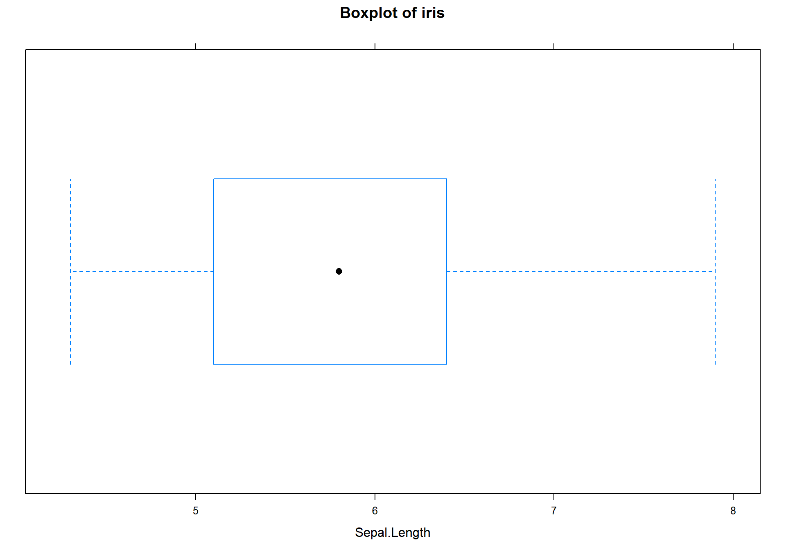
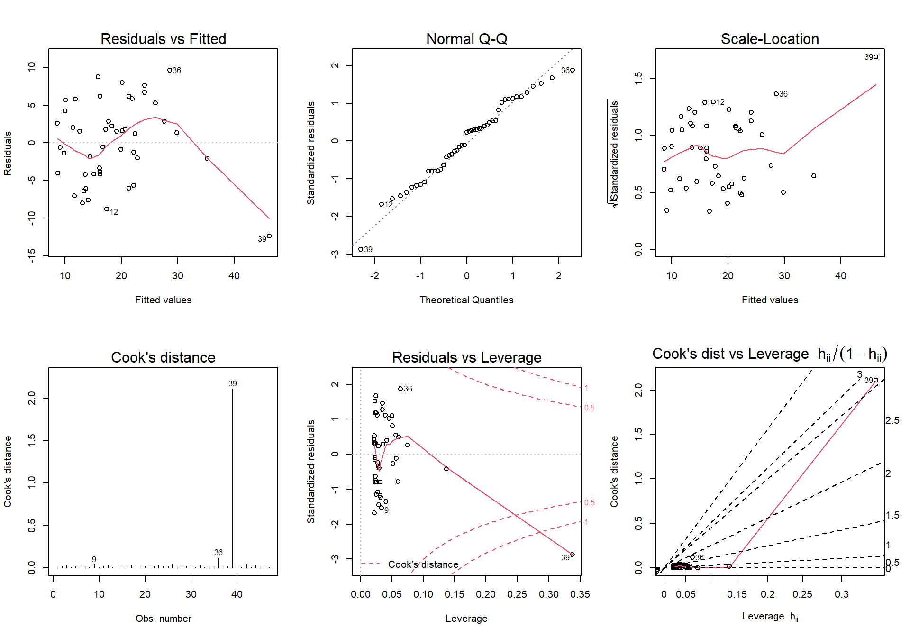
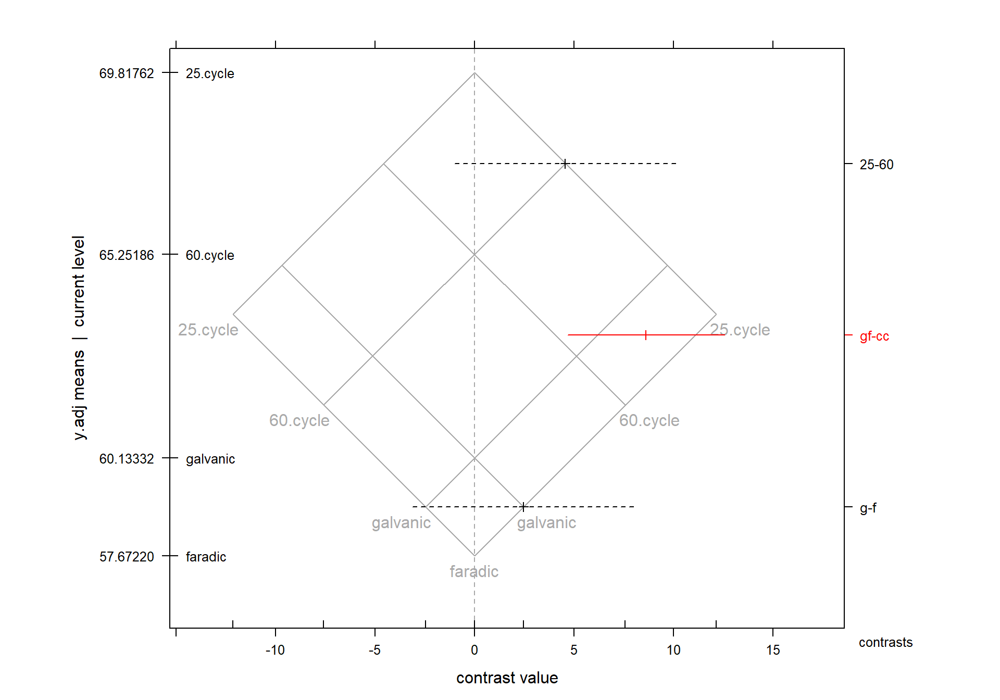
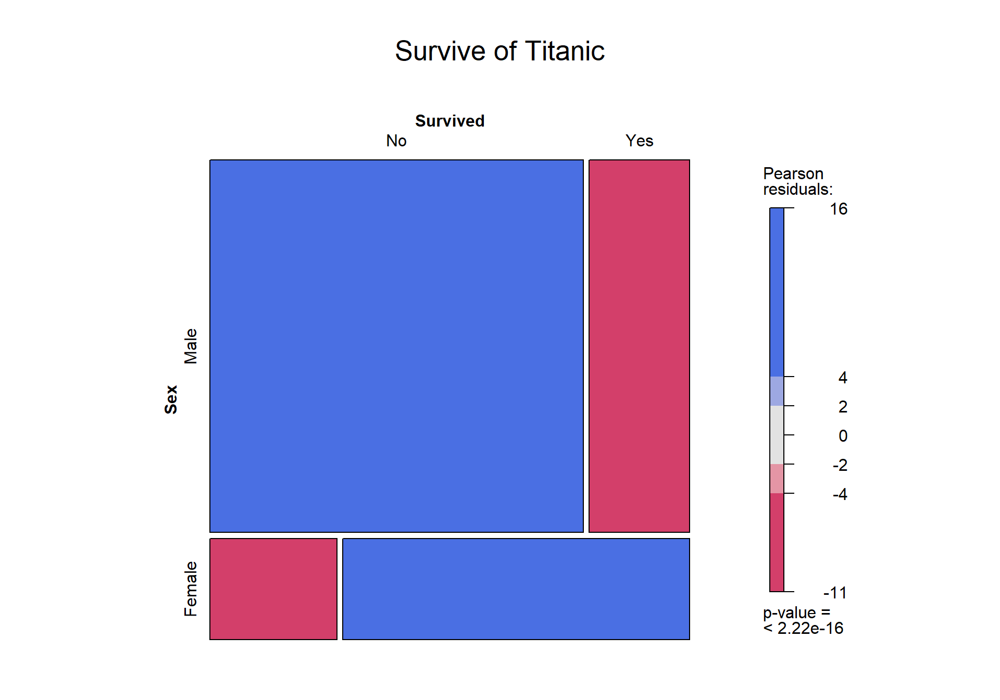

통계방법론1 실습코드 정리
202140191 엄태훈
2021-06-12(SAT)
본 Markdwon은 가천대학교 일반대학원 응용통계학과 고승곤 교수님의 통계방법론1 수업(2021.03.06 ~ 2021.06.05)내용을 정리한 것이다.
설명하고자 하는 내뇽과 본 Markdown의 목차는 다음과 같다.
| 챕터 | 제목 | 수업날짜 |
|---|---|---|
| Chapter2 | Data and Statistics | 2021.03.13 |
| Chapter3 | Statistics Concepts | 2021.03.13 |
| Chapter4 | Graphs | 2021.03.20 |
| Chapter5 | Introductory Inference | 2021.03.27~2021.04.03 |
| Chapter15 | Bivariate Statistics—Discrete Data | 2021.04.10 |
| Chapter6 | One-Way Analysis of Variance | 2021.04.17 |
| Chapter7 | Multiple Comparisons | 2021.05.01 |
| Chapter12 | Two-Way Analysis of Variance | 2021.05.08 |
| Chapter13 | Design of Experiments - Factorial Desings | 2021.05.15 |
| Chapter8 | Linear Regression by Least Squares | 2021.05.22 |
| Chapter9 | Multiple Regression - More than One Predictor | 2021.05.22 |
| Chapter10 | Multiple Regression - Dummy Variables,Contrasts,and Analysis of Covariacne | 2021.06.05 |
Chap2 Data and Statistics
통계의 역사는 꽤나 오래된 역사를 가지고 있지만, 본격적으로 통계학이라는 분야가 생겨난 것은 약 100~200년이라고 할 수 있다.
과거에 통계학 분야는 따로 하나의 분야로 분류되지 않고, 통계는 대부분 수학의 일종으로 생각되었다.
이러한 통계학은 현대사회에서 가장 핫한 주제 중 하나인 빅데이터와 연관되어 중요한 학문 중 하나로 활발히 연구되고 있다.
한 정의에 따르면, 통계는 데이터로부터 결론을 모으고 분석하고 그리기 위한 기술이라고 설명되고 있다.
통계 연구는 실험, 설문조사, 과거부터 쌓여온 데이터들 등의 관측치들을 모으고 요약하는 데에 크게 관련이 있다. 이러한 요약을 통해서 조사자는 폭넓은 타당성을 가지는 결과를 그릴 수 있다.
2.1 Types of Data
Count data: 관측치가 음이 아닌 정수 값만 취할 수 있는 데이터이다. 예를 들어, 동전 던지기에서 앞면의 개수 = {0,1,2,3…} 같은 데이터를 말한다.
Categorical data: 각각의 데이터가 뚜렷하여 범주로 나눌 수 있는 데이터이다.
명목형 변수, 클래스 변수, 팩터라고도 불리며, 다양한 범주 또는 범주형 변수의 클래스를 수준이라고 부른다.
Ex) 사람의 성별, 혈액형
bloodtype = c("A","B","AB","O","AB","B")
data.frame(bloodtype)## bloodtype
## 1 A
## 2 B
## 3 AB
## 4 O
## 5 AB
## 6 B- Ordered data: 데이터를 순위, 순서로 나열할 수 있는 데이터를 말한다.
Ex) 대학교의 학점, 올림픽 순위
country = c("KOREA","USA","UK","RUSSIA","JAPAN")
rank = as.numeric(c(1,3,5,4,2))
data.frame(country,rank)## country rank
## 1 KOREA 1
## 2 USA 3
## 3 UK 5
## 4 RUSSIA 4
## 5 JAPAN 2- Interval Data: 데이터의 값이 그들 사이에 구간으로 나타낼 수 있지만 비율 관계는 없는 데이터를 말한다.
EX) 온도
temp = c(36.0,18.0,36.0,28.0,43.0)
data.frame(temp)## temp
## 1 36
## 2 18
## 3 36
## 4 28
## 5 43- Ratio Data: 절대적 기준인 0이 존재하고 숫자 간의 비율이 산술적 의미를 가지는 데이터를 말한다.
EX) 키, 몸무게
Name = c("JAMES","ALICE","JOHN","JANE","ANNA")
Height = c(175,160,183,165,185)
Weight = c(67,45,70,50,74)
data.frame(Name,Height,Weight)## Name Height Weight
## 1 JAMES 175 67
## 2 ALICE 160 45
## 3 JOHN 183 70
## 4 JANE 165 50
## 5 ANNA 185 742.2 R 프로그램에서 데이터 사용하기
R에서는 기본적으로 프로그램들 안에 내장돼 있는 데이터들이 있다. 이러한 데이터들은 특정 패키지를 불러오지 않고도 사용할 수 있거나, 특정 패키지를 불러와야 사용가능하다.
기본적으로 R에 내장돼 있는 데이터들은 data(데이터명)을 입력하고 데이터명을 입력하면 불러올 수 있다.
2.3 특정 패키지 없이 데이터 불러오기
iris 데이터는 특정 패키지를 불러오지 않아도 기본적으로 사용 가능한 꽃의 정보에 대한 데이터이다.
data(iris)
head(iris,10)## Sepal.Length Sepal.Width Petal.Length Petal.Width Species
## 1 5.1 3.5 1.4 0.2 setosa
## 2 4.9 3.0 1.4 0.2 setosa
## 3 4.7 3.2 1.3 0.2 setosa
## 4 4.6 3.1 1.5 0.2 setosa
## 5 5.0 3.6 1.4 0.2 setosa
## 6 5.4 3.9 1.7 0.4 setosa
## 7 4.6 3.4 1.4 0.3 setosa
## 8 5.0 3.4 1.5 0.2 setosa
## 9 4.4 2.9 1.4 0.2 setosa
## 10 4.9 3.1 1.5 0.1 setosa2.4 특정 패키지의 데이터 불러오기
특정 패키지의 데이터를 불러오고자 하는 경우, 먼저 패키지를 설치하고 로드하는 과정을 거쳐야한다.
install.packages("패키지명")을 통해 패키지를 설치한다.
! 이때, 반드시 “패키지명”으로 해야한다. 패키지명에 ""을 붙이지 않으면 패키지 이름을 글자로 인식을 못하기 때문이다.
패키지 설치를 완료하면, library(패키지명)을 통해 앞에서 설치한 패키지를 로드한다.
-> library의 경우 “패키지명”, 패키지명 두 방법 모두 인식한다.
R에서 HH패키지에 들어있는 crime데이터를 불러와보자.
HH패키지의 crime데이터는 음주자와 비음주자의 범죄 빈도를 비교한 데이터이다.
#install.packages("HH")
library(HH)## Warning: package 'HH' was built under R version 4.0.4## Loading required package: lattice## Loading required package: grid## Loading required package: latticeExtra## Warning: package 'latticeExtra' was built under R version 4.0.4## Loading required package: multcomp## Warning: package 'multcomp' was built under R version 4.0.4## Loading required package: mvtnorm## Loading required package: survival## Loading required package: TH.data## Warning: package 'TH.data' was built under R version 4.0.4## Loading required package: MASS##
## Attaching package: 'TH.data'## The following object is masked from 'package:MASS':
##
## geyser## Loading required package: gridExtra## Warning: package 'gridExtra' was built under R version 4.0.4data(crime)
crime## perpetrator
## crime drinker abstainer
## arson 50 43
## rape 88 62
## violence 155 110
## stealing 379 300
## coining 18 14
## fraud 63 1442.5 reshape2 패키지의 활용
분석을 진행함에 있어 가장 시간을 많이 할애해야 하는 부분이면서 어려운 부분 중 하나가 바로 데이터를 전처리하는 것이다.
데이터 전처리는 분석 프로젝트의 80%를 차지할 정도로 매우 중요한 부분이다.
데이터 전처리(Preprocessing)은 데이터를 모델이 이해할 수 있는 형태로 변환 즉, 특정 분석에 적합하게 데이터를 가공하는 작업이다.
대부분의 데이터셋은 생각하는 것만큼 분석을 하기에 편리하게 정렬되어 있지않기 때문에, 이러한 데이터 전처리 과정은 필수적 확인사항이다.
R에서는 다양한 데이터 전처리 패키지를 제공하는데 그 중에서, dplyr, reshpae2패키지가 상당히 좋은 성능을 가지고 있다.
reshpae2패키지는 데이터의 모양을 변환 할 때 유용하다.
# reshape2 패키지를 설치하고 로드한다.
# install.packages("reshape2")
library(reshape2)
wide <- data.frame(Names=LETTERS[1:5],x=1:5,y=6:10)
wide## Names x y
## 1 A 1 6
## 2 B 2 7
## 3 C 3 8
## 4 D 4 9
## 5 E 5 10reshape2 패키지에서는 melt와 dcast함수가 가장 많이 쓰인다.
melt함수는 여러개의 칼럼을 한 컬럼에 세로로 정리할 때 사용된다.
특정 변수를 식별자로 설정하고 나머지 변수들을 측정값의 칼럼으로 바꿀 수 있다.
melt(데이터,id.vars,measure.vars)
- 데이터: melt에 적용할 데이터를 넣는다.
- id.vars: 식별 칼럼명을 넣는다. 즉, 여러개의 칼럼이 하나로 만들어 질때 빼고싶은 칼럼명을 넣는다.
- measure.vars: 하나의 칼럼으로 만들 여러개의 칼럼을 넣는다. id.vars에 칼럼을 지정해주면, measure.vars를 지정하지 않아도 자동으로 남은 칼럼은 measure.vars에 들어가게 된다.
long <- melt(wide,id.vars="Names")
long ## Names variable value
## 1 A x 1
## 2 B x 2
## 3 C x 3
## 4 D x 4
## 5 E x 5
## 6 A y 6
## 7 B y 7
## 8 C y 8
## 9 D y 9
## 10 E y 10id.vars = "Names"로 지정하여 Names를 식별자로 하고 나머지 x,y칼럼을 variable이라는 한 칼럼으로 정리를 하였다.
id.vars를 입력하였기 때문에, measure.vars에 자동으로 x,y칼럼이 들어간것을 확인할 수 있다.
melt(wide,id.vars=c("Names","x"))## Names x variable value
## 1 A 1 y 6
## 2 B 2 y 7
## 3 C 3 y 8
## 4 D 4 y 9
## 5 E 5 y 10식별자를 2개로 설정하는 경우, c()를 이용하여 넣어줘어야 한다.
식별자가 Names,x 두 개로 설정되어 y 칼럼에 대해서만 측정값을 나눈 것을 확인할 수 있다.
melt함수가 여러개의 칼럼을 하나의 칼럼으로 좁게 변환했다면, dcast함수는 하나의 칼럼을 여러개의 칼럼으로 넓게 변환할 수 있다.
dcast(데이터,Formula,value) - 데이터: dcast 함수를 적용할 데이터를 넣는다.
- Formula: 식별 칼럼명 ~ 하나로 뭉친 칼럼명의 형태로 넣는다.
- value: 데이터의 값을 가지고있는 칼럼을 넣는다.
wideagain <- dcast(data=long,Names~variable,value="value")
wideagain## Names x y
## 1 A 1 6
## 2 B 2 7
## 3 C 3 8
## 4 D 4 9
## 5 E 5 10dcast함수를 통해 Names 변수를 식별자로 고정하고 variable변수를 여러개의 칼럼으로 구분되게 Formula를 설정하였다.
데이터의 값을 가지고 있는 value를 value로 설정한 것을 확인할 수 있다.
melt함수를 통해 하나의 칼럼으로 변환했던 데이터가 dcast함수를 통해 여러개의 칼럼으로 구분된 것을 확인할 수 있다.
2.6 dplyr 패키지의 활용
dplyr패키지의 경우 데이터 전처리와 조작에서 최고의 성능을 가진다고 해도 과언이 아니다.
많은 R 코드를 살펴보면 %>%라는 표시를 심심치 않게 볼 수 있는데, 이는 dplyr 패키지에서 사용되는 것이다.
%>%를 통해 스텝을 정리해주기 때문에, 가독성 또한 높아지는 것을 확인할 수 있다.
dplyr 패키지를 사용하기 위해서는 보통 원하는 데이터를 입력한 후, %>%(파이프라인)을 해주고 전처리 작업을 진행한다.
dplyr의 select 함수를 이용하면 데이터에서 원하는 칼럼만을 추출하여 가져올 수 있다.
library(dplyr)##
## Attaching package: 'dplyr'## The following object is masked from 'package:gridExtra':
##
## combine## The following object is masked from 'package:MASS':
##
## select## The following objects are masked from 'package:stats':
##
## filter, lag## The following objects are masked from 'package:base':
##
## intersect, setdiff, setequal, uniondata(iris)
iris %>%
select(Sepal.Width,Sepal.Length)## Sepal.Width Sepal.Length
## 1 3.5 5.1
## 2 3.0 4.9
## 3 3.2 4.7
## 4 3.1 4.6
## 5 3.6 5.0
## 6 3.9 5.4
## 7 3.4 4.6
## 8 3.4 5.0
## 9 2.9 4.4
## 10 3.1 4.9
## 11 3.7 5.4
## 12 3.4 4.8
## 13 3.0 4.8
## 14 3.0 4.3
## 15 4.0 5.8
## 16 4.4 5.7
## 17 3.9 5.4
## 18 3.5 5.1
## 19 3.8 5.7
## 20 3.8 5.1
## 21 3.4 5.4
## 22 3.7 5.1
## 23 3.6 4.6
## 24 3.3 5.1
## 25 3.4 4.8
## 26 3.0 5.0
## 27 3.4 5.0
## 28 3.5 5.2
## 29 3.4 5.2
## 30 3.2 4.7
## 31 3.1 4.8
## 32 3.4 5.4
## 33 4.1 5.2
## 34 4.2 5.5
## 35 3.1 4.9
## 36 3.2 5.0
## 37 3.5 5.5
## 38 3.6 4.9
## 39 3.0 4.4
## 40 3.4 5.1
## 41 3.5 5.0
## 42 2.3 4.5
## 43 3.2 4.4
## 44 3.5 5.0
## 45 3.8 5.1
## 46 3.0 4.8
## 47 3.8 5.1
## 48 3.2 4.6
## 49 3.7 5.3
## 50 3.3 5.0
## 51 3.2 7.0
## 52 3.2 6.4
## 53 3.1 6.9
## 54 2.3 5.5
## 55 2.8 6.5
## 56 2.8 5.7
## 57 3.3 6.3
## 58 2.4 4.9
## 59 2.9 6.6
## 60 2.7 5.2
## 61 2.0 5.0
## 62 3.0 5.9
## 63 2.2 6.0
## 64 2.9 6.1
## 65 2.9 5.6
## 66 3.1 6.7
## 67 3.0 5.6
## 68 2.7 5.8
## 69 2.2 6.2
## 70 2.5 5.6
## 71 3.2 5.9
## 72 2.8 6.1
## 73 2.5 6.3
## 74 2.8 6.1
## 75 2.9 6.4
## 76 3.0 6.6
## 77 2.8 6.8
## 78 3.0 6.7
## 79 2.9 6.0
## 80 2.6 5.7
## 81 2.4 5.5
## 82 2.4 5.5
## 83 2.7 5.8
## 84 2.7 6.0
## 85 3.0 5.4
## 86 3.4 6.0
## 87 3.1 6.7
## 88 2.3 6.3
## 89 3.0 5.6
## 90 2.5 5.5
## 91 2.6 5.5
## 92 3.0 6.1
## 93 2.6 5.8
## 94 2.3 5.0
## 95 2.7 5.6
## 96 3.0 5.7
## 97 2.9 5.7
## 98 2.9 6.2
## 99 2.5 5.1
## 100 2.8 5.7
## 101 3.3 6.3
## 102 2.7 5.8
## 103 3.0 7.1
## 104 2.9 6.3
## 105 3.0 6.5
## 106 3.0 7.6
## 107 2.5 4.9
## 108 2.9 7.3
## 109 2.5 6.7
## 110 3.6 7.2
## 111 3.2 6.5
## 112 2.7 6.4
## 113 3.0 6.8
## 114 2.5 5.7
## 115 2.8 5.8
## 116 3.2 6.4
## 117 3.0 6.5
## 118 3.8 7.7
## 119 2.6 7.7
## 120 2.2 6.0
## 121 3.2 6.9
## 122 2.8 5.6
## 123 2.8 7.7
## 124 2.7 6.3
## 125 3.3 6.7
## 126 3.2 7.2
## 127 2.8 6.2
## 128 3.0 6.1
## 129 2.8 6.4
## 130 3.0 7.2
## 131 2.8 7.4
## 132 3.8 7.9
## 133 2.8 6.4
## 134 2.8 6.3
## 135 2.6 6.1
## 136 3.0 7.7
## 137 3.4 6.3
## 138 3.1 6.4
## 139 3.0 6.0
## 140 3.1 6.9
## 141 3.1 6.7
## 142 3.1 6.9
## 143 2.7 5.8
## 144 3.2 6.8
## 145 3.3 6.7
## 146 3.0 6.7
## 147 2.5 6.3
## 148 3.0 6.5
## 149 3.4 6.2
## 150 3.0 5.9dplyr의 filter함수를 이용하면 조건에 맞는 행만을 추출하여 가져올 수 있다.
iris %>%
filter(Sepal.Width >3)## Sepal.Length Sepal.Width Petal.Length Petal.Width Species
## 1 5.1 3.5 1.4 0.2 setosa
## 2 4.7 3.2 1.3 0.2 setosa
## 3 4.6 3.1 1.5 0.2 setosa
## 4 5.0 3.6 1.4 0.2 setosa
## 5 5.4 3.9 1.7 0.4 setosa
## 6 4.6 3.4 1.4 0.3 setosa
## 7 5.0 3.4 1.5 0.2 setosa
## 8 4.9 3.1 1.5 0.1 setosa
## 9 5.4 3.7 1.5 0.2 setosa
## 10 4.8 3.4 1.6 0.2 setosa
## 11 5.8 4.0 1.2 0.2 setosa
## 12 5.7 4.4 1.5 0.4 setosa
## 13 5.4 3.9 1.3 0.4 setosa
## 14 5.1 3.5 1.4 0.3 setosa
## 15 5.7 3.8 1.7 0.3 setosa
## 16 5.1 3.8 1.5 0.3 setosa
## 17 5.4 3.4 1.7 0.2 setosa
## 18 5.1 3.7 1.5 0.4 setosa
## 19 4.6 3.6 1.0 0.2 setosa
## 20 5.1 3.3 1.7 0.5 setosa
## 21 4.8 3.4 1.9 0.2 setosa
## 22 5.0 3.4 1.6 0.4 setosa
## 23 5.2 3.5 1.5 0.2 setosa
## 24 5.2 3.4 1.4 0.2 setosa
## 25 4.7 3.2 1.6 0.2 setosa
## 26 4.8 3.1 1.6 0.2 setosa
## 27 5.4 3.4 1.5 0.4 setosa
## 28 5.2 4.1 1.5 0.1 setosa
## 29 5.5 4.2 1.4 0.2 setosa
## 30 4.9 3.1 1.5 0.2 setosa
## 31 5.0 3.2 1.2 0.2 setosa
## 32 5.5 3.5 1.3 0.2 setosa
## 33 4.9 3.6 1.4 0.1 setosa
## 34 5.1 3.4 1.5 0.2 setosa
## 35 5.0 3.5 1.3 0.3 setosa
## 36 4.4 3.2 1.3 0.2 setosa
## 37 5.0 3.5 1.6 0.6 setosa
## 38 5.1 3.8 1.9 0.4 setosa
## 39 5.1 3.8 1.6 0.2 setosa
## 40 4.6 3.2 1.4 0.2 setosa
## 41 5.3 3.7 1.5 0.2 setosa
## 42 5.0 3.3 1.4 0.2 setosa
## 43 7.0 3.2 4.7 1.4 versicolor
## 44 6.4 3.2 4.5 1.5 versicolor
## 45 6.9 3.1 4.9 1.5 versicolor
## 46 6.3 3.3 4.7 1.6 versicolor
## 47 6.7 3.1 4.4 1.4 versicolor
## 48 5.9 3.2 4.8 1.8 versicolor
## 49 6.0 3.4 4.5 1.6 versicolor
## 50 6.7 3.1 4.7 1.5 versicolor
## 51 6.3 3.3 6.0 2.5 virginica
## 52 7.2 3.6 6.1 2.5 virginica
## 53 6.5 3.2 5.1 2.0 virginica
## 54 6.4 3.2 5.3 2.3 virginica
## 55 7.7 3.8 6.7 2.2 virginica
## 56 6.9 3.2 5.7 2.3 virginica
## 57 6.7 3.3 5.7 2.1 virginica
## 58 7.2 3.2 6.0 1.8 virginica
## 59 7.9 3.8 6.4 2.0 virginica
## 60 6.3 3.4 5.6 2.4 virginica
## 61 6.4 3.1 5.5 1.8 virginica
## 62 6.9 3.1 5.4 2.1 virginica
## 63 6.7 3.1 5.6 2.4 virginica
## 64 6.9 3.1 5.1 2.3 virginica
## 65 6.8 3.2 5.9 2.3 virginica
## 66 6.7 3.3 5.7 2.5 virginica
## 67 6.2 3.4 5.4 2.3 virginicadplyr의 group_by함수는 원하는 그룹 변수에 따라 계산을 할 수 있게 해준다.
그룹으로 묶은 후, summarise 함수를 통해, 그룹에 따른 원하는 통계량을 계산할 수 있다.
iris$Sepal.Width## [1] 3.5 3.0 3.2 3.1 3.6 3.9 3.4 3.4 2.9 3.1 3.7 3.4 3.0 3.0 4.0 4.4 3.9 3.5
## [19] 3.8 3.8 3.4 3.7 3.6 3.3 3.4 3.0 3.4 3.5 3.4 3.2 3.1 3.4 4.1 4.2 3.1 3.2
## [37] 3.5 3.6 3.0 3.4 3.5 2.3 3.2 3.5 3.8 3.0 3.8 3.2 3.7 3.3 3.2 3.2 3.1 2.3
## [55] 2.8 2.8 3.3 2.4 2.9 2.7 2.0 3.0 2.2 2.9 2.9 3.1 3.0 2.7 2.2 2.5 3.2 2.8
## [73] 2.5 2.8 2.9 3.0 2.8 3.0 2.9 2.6 2.4 2.4 2.7 2.7 3.0 3.4 3.1 2.3 3.0 2.5
## [91] 2.6 3.0 2.6 2.3 2.7 3.0 2.9 2.9 2.5 2.8 3.3 2.7 3.0 2.9 3.0 3.0 2.5 2.9
## [109] 2.5 3.6 3.2 2.7 3.0 2.5 2.8 3.2 3.0 3.8 2.6 2.2 3.2 2.8 2.8 2.7 3.3 3.2
## [127] 2.8 3.0 2.8 3.0 2.8 3.8 2.8 2.8 2.6 3.0 3.4 3.1 3.0 3.1 3.1 3.1 2.7 3.2
## [145] 3.3 3.0 2.5 3.0 3.4 3.0iris %>%
group_by(Species) %>%
summarise(Sepal_Width_m = mean(Sepal.Width),
Sepal_Length_m = mean(Sepal.Length))## # A tibble: 3 x 3
## Species Sepal_Width_m Sepal_Length_m
## * <fct> <dbl> <dbl>
## 1 setosa 3.43 5.01
## 2 versicolor 2.77 5.94
## 3 virginica 2.97 6.59group_by를 통해 iris 데어터의 꽃의 종류에 따라 데이터를 묶은 후, summarise를 통해 꽃의 종류별로 평균을 구한 것을 확인할 수 있다.
iris %>%
group_by(Species) %>%
summarise(count=n())## # A tibble: 3 x 2
## Species count
## * <fct> <int>
## 1 setosa 50
## 2 versicolor 50
## 3 virginica 50summarise(count=n())을 지정해주면 그룹에 따른 빈도 수를 구할 수도 있다.
2.7 결측치의 처리
NA가 하나라도 데이터의 존재하면 수치적인 계산을 진행하지 못한다.
ab = c(1:6,NA)
mean(ab)## [1] NA이때,na.rm =TRUE 옵션을 통해 결측치를 제거하고 계산을 진행할 수 있다.
mean(ab,na.rm=TRUE)## [1] 3.5na.rm = TRUE 옵션을 지정해준 결과, 결측치가 자동으로 제거되고 평균을 구하는 것을 알 수 있다.
계산을 진행하기 전, NA값을 제거하고 싶은 경우, na.omit()함수를 이용하여 결측치를 제거할 수 있다.
cd = na.omit(ab)
cd## [1] 1 2 3 4 5 6
## attr(,"na.action")
## [1] 7
## attr(,"class")
## [1] "omit"Summary of Chapter2
현대는 과거보다 데이터가 셀 수 없이 늘어난 빅데이터의 시대라고 불리고 있다. 이러한 시대에서 이론적인 지식도 상당히 중요하게 여겨지고 있지만, 이론적 지식과 얻어진 데이터를 분석하고 정리하는 능력 또한 매우 중요한 능력 중 하나로 여겨진다. 따라서, 이론적인 지식과 R,Python,SPSS,SAS등과 같은 통계적인 분석 프로그램의 지식을 쌓는 것도 상당히 중요한 부분을 차지하고 있다.
일반적으로 통계에서 측정척도는 명목척도, 서열척도, 구간척도, 비율척도 4가지로 나뉜다.
-> 명목척도: 측정대상을 고유한 특성에따라 분류한 것.
-> 서열척도: 측정대상을 순서 혹은 순위에 따라 분류한 것.
-> 구간척도: 측정대상이 가지고 있는 간격으로 수치를 부여한 것. 절대0점이 존재하지 않는다.
-> 비율척도: 측정대상의 비율에 대한 수치를 부여한 것. 절대0점이 존재한다.분석을 진행하고자 할때, 우리가 사용할 데이터의 형태가 분석을 진행하기에 적합하지 않은 경우가 종종 발생한다. 이러한 문제를 해결하는 방법이 바로 데이터 전처리(Preprocessing)이다. Preprocessing은 데이터를 분석에 적용할 수 있게 적합한 형태로 바꾸는 과정을 말한다.
데이터 전처리 과정은 분석 프로젝트 시간 중, 70~80%의 시간을 소비하는 작업이라고 할 정도로 가장 중요한 작업으로 여겨진다. 전처리를 어떻게 진행하는지에 따라서 분석 결과가 달라질수도 있다.
데이터 전처리 중 고려해야 하는 요소 중 하나이며, 분석을 방해하는 요소로 이상치, 결측치가 있다. 이상치는 데이터가 있지만 평균값보다 훨씬 높은 값을 가지거나 낮은 값을 가지는 데이터를 말한다. 이상치는 극단적인 값을 갖기 때문에 분석의 결과에 아주 큰 영향을 주기도한다.
결측치는 이상치와는 다르게 어떠한 이유로 데이터가 존재하지 않는 값을 말한다. 보통 R 혹은 python 언어에서 결측치가 있는 데이터를 불러올 경우, NA,NAN으로 표시된다.
결측치와 이상치의 경우 일반적으로 제거하는 것이 해결방법으로 여겨진다. 하지만, 데이터가 매우 적은 경우에는 데이터를 함부로 제거해서는 안 된다. 따라서 이러한 경우, 평균값 혹은 적절한 데이터로 대체하는 방법이 있다. R에서는
mice함수를 지원하는데, 이 함수는 시뮬레이션을 통해 결측치에 대해서 적절한 값을 채워 넣어준다.
Chap3 Statistics Concepts
평균(Mean)은 모든 관측값을 더해서 관측값 개수로 나눈 것이다. 특히, 조사자들이 모평균을 추정하고자 할 때 가장 흔하게 사용된다.
즉, 평균은 관심특성의 변수라고 할 수 있다.
표본평균은 다음과 같은 식을 사용하여 구할 수 있다.
\[ \overline{x} = \frac {\sum_{i=1}^n x_i}{n} \]
분산(Variance)은 편차를 제곱한 후 모두 더해서 전체 자료의 개수로 나눠준 값을 말한다. 즉, 편차의 제곱합의 평균이라고 말할 수 있다.
하지만, 편차의 제곱을 평균한 값이므로 자료의 단위가 제곱으로 바뀌어 기존의 자료와 단위가 달라지는 문제가 있다.
표본분산은 다음과 같은 식을 사용하여 구할 수 있다.
\[ s_x^2 = \frac {\sum_{i=1}^n (x_i - \mu)^2}{n-1} \]
표준편차(Standard error)는 자료의 산포도를 나타내는 수치로 분산에 제곱근을 취한 값이다. 측정값이 평균으로부터 멀리 떨어져 있을수록 표준편차는 커지게 된다.
분산으로 인해 달라진 단위를 해결하기 위해 등장한 개념이 바로 표준편차이다.
표준편차는 분산에 제곱근을 취하기 때문에 제곱으로 인해 변했던 단위를 원래대로 바꿔준다.
표본 표준편차는 다음과 같은 식을 사용하여 구할 수 있다.
\[ s_x = \sqrt\frac {\sum_{i=1}^n (x_i - \mu)^2}{n-1} \]
상관계수(Correlation)란 두 변수 x,y 사이에 상관관계 정도를 나타내는 수치이다.
x가 증가할 때, y가 증가하면 양의 상관관계이고 x가 감소할 때 y가 감소하면 음의 상관관계이다.
\[ r = \frac{S_{xy}}{\sqrt {S_{xx}}\sqrt{S_{yy}}} \]
R에서는 cor함수를 통해 상관계수를 구할 수 있다.
corrplot을 통해 상관계수의 그림을 그릴수도 있다.
data(iris)
cor(iris[,c(1:4)])## Sepal.Length Sepal.Width Petal.Length Petal.Width
## Sepal.Length 1.0000000 -0.1175698 0.8717538 0.8179411
## Sepal.Width -0.1175698 1.0000000 -0.4284401 -0.3661259
## Petal.Length 0.8717538 -0.4284401 1.0000000 0.9628654
## Petal.Width 0.8179411 -0.3661259 0.9628654 1.0000000Seapl.Length와 Petal.Length, Petal.Width는 양의 상관관계를 가지며, Sepal.Length와 Sepal.Width는 음의 상관관계를 가지는 것을 확인할 수 있다.
library(corrplot)## Warning: package 'corrplot' was built under R version 4.0.5## corrplot 0.84 loadedcorrplot(cor(iris[,c(1:4)]),method = "number")3.1 Histogram
히스토그램은 도수분포표를 시각적으로 표현한 막대그래프이다.
가로축에는 계급을, 세로축에 도수를 취한다.
각 막대의 높이는 해당 계급에 포함되는 자료의 개수를 의미한다.
R에서는 hist(연속형 데이터)를 통해 히스토그램을 그릴 수 있다.
- xlab: x축의 이름을 설정한다.
- ylab: y축의 이름을 설정한다.
- main: 그래프의 title을 설정한다.
library(HH)
b = c(1:20)
freq = sample(b,15,replace = TRUE)
hist(freq,xlab="Age",ylab="Frequency",main="Histogram of Age")3.2 Boxplots
quantile함수를 이용하면 데이터의 분위수를 확인할 수 있다.
data(tv)
quantile(tv$male.life.exp) ## 0% 25% 50% 75% 100%
## 50.00 59.75 66.00 69.50 76.00quantile함수를 이용하고 probs옵션을 이용하면 원하는 위치의 사분위수를 확인할 수 있다.
# 90% 사분위수를 찾는다.
quantile(tv$male.life.exp,probs=0.9) ## 90%
## 73.1Boxplot은 특정한 수치 값을 기반으로 그려진, 자료 특성이 요약된 그래프이다.
Q1, 중앙값, Q3, 최댓값, 최솟값의 정보를 한 그림 안에 보여준다.
박스안의 가운데 실선은 중앙값을 나타내며, 박스 위의 선과 아래 선은 각각 Q3, Q1을 나타낸다.
위쪽 아래쪽 수염은 각각 최댓값 최솟값을 나타낸다.
Boxplot(연속형 데이터)를 이용하여 그릴 수 있다.
boxplot(iris$Sepal.Length)horizontal = T옵션을 이용하면 Boxplot을 회전시켜 나타낼 수 있다.
boxplot(iris$Sepal.Length,horizontal = T) 또한, R에서는 다중 boxplot을 그릴수도 있다. 이러한 경우에는 boxplot(그룹 데이터 ~ 연속형 데이터)의 Formula 형태를 지정해주면 다중 boxplot이 그려진다.
data(mtcars)
boxplot(mtcars$mpg~mtcars$cyl)Formula의 형태로 지정해준 결과, cyl의 갯수에 따라서 mpg에 대한 boxplot을 그리는 것을 확인할 수 있다.
col옵션을 이용하여 box의 색깔 또한 지정해줄 수 있다.
data(mtcars)
boxplot(mtcars$mpg~mtcars$cyl,col=c("red","blue","green"))3.3 The Binomial Distribution
베르누이 시행은 결과가 두 가지 중 하나로만 나오는 실험이나 시행을 일컫는다.
성공확률이 p인 베르누이 시행을 n번 반복하는 경우, 성공한 횟수를 확률 변수 X라고 해보자.
이 확률변수 X의 확률변수를 모수가 (n,p)인 이항분포라고 한다.
\[ X \sim B(n,p) \]
pbinom(size,prob,q) 함수를 이용하면 이항분포의 누적확률 값을 계산할 수 있다.
- size: n의 크기를 나타낸다.
- prob: 성공 확률을 나타낸다.
- q: 구하고 싶은 누적 성공 횟수
dbinom(size,prob,x) 함수는 이항분포의 확률값을 계산한다.
- size: n의 크기를 나타낸다.
- prob: 성공 확률을 나타낸다.
- x: 성공 횟수를 나타낸다.
pbinom(size=15,prob=.4,q=6)## [1] 0.6098132dbinom(size=15,prob=.4,x=6) ## [1] 0.20659763.4 NTplot
NTplot함수는 정규분포 및 t분포에 대한 검정과 신뢰 구간을 나타내는 그림을 그린다.
shiny = TRUE옵션을 지정하면 모델의 파라미터를 변경에 따른 검정과 신뢰구간의 변화를 살펴볼 수 있다.
NTplot(shiny=FALSE)- mean0: 모평균의 값을 지정한다.
- xbar: 표본평균의 값을 지정한다.
- sd: 모표준편차를 설정한다. (표본의 크기를 설정하면 자동으로 표준오차를 구해준다.)
- n: 표본의 크기를 설정한다.
NTplot(mean0=0,xbar=1,sd=1)NTplot(mean0=0,xbar=1,sd=2,n=30)3.5 Simple Random Sampling
단순 무작위 추출법은 유한모집단에서 n개의 추출단위로 구성된 모든 부분집합들이 표본으로 선택될 확률이 같도록 설계된 표본추출방법이다.
R에서는 sample 함수를 통해 쉽게 단순 무작위 추출법을 진행할 수 있다.
sample(데이터, 원하는 표본 수, replace) replace=FALSE를 지정하면 비복원 추출을 진행한다.
a <- c(1:20)
sample(a,10,replace=FALSE) ## [1] 14 7 11 1 16 12 15 13 18 2replace=TRUE를 지정하면 비복원 추출을 진행한다.
sample(a,10,replace=TRUE)## [1] 9 19 13 19 15 9 13 9 9 193.6 Stratified Random Sampling
모집단을 비슷한 성질을 갖는 2개 이상의 동질적인 층을 구분하고, 각 층으로부터 단순무작위추출방법을 적용하여 표본을 추출하는 방법이다.
단순 무작위 추출법과 달리 층화추출을 위해서는 sampling 패키지를 설치해야 한다.
sampling 패키지의 strata 함수를 통해 층화추출법을 할 수 있다.
strata(data,startnames,size,method)의 형태이다.
- data: 표본 추출을 원하는 데이터
- startnames: 표본 추출을 위해 나누고자 하는 층
- size: 각 층에서 뽑을 표본의 수
- method: 층화 추출에 이욜할 방법
srswor은 비복원 단순임의추출, srswr은 복원 단순임의 추출, Poisson은 포아송 추출, Systematic은 계통 추출방법을 의미한다.
getdata(데이터,strata를 저장한 객체)를 이용하여 데이터 프레임으로부터 그 표본의 데이터를 가져온다.
library(sampling)## Warning: package 'sampling' was built under R version 4.0.4##
## Attaching package: 'sampling'## The following objects are masked from 'package:survival':
##
## cluster, strataSex <- c("M","F","M","M","M","F","F","M","F","M","M","F","F")
Height <- c(177,160,180,182,183,170,165,172,186,181,167,159,155)
Age <- c(20,22,23,21,22,24,20,28,24,23,21,24,26)
dat <- as.data.frame(cbind(Age,Height,Sex))
strat_sample<-strata(data=dat,stratanames = "Sex",size=c(3,3),method="srswor")
strat_data <- getdata(dat,strat_sample)
strat_data## Age Height Sex ID_unit Prob Stratum
## 1 20 177 M 1 0.4285714 1
## 4 21 182 M 4 0.4285714 1
## 5 22 183 M 5 0.4285714 1
## 6 24 170 F 6 0.5000000 2
## 7 20 165 F 7 0.5000000 2
## 9 24 186 F 9 0.5000000 2지정해준 옵션에 따라 층화추출이 적절하게 적용된 것을 확인할 수 있다.
Prob는 각 층에서 뽑힐 확률을 의미하고 Stratum은 층번호를 의미한다. (여기서 “M”은 1, “F”은 2)
3.7 Cluster Random Sampling
모집단을 조사단위 또는 집계단위를 모은 군집으로 나누고, 이들 군집들 중 일부의 군집을 추출한 후 추출된 군집에서 일부 또는 전부를 표본으로 추출하는 방법이다.
R에서는 집락랜덤추출법에 대한 패키지를 제공하지 않아 간단한 예제를 통해 방법을 코드로 구현해 보았다.
# AirPassengers 데이터는 1949~1960년대 까지의 월 별 비행기 탑승객 데이터이다.
data(AirPassengers)
AirPassengers <- data.frame(matrix(as.numeric(AirPassengers), ncol = 12, byrow = TRUE))
colnames(AirPassengers) <- c("Jan", "Feb", "Mar", "Apr", "May", "Jun", "Jul", "Aug", "Sep", "Oct", "Nov", "Dec")
rownames(AirPassengers) <- 1949:1960
# 시계열 데이터를 데이터 프레임 형태로 바꾸어 주었다.
df_1950s <- AirPassengers[c(1:4),]
df_1955s <- AirPassengers[c(5:8),]
df_1960s <- AirPassengers[c(9:12),]집락추출법은 집단 내에서 이질적이고 집단 간 차이는 동질적이다.
1950년대 초반, 1950년대 중반, 1950년대 후반으로 데이터를 나누어 집단내에 1~3월:봄, 4~6월:여름, 7~9월:가을, 10~12:월:겨울로 들어가게 하였다.
따라서, 집단 내에서는 계절 별로 데이터가 있으므로 이질적이고 다른 집단과는 동질적이다.
# 나눠진 군집별로 각 2개의 데이터를 추출하였다.
cluster<-sample(df_1950s,2,replace=FALSE)
cluster1<-sample(df_1955s,2,replace=FALSE)
cluster2<-sample(df_1960s,2,replace=FALSE)3.8 Systematic Random Sampling
첫 번째 요소는 무작위로 선정하고 목록의 매번 k번째 요소를 표본으로 선정하는 표본추출 방법이다.
계통추출은 doBy 패키지의 sampleBy 함수를 이용한다.
library(doBy)## Warning: package 'doBy' was built under R version 4.0.4##
## Attaching package: 'doBy'## The following object is masked from 'package:dplyr':
##
## order_bysampleBy(formula=~Species,frac=0.2,data=iris,systematic = TRUE)## Sepal.Length Sepal.Width Petal.Length Petal.Width Species
## setosa.1 5.1 3.5 1.4 0.2 setosa
## setosa.6 5.4 3.9 1.7 0.4 setosa
## setosa.11 5.4 3.7 1.5 0.2 setosa
## setosa.16 5.7 4.4 1.5 0.4 setosa
## setosa.21 5.4 3.4 1.7 0.2 setosa
## setosa.26 5.0 3.0 1.6 0.2 setosa
## setosa.31 4.8 3.1 1.6 0.2 setosa
## setosa.36 5.0 3.2 1.2 0.2 setosa
## setosa.41 5.0 3.5 1.3 0.3 setosa
## setosa.46 4.8 3.0 1.4 0.3 setosa
## versicolor.51 7.0 3.2 4.7 1.4 versicolor
## versicolor.56 5.7 2.8 4.5 1.3 versicolor
## versicolor.61 5.0 2.0 3.5 1.0 versicolor
## versicolor.66 6.7 3.1 4.4 1.4 versicolor
## versicolor.71 5.9 3.2 4.8 1.8 versicolor
## versicolor.76 6.6 3.0 4.4 1.4 versicolor
## versicolor.81 5.5 2.4 3.8 1.1 versicolor
## versicolor.86 6.0 3.4 4.5 1.6 versicolor
## versicolor.91 5.5 2.6 4.4 1.2 versicolor
## versicolor.96 5.7 3.0 4.2 1.2 versicolor
## virginica.101 6.3 3.3 6.0 2.5 virginica
## virginica.106 7.6 3.0 6.6 2.1 virginica
## virginica.111 6.5 3.2 5.1 2.0 virginica
## virginica.116 6.4 3.2 5.3 2.3 virginica
## virginica.121 6.9 3.2 5.7 2.3 virginica
## virginica.126 7.2 3.2 6.0 1.8 virginica
## virginica.131 7.4 2.8 6.1 1.9 virginica
## virginica.136 7.7 3.0 6.1 2.3 virginica
## virginica.141 6.7 3.1 5.6 2.4 virginica
## virginica.146 6.7 3.0 5.2 2.3 virginica# formula를 통해 그룹 데이터를 지정한다.
# frac을 통해 표본 추출의 비율을 정하고 systematic = TRUE를 통해 계통추출 여부를 결정한다.3.9 density plot
밀도함수의 그래프는 갖고 있는 데이터(x,y)를 이용해 plot을 그리면 쉽게 나타낼 수 있다.
x <- seq(-2,2,length=50)
y <- dnorm(x)
plot(x,y,type="l")원하는 확률 구간을 색칠하고 싶은 경우 xlim,ylim에 대한 전처리를 진행한다.
그 이후에, polygon 함수를 이용하여 다각형으로 채워 넣으면 된다.
polygon함수의 density옵션은 색칠을 얼마나 진하게 할지의 정도를 나타낸다.
xlim <- x[x >= -1 & x <= 1]
ylim <- y[x >= -1 & x <= 1]
xlim <- c(xlim[1],xlim,tail(xlim,1))
ylim <- c(0,ylim,0)
plot(x,y,type="l")
polygon(xlim,ylim,density=25)이산형 확률변수의 density plot은 다음과 같이 그릴 수 있다.
binom <- dbinom(0:8,size=8,prob=0.5)
names(binom) <- c(0:8)
barplot(binom,ylab="Probability",xlab="확률변수 X",main="Binomial Dist density plot",col="#FFA7A7")
lines(binom)이항분포에서 n의 크기가 커짐에 따라 어떻게 모양이 변하는지 살펴보자.
b1 <- dbinom(0:30,10,0.2)
b2 <- dbinom(0:30,20,0.2)
b3 <- dbinom(0:30,30,0.2)
b4 <- dbinom(0:30,40,0.2)
b5 <- dbinom(0:30,50,0.2)
b6 <- dbinom(0:30,60,0.2)
plot(b1,type="l",xlab='확률변수 X',ylab="Probability",col=1)
lines(b2,type="l",col=2)
lines(b3,type="l",col=3)
lines(b4,type="l",col=4)
lines(b5,type="l",col=5)
lines(b6,type="l",col=6)
legend("topright",c('n=10','n=20','n=30','n=40','n=50','n=60'),col=1:6,pch=1)이항분포의 경우, 반복횟수가 커질수록 정규분포와 같은 종모형에 가까워지는 것을 확인할 수 있다.
Summary of Chapter3
우리가 분석을 진행하는 경우, 분석하고자 하는 모든 데이터를 이용할 수는 없다. 따라서 전체 데이터 중, 대표성을 가지는 일부 데이터만 추출하여 분석을 진행하는 경우가 많다. 이렇게 전체 모집단으로 부터 추출한 임의의 데이터를 샘플이라고 한다.
샘플의 경우 모집단의 데이터를 대표할 수 있는 데이터로 구성이 되어있어야 한다. 따라서, 이러한 샘플을 추출하는 과정이 매우 중요한데, 이러한 과정을 샘플링이라고 한다. 대부분 샘플링은 모집단으로 부터 임의로 랜덤하게 추출하는 단순무작위추출방법이 가장 많이 쓰인다. 그 외에 집락추출법,계층추출법,층화추출법이 있다.
데이터로 부터 샘플을 얻게 되면 샘플을 통해서 데이터의 특성을 알아보고 모수에 대한 추정이 필요하다. 이때, 많이 쓰이는 통계적 개념들이 바로 평균, 분산, 표준편차이다. 평균은 관심변수의 특성으로 모든 관측값을 관측값의 갯수로 나눈것이며, 분산, 표준편차는 데이터가 얼마만큼 퍼져있는지에 대한 산포를 나타낸다. 표준편차는 산포의 단위를 동일하게 만들기 위해 제곱근을 해주는 것이 분산과 다른 점이다.
히스토그램(Histogram)은 도수의 분포를 그래프로 나타낸 것이다. 보통 가로는 계급, 세로는 도수를 뜻한다. 히스토그램은 도수가 어느 계급값에 집중되어 있는지 확인하는데에 쓰이기도 하지만, 데이터의 정규성을 확인하고자 할 때 쓰이기도한다. 데이터가 정규성을 따르게 되면 종모양을 띄게 되는데, 히스토그램을 통해 이러한 정보를 확인해 볼 수 있다. **
박스그림(Boxplot)은 연속형 자료로부터 최소값,Q1,Q2,Q3,최대값의 요약 수치를 표현하는 그래프이다. 또한, 이상치로 판단되는 점들에 대해서 출력해주기 때문에 연속형 데이터를 탐색함에 있어서 상당히 유용한 그래프 중 하나라고 할 수 있다.
정규분포(Normal distribution)은 연속 확률 분포 중 하나로, 가우시안 분포라고도 불리며, 통계학에서 가장 널리쓰이는 연속 확률 분포 중 하나이다. 정규분포는 수집된 자료의 분포를 근사하는데에 자주 사용되는데, 이는 중심극한정리에 의하여 표본의 평균은 정규분포에 가까워지는 성질에 의한 것이다. 표준정규분포는 평균이 0이고 표준편차가 1인 정규분포를 일컫는다.
데이터의 표본의 수가 커질수록 평균쪽 데이터가 많아지기 때문에 가운데가 큰 종모양이되어 평균을 기준으로 대칭인 모양을 이루게 된다. 이렇게 종모양을 이루게 되면 데이터가 어느정도 한 쪽으로 쏠리지않고 대표성을 띄는 표본임을 알 수 있기 때문에 통계학에서 정규성을 중요하게 여기는 것이라고 할 수 있다.
Chap4 Graphs
본격적으로 데이터를 분석하고 모델링을 진행하기에 앞서 데이터의 전처리는 가장 중요한 작업이다.
전처리와 더불어 중요한 작업이 바로 EDA(Exploratory Data Analysis, 탐색적 자료 분석)이다.
복잡한 데이터를 접했을 때 평균, 표준편차, 상관관계 같은 수치적인 값 보다는 항상 시각적인 요소를 통해 데이터를 살펴보는 것이 중요하다.
이번 Chapter4의 내용을 통해 다양한 시각화 기법을 알아보자.
4.1 What Is a Graph?
- pch: 포인트의 모양
- col: 색깔 지정
- legend: 범례 지정 (범례로 쓰이는 변수의 범주의 수만큼 색깔, 포인트 모양을 지정해야 한다.)
legend의 경우 x,y축을 통해 위치를 지정할 수도 있지만,bottom,topleft,corner등의 명령어를 사용하여 간편하게 지정할 수도 있다.
library(HH)
data(mtcars)
# type="n"을 지정하면 비어있는 산점도를 그릴 수 있다.
plot(x=mtcars$mpg,y=mtcars$qsec,xlab="mpg",ylab="qsec",main="Mtcars scatter plots",type="n")
points(mtcars$mpg[mtcars$mpg<mean(mtcars$mpg)],mtcars$qsec[mtcars$mpg<mean(mtcars$mpg)],pch=3,col="blue")
points(mtcars$mpg[mtcars$mpg>=mean(mtcars$mpg)],mtcars$qsec[mtcars$mpg>=mean(mtcars$mpg)],pch=1,col="red")
legend("topright",legend=c("Under Avg","Up Avg"),pch=c(1,3),col=c("red","blue"))4.2 R의 pch 옵션 종류
R은 다양한 pch 옵션을 제공하고 있는데 숫자별 옵션은 다음과 같다.

출처: (https://rvisuall.tistory.com/18)
makhimh R 시각화 블로그
4.3 xyplot(조건부 산점도 그래프) 이용
위에서는 plot을 이용하여 산점도를 그려보았다.
R에서 제공하는 다양한 시각화 함수 중 xyplot을 이용해 그림을 그려보자.
xyplot은 lattice 패키지의 내장된 함수로 lattice 패키지를 설치해야 사용이 가능하다. install.pacakges("lattice")
xyplot은 plot 함수와 다르게 더 많은 옵션을 가지고 있고 조금 더 세심하고 부드럽게 그릴 수 있다.
- groups: 지정한 변수를 기준으로 그룹을 나눈다.
- auto.key: 범례의 위치를 알맞은 곳에 자동으로 생성한다. (옵션을 TRUE로 지정할 경우)
library(lattice)
# 범례를 지정할 group 변수를 생성한다.
mtcars$lable <- ifelse(mtcars$mpg>=mean(mtcars$mpg),"UP Avg","Under Avg")
xyplot(mtcars$qsec~mtcars$mpg,main="Mtcars xyplots",
xlab="mpg",ylab="qsec",pch=c(3,1),col=c("#7685C8","#E16A92"),groups=mtcars$lable,
auto.key=TRUE)Auto.key를 사용하지 않고 Key를 통해 직접 범례를 만들 수 있다.
key=list((x,y,corner=(...),text=list(...),points=list(pch=...,col=...)))
- (x,y,corner): 범례의 위치를 직접 지정한다.
- text=list(…): 범례에 들어갈 텍스트를 지정한다.
- points: 범례를 표시할 포인트의 종류, 색깔을 지정한다.
xyplot(mtcars$qsec~mtcars$mpg,main="Mtcars xyplots",
xlab="mpg",ylab="qsec",pch=c(3,1),col=c("#7685C8","#E16A92"),groups=mtcars$lable,
key=list(x=0.95,y=1.05,corner=c(1.1,0),
text=list(c("Under Avg","Up Avg")),
points=list(pch=c(3,1),col=c("#7685C8","#E16A92"))))key를 통해 직접 지정한 위치에 범례가 표시된 것을 확인할 수 있다.
4.4 Scatterplot Matrix
xyplot(조건부 산점도 그래프)는 지정한 조건에 따라 plot을 분리하여 그릴 수 있다.
xyplot(formula | condition...)에서 condition부분에 변수를 넣어주면 지정한 변수에 따라 plot을 분리한다.
layout은 subplot들의 행과 열을 지정해준다.
xyplot(mtcars$qsec~mtcars$mpg|mtcars$cyl,main="Mtcars xyplots",
xlab="mpg",ylab="qsec",pch=c(3,1),col=c("#7685C8","#E16A92"),groups=mtcars$lable,
auto.key=TRUE)맨 왼쪽의 경우가 cyl=4, 가운데 패널이 cyl=6, 오른쪽 패널이 cyl = 8인 경우이다.
# factor 변수의 범주가 문자형인 경우
data(njgolf)
xyplot(lotsize~sprice|grid*basemtf,data=njgolf)가능한 모든 조건에 대한 plot을 그려준다.
R에서 다차원 데이터의 산점도를 비교하는 경우 Pairs함수를 통해서도 그릴 수 있다.
Pairs 함수는 내장함수이기 때문에 따로 패키지 설치가 필요하지 않다.
아래와 같이 간단한 formula를 적어주면 그릴 수 있다.
pairs(~mpg+hp+qsec+wt+disp,data=mtcars)lattice 패키지의 splom함수를 이용하면 조건부 산점도 행렬 그래프를 그릴 수 있다.
xyplot과 같이 조건에 따라 plot을 분리해주는 역할을 하기도한다.
library(dplyr)
df <- iris %>%
select(Sepal.Width,Sepal.Length,Petal.Length,Petal.Width)splom의 경우 xyplot 함수와 사용이 거의 비슷하다.
산점도 행렬을 그릴 formula를 지정해주고 그룹, 색깔 등 부가적인 옵션을 지정해주면 된다.
splom(~df,pch=c(3,1,6),col=c("#7685C8","#E16A92","#A9D18E"),groups=iris$Species,
key=list(title="Scatter plot matirx of iris",
text=list(c("setosa","versicolor","virginica")),
points=list(pch=c(3,1,6),col=c("#7685C8","#E16A92","#A9D18E"))))pairs 함수에 비해서 축이 더 세밀한 것을 알 수 있고 조금 더 부드럽게 그려지는 것을 확인할 수 있다.
4.5 split을 통한 subplot 그리기
gridExtra 패키지를 이용하지 않고 print의 split,more을 통해 여러 개의 plot을 그릴 수 있다.
print(plot을 저장한 객체,split=c(a,b,c,d),more) split을 통해 subplot을 나누고 more을 통해 subplot을 더 그릴 것인지 확인한다.
- a,b: plot을 그릴 행,열을 지정한다.
- c,d: subplot을 그릴 행,열(차원) 생성한다.
more: subplot을 더 그려야하면 TRUE, 마지막 plot이면 FALSE로 지정한다.
data(tv)
p1<-xyplot(ppl.per.phys~male.life.exp,data=tv,
pch=19,col="#7685C8",
ylab="physician",xlab="Female",main="# of physician & Female lifespan")
p2<-xyplot(ppl.per.phys~fem.life.exp,data=tv,
pch=15,col="#F4B183",
ylab="physician",xlab="Female",main="# of physician & male lifespan")
print(p1,split=c(1,1,1,2),more=TRUE)
print(p2,split=c(1,2,1,2),more=FALSE)4.6 Data Transformations
종종 plot을 그리다 보면 특정 데이터들의 패턴이 비슷하거나 관찰이 어려운 경우가 있다.
df2 <- tv %>%
select(life.exp,ppl.per.tv,ppl.per.phys)
splom(~df2,pch=19,col="#7685C8",main="Televisions,Physicians,and Life Expectancy")tv 데이터의 경우 ppl.per.phys, ppl.per.tv 데이터의 산점도 행렬이 L자 형태로 상당히 비슷하고 패턴 관찰이 어려운 것을 확인할 수 있다.
이러한 경우 log를 취하게 되면 관찰이 어려운 데이터를 조금 더 자세히 볼 수 있고 패턴이 비슷한 데이터 들의 문제를 해결할 수 있다.
splom(~log(df2),pch=19,col="#7685C8",main="log(Televisions,Physicians,and Life Expectancy)") log를 취하고 그래프를 그린 결과, 기존에 그린 산점도 행렬보다 조금 패턴을 보기 쉽게 변한 것을 확인할 수 있다.
4.7 Life Expectancy Example-Continued
lattice 패캐지 안에는 boxplot을 그릴 수 있는 bwplot 함수가 포함돼 있다.
bwplot은 기본 boxplot함수 보다 더 부드러운 boxplot을 그릴 수 있는 장점이 있다.
Formula의 형태로 bwplot을 진행하면 범주형 변수에 따라 데이터를 나눠서 boxplot을 그려준다.
# Bwplot
data(iris)
# Sepal.Length에 대한 boxplot을 출력해준다.
bwplot(iris$Sepal.Length,xlab = "Sepal.Length" ,main = "Boxplot of iris")
bwplot(Sepal.Length~Species,data=iris,main = "Boxplot of iris by using group")iris$class <- ifelse(iris$Sepal.Length>mean(iris$Sepal.Length),"High","LOW")Formula 뒤에 |을 이용하여 조건 변수를 넣어주면 조건 변수에 따라 boxplot을 구분하여 그릴 수 있다.
bwplot(Sepal.Length~Species|class,data=iris,main = "Boxplot of iris by using condition")stripplot은 1차원 산점도를 그리는 함수로, sample size가 작을 때 boxplot을 대신하기 좋다.
lattice 패키지는 stripplot 또한 제공하며 함수의 구조는 앞선 xyplot, bwplot과 유사하다.
Formula의 형태로 stripplot을 진행하면 범주형 변수에 따라 데이터를 나눠서 stripplot을 그려준다.
stripplot(iris$Petal.Length,xlab = "Petal.Length",main = "stripplot of iris")stripplot(Petal.Length~Species,data=iris,main = "stripplot of iris by using group")iris$class2 <- ifelse(iris$Petal.Length>mean(iris$Petal.Length),"High","LOW")
# Formula 뒤에 조건 변수를 넣어주면 조건 변수에 따라 stripplot을 구분하여 그릴 수 있다.
stripplot(Petal.Length~Species|class2,data=iris,main = "stripplot of iris by using conditionr")4.8 Radar chart
다변량 데이터를 사용하는 경우 시각화에 대한 어려움이 존재할 수 있다.
특히, 우리가 배웠던 히스토그램, 산점도, 박스그림으로 나타내는데에는 한계가 존재한다.
Radar Chart는 이러한 다변량 데이터를 효과적으로 시각화할 수 있는 방법 중 하나이다.
library(doBy)
library(vcd)## Warning: package 'vcd' was built under R version 4.0.4##
## Attaching package: 'vcd'## The following object is masked from 'package:HH':
##
## odds## The following object is masked from 'package:latticeExtra':
##
## rootogramdata(Hitters)
# 내야수에 대한 Radar Chart를 그리기 위해 OF와 UT는 제거하였다.
Rader_dat <- Hitters %>%
filter(Positions!="OF" & Positions!="UT")Radar Chart에서는 데이터의 평균을 통한 그림을 그릴 것이므로 doBy패키지의 summaryBy 함수를 사용한다.
position_mean <- summaryBy(Putouts+Assists+Errors~Positions,data=Rader_dat,FUN=c(mean))
position_mean## Positions Putouts.mean Assists.mean Errors.mean
## 1 1B 0.71975286 0.1858316 0.3464506
## 2 2B 0.18493489 0.7394621 0.4326132
## 3 3B 0.06216235 0.4482803 0.5604424
## 4 C 0.39465913 0.1020990 0.2826646
## 5 SS 0.14137337 0.7014459 0.6458333Radar chart를 그리기 위해서는 1번째 행은 열에 대한 최대값, 2번째 행은 열에 대한 최솟값을 놓아야 한다.
따라서, rader_df라는 함수를 통해 조건에 맞는 데이터 변환과정을 진행할 수 있도록 하였다.
library(fmsb)## Warning: package 'fmsb' was built under R version 4.0.5##
## Attaching package: 'fmsb'## The following object is masked from 'package:vcd':
##
## oddsratiorader_df <- function(df){
df <- data.frame(df)
dfmax <- apply(df,2,max)
dfmin <- apply(df,2,min)
as.data.frame(rbind(dfmax,dfmin,df))
}
Rader_dat <- rader_df(position_mean[,c(2:4)])
Rader_dat## Putouts.mean Assists.mean Errors.mean
## 1 0.71975286 0.7394621 0.6458333
## 2 0.06216235 0.1020990 0.2826646
## 3 0.71975286 0.1858316 0.3464506
## 4 0.18493489 0.7394621 0.4326132
## 5 0.06216235 0.4482803 0.5604424
## 6 0.39465913 0.1020990 0.2826646
## 7 0.14137337 0.7014459 0.6458333원하는대로 데이터 구조가 변환된 것을 확인할 수 있다.
radarchart(데이터,seg,plty,title)을 통해 radar chart를 그린다.
- 데이터: radar chart에 맞게 데이터 구조가 변환된 데이터를 넣어준다.
- seg: 요약된 변수들의 갯수
- plty: 선의 모양 - title: radarchart의 제목
radarchart(Rader_dat,
seg=3,
plty=1:5,
title=c("Radar chart by Position"))
legend("topleft",legend = position_mean$Positions,col=c(1:5),lty=c(1:5))radarchart를 위와 같이 그릴 수 있다.
변수를 3가지만 요약해서 사용했기 때문에 오각형이 아닌 삼각형의 모양을 띄고있다.
유격수의 경우 수비 부담이 큰 포지션이기 때문에 그에따라 에러의 평균이 높은 것을 살펴볼 수 있다.
4.8.1 오각형의 radarchart
다음은, Cars93데이터를 이용해 오각형의 radarchart를 그리는 코드이다.
library(MASS)
data(Cars93)
Cars93_mean <- summaryBy(Min.Price + Max.Price + RPM + Length + Width ~ Type,data=Cars93,
FUN = c(mean))
Rader_data_car <- rader_df(scale(Cars93_mean[,c(2:6)]))
Rader_data_car## Min.Price.mean Max.Price.mean RPM.mean Length.mean Width.mean
## 1 1.1886786 1.34618516 1.1399576 1.53293142 1.3084428
## 2 -1.5767231 -1.67136671 -1.3321490 -1.31904165 -1.3429204
## 11 -0.2958143 -0.22556805 0.4429717 -0.18708691 -0.7913129
## 21 0.9811161 0.58545511 -1.3321490 1.53293142 1.3084428
## 3 1.1886786 1.34618516 0.3757101 0.60272622 0.1596403
## 4 -1.5767231 -1.67136671 1.1399576 -1.31904165 -1.3429204
## 5 -0.0906989 -0.02359726 0.5210954 -0.71088103 -0.2196469
## 6 -0.2065584 -0.01110825 -1.1475858 0.08135194 0.8857970radarchart(Rader_data_car,
seg=5,
plty=1:6,
title=c("Radar chart by Type"))
legend("bottomright",legend = Cars93_mean$Type,col=c(1:6),lty=c(1:6))Type이 Large인 경우 차의 폭과 너비의 평균이 제일 높은 것을 알 수 있다.
4.9 Lollipop chart
Lollipop chart는 막대 그래프의 변형으로 보다 더 좋은 가독성을 가진다.
막대그래프 대신 막대 사탕의 모양을 가지고 있어서 Lollipop chart라는 이름을 가지고 있다.
Lollipop chart는 ggplot2의 geom_segment를 이용하여 그릴 수 있다.
library(ggplot2)##
## Attaching package: 'ggplot2'## The following object is masked from 'package:latticeExtra':
##
## layerdata(mtcars)
mtcars$am <- as.factor(mtcars$am)
ggplot(mtcars,aes(mpg,rownames(mtcars),col=am))+
geom_segment(aes(hp,y=rownames(mtcars),xend=mpg,yend=rownames(mtcars)))+
ylab("Car")+
geom_point()+
theme_bw()위 그림의 point가 찍혀있는 곳은 각 자동차의 mpg 값을 나타낸다.
그룹의 구분은 gear가 수동인지 자동인지에 따라 구분을 진행해주었다.
4.10 Parallel coordinate plot
평행좌표그림은 선 그래프 형태로 다변량에 대한 시각화를 진행할 수 있는 그래프이다.
library(doBy)
data("Hitters")
# 내야수에 대한 Radar Chart를 그리기 위해 OF와 UT는 제거하였다.
dat <- Hitters %>%
filter(Hitters$Positions!="OF" & Hitters$Positions!="UT")
unique(dat$Positions)## [1] 1B 2B 3B C SS
## Levels: 1B 2B 3B C OF SS UTdat$Position_Type <- ifelse(dat$Positions=="1B",1,
ifelse(dat$Positions=="2B",2,
ifelse(dat$Positions=="3B",3,
ifelse(dat$Positions=="C",4,5))))데이터는 Hitters데이터를 사용하였는데, 포지션별로 선 모양과 선 색깔을 다르게 하기 위해서 전처리를 진행하였다.
평행좌표그림은 R의 MASS parcoord함수를 이용하여 그림을 그릴 수 있다.
함수의 입력은 다음과 같다.
parcoord(data,lty,col,var.label,main)
- data: 평행좌표그림을 그릴 데이터 - lty: 선의 모양
- col: 선의 색깔
- var.label=TRUE: 각 컬럼의 최댓값 최솟값을 표시한다.
- main: 제목을 설정한다.
library(MASS)
parcoord(dat[,c("Putouts","Assists","Errors")],
lty=dat$Position_Type,
col=dat$Position_Type,
var.label=TRUE,
main = "Hitter's parallel coordinate plot ")
legend(1.4,1,legend=c("1B","2B","3B","C","SS"),
lty=c(1:5),
col=c(1:5),
cex=0.6)Hitters데이터의 평행좌표그림을 그린 결과는 위와 같다.
포수와 1루수의 Errors는 낮은 반면, 2루수와 유격수의 Errors는 현저히 높은 것을 볼 수 있다.
4.11 3차원 산점도 (3 dimensional scatter plot)
3차원 산점도는 2차원에서 차원을 더 넓혀 3차원에 표현할 수 있는 산점도이다.
scatterplot3d패키지의 scatteplot3d함수를 이용하여 시각화를 할 수 있다.
library(scatterplot3d)
scatterplot3d(mtcars$mpg,mtcars$hp,mtcars$qsec,xlab="mpg",ylab="hp",zlab="qsec")
단순히 점이 나열돼있는 것만으로는 시각화가 약간은 부족해 보인다.
library(scatterplot3d)
scatterplot3d(mtcars$mpg,mtcars$hp,mtcars$qsec,type="h",xlab="mpg",ylab="hp",zlab="qsec",highlight.3d = TRUE,
mar=c(2,4,4,2),main="3D scatterplot of mtcars")point만 놓여있는 것에 비해서 조금 더 상대적으로 크기가 잘보이는 것을 확인할 수 있다.
Summary of Chapter4
데이터의 분석과정, 분석결과 등을 단순히 표 혹은 지표로 나타내는 것보다 더욱 효과적인 방법은 시각적인 그래프로 표현하여 나타내는 것이다. 도출된 결과들을 아무리 정리한다 한들, 시각적으로 정리된 그래프를 이길 수는 없다. 따라서, 적절한 시각화 방법을 익히고 항상 분석의 결과를 시각적으로 표현할 수 있어야 한다.
탐색적 자료 분석(Exploratory data analysis)은 기존의 통계학이 가설 검정같은 정보의 추출 등에 치우쳐 데이터가 가지고 있는 의미를 찾기 어려워 보완하고자 나온 방법이다. 본격적인 분석을 진행하기 전에 데이터들을 시각화하여 데이터가 어떤 특징들을 갖고 있는지 살펴보는 것이다. 대표적인 방법으로는 Boxplot, Histogram 등을 예시로 들 수 있다.
EDA(탐색적 자료 분석) 방법이 개발되고 시대가 지날수록 EDA는 선택적이 아니라 필수적인 방법론이 되고 있다. 빅데이터는 수많은 데이터와 변수를 내포하고 있기 때문에 이러한 정보에 대해서 사전에 탐색을 하지 않고 분석을 진행하게 되면 변수 선택에 대한 어려움, 데이터 이해의 부족 등의 문제가 발생하여 적절한 분석결과를 얻지 못할수도 있다. 따라서, 데이터 분석을 시작하기 전에 전처리 과정을 거친 후의 데이터를 가지고 EDA를 진행하여 데이터가 가지고 있는 의미를 파악하고 분석을 진행하는 것이 바람직하다.
그래프를 그릴 때 주의할 점은 축과 데이터에 대한 이해가 필요하다. 본인이 산점도 같은 그림을 그릴 때, x축에 어떤 변수를 지정할 것이며, y축은 어떤 변수로 지정할 것인지, 축에 적절한 변수와 적절한 범위로 나누어져 있는지에 대한 확인을 꼭 진행해야 한다. 또한, 본인이 그리고자 하는 데이터가 어떠한 특성의 데이터인지 정확이 이해하고 진행해야 한다. 예를 들어, boxplot같은 연속형 자료를 수치적으로 요약해주는 plot을 그릴 때 범주형 데이터를 input값으로 넣게 되면 당연히 오류가 발생할 것이다. 이같은 오류를 사전에 방지하기 위해 항상 그래프를 그리기 전, 꼼곰하게 확인하는 습관이 필요하다.
R은 통계적인 분석을 시각화 하는데 굉장히 유용한 패키지라고 할 수 있다. 현존하는 다른 컴퓨팅 프로그램과 비교해봤을 때, 분석결과를 적절하게 나타내고 시각적으로도 한 눈에 보이는 그래프를 코드 몇 줄로 그려낼 수 있기 때문이다. 특히, R의
ggplot2패키지는 시각화 패키지 중 손에 꼽을 정도로 쉬운 문법과 수많은 그래프를 그릴 수 있는 패키지이다.기본적으로 plot을 그릴 때 필요한 input값은 x변수, y변수, 변수를 내포하고 있는 데이터이다. 추가적으로, plot에 더 많은 정보를 담고 싶다면 group변수, 색상정보, point의 type 등을 고려하여 많은 정보를 가지고 있는 멋진 그래프를 그릴 수 있다. 색상 혹은 point, line의 type같은 정보들은 한 번 정리해놓으면 분석을 진행할 때 마다 편리하게 사용할 수 있다.
Chap5 Introductory Inference
5.1 Test of a Hypothesis Concering the Mean of a Population Having Known Standard Deviation
NTplot을 이용하여 기각역, 신뢰구간 등 가설검정에 대한 다양한 시각화를 진행할 수 있다.
- alpha.right: 우측의 유의수준을 설정한다.
- alpha.left: 좌측의 유의수준을 설정한다.
- alpha.left, alpha.right를 동시에 설정하면 좌측검정, 우측검정의 결과값을 동시에 보여준다.
- distribution.name을 통해 분포의 형태를 지정할 수 있다.(normal, z,t,binomial)
type = "confidence로 지정하게 되면 신뢰구간의 하한 상한을 구할 수 있다.
library(HH)
NTplot(mean0=0,xbar=1.8,sd=1,alpha.right=0.05,alpha.left=0,shiny=FALSE,n=1,distribution.name="normal")NTplot(mean0=0,xbar=-1.8,sd=1,alpha.left=0.05,alpha.right=0,shiny=FALSE,n=1,distribution.name="normal")NTplot(mean0=0,xbar=1.8,sd=1,alpha.left=0.025,alpha.right=0.025,shiny=FALSE,n=1,distribution.name="normal")NTplot(mean0=0,xbar=1.8,sd=1,type="confidence",alpha.left=0.05,alpha.right=0,shiny=FALSE,n=1,distribution.name="normal")NTplot(mean0=0,xbar=-1.8,sd=1,type="confidence",alpha.right=0.05,alpha.left=0,shiny=FALSE,n=1,distribution.name="normal")NTplot(mean0=0,xbar=1.8,sd=1,type="confidence",alpha.left=0.025,alpha.right=0.025,shiny=FALSE,n=1,distribution.name="normal")5.1.1 t.test function
R의 t.test 함수를 통해 단일 모집단 평균에 대한 검정을 진행한다.
alternative = greater 혹은 alternative = less를 지정하면 단측검정을 진행한다.
alternative =two.sided를 지정하면 양측검정을 진행한다.
data("shrimp")
shrimp.t <- t.test(shrimp,mu=30,alternative = "greater")
shrimp.t##
## One Sample t-test
##
## data: shrimp
## t = 4.1299, df = 17, p-value = 0.00035
## alternative hypothesis: true mean is greater than 30
## 95 percent confidence interval:
## 31.03859 Inf
## sample estimates:
## mean of x
## 31.79444t-test를 진행하게 되면 집단에 대한 가설검정 결과, 신뢰구간까지 추정을 하여 결과를 도출한다.
t-test 결과 P-value는 0.00035로 유의수준 0.05보다 작으므로 귀무가설을 기각한다.
따라서 모평균은 30보다 크다다는 결과를 도출할 수 있다.
data("shrimp")
shrimp.t <- t.test(shrimp,mu=30,alternative = "two.sided")
shrimp.t##
## One Sample t-test
##
## data: shrimp
## t = 4.1299, df = 17, p-value = 0.0006999
## alternative hypothesis: true mean is not equal to 30
## 95 percent confidence interval:
## 30.87773 32.71116
## sample estimates:
## mean of x
## 31.79444양측검정을 진행한 결과, 역시 P-value가 0.05보다 작으므로 모평균은 30이 아니라는 결과를 도출할 수 있다.
NTplot의 distribution.name = "t"로 지정함으로써 정규분포가 아닌 t분포에 대해서도 시각화를 진행할 수 있다.
t분포를 지정했을 경우, df를 통해 자유도 또한 지정해줘야 한다.
NTplot(xbar=31.79,sd=1.84,type="confidence",
alpha.right=.025,alpha.left=0.025,distribution.name="t",n=18,df=17)t.test의 결과를 한 객체에 저장하고 NTplot을 그릴 수 있다.
이는 t.test의 결과를 시각적으로 도출해준다.
NTplot(shrimp.t)5.2 chisq-distribution을 기본 plot을 통해 그리기
dchisq를 통해 카이제곱분포의 확률밀도함수를 쉽게 풀 수 있다.
x <- seq(0,30,by=0.2)
y1 <- dchisq(x,df=1)
y2 <- dchisq(x,df=3)
y3 <- dchisq(x,df=5)
y4 <- dchisq(x,df=10)
plot(x,y1,type="n",main="chi-squared-distribution",xlab='x',
ylab='prob')
lines(x,y1,col="red",lwd=1.5)
lines(x,y2,col="green",lwd=1.5)
lines(x,y3,col="blue",lwd=1.5)
lines(x,y4,col="skyblue",lwd=1.5)
legend('topright',lwd=c(1,1,1,1),col=c("red",'green','blue','skyblue'),
legend=c('df=1','df=3','df=5','df=10'))자유도가 커질수록 종 모양에 가까워지는 것을 확인할 수 있다.
5.3 Using HH Package
HH패키지는 chisq, f분포에 대한 시각화 함수 또한 제공한다.
chisq.setup: 자유도에 해당하는 카이제곱 분포의 틀을 잡는다.
chisq.curve: 자유도에 해당하는 카이제곱 분포를 그린다. - col을 통해 색깔을 지정할 수 있다.
- xlim.in을 통해 x의 범위를 지정할 수 있다.
- xlim.in의 qchisq.intermediate를 통해 유의 확률에 따라서 조절할 수도 있다.
- ylim.in을 통해 y의 범위를 지정할 수 있다.
chisq.setup(df=12,xlim.in=c(0,30))
chisq.curve(df=12, col='blue')
chisq.observed(22, df=12)chisq.setup(df=12,xlim.in=c(0,qchisq.intermediate(p=1-.025,df=12)),ylim.in=c(0,0.2))
chisq.curve(df=12, col='RED')
chisq.observed(22, df=12)type=“confidnce”을 통해 신뢰구간을 추정할 수 있다.
chisq.setup(df=12)
chisq.curve(df=12,col='blue',alpha=c(.025,.025),type="confidence")
chisq.observed(22, df=12)F분포는 chisq 분포와 달리 2개의 자유도를 입력해야 한다.
F.setup: 자유도에 해당하는 F 분포의 틀을 잡는다.
F.curve: 자유도에 해당하는 F 분포를 그린다. - col을 통해 색깔을 지정할 수 있다. - xlim.in을 통해 x의 범위를 지정할 수 있다.
- ylim.in을 통해 y의 범위를 지정할 수 있다. - main.in을 통해 title을 설정할 수 있다.
alpha: 설정한 유의수준에 대한 기각역을 보여준다. - 하나의 값을 입력하면 자동으로 우측 검정으로 실행된다.
F.setup(df1=5, df2=30)
F.curve(df1=5, df2=30, col='blue', alpha=c(.05, .05))F.setup(df1=5, df2=30,)
F.curve(df1=5, df2=30, col='Orange',xlim.in=c(0,5))
F.observed(3, df1=5, df2=30)5.4 Tests Comparing Two Population Means When the Samples Are Independent
R에 내장돼있는 power.t.test 함수를 통해 one-sample-t, two-sample-t에 대해서 적절한 표본 수를 계산할 수 있다.
## solve using power.t.test
PTT <- power.t.test(delta=1, sd=2, sig.level=0.05, power=0.8, type="one.sample", alternative = "one.sided")
PTT##
## One-sample t test power calculation
##
## n = 26.13751
## delta = 1
## sd = 2
## sig.level = 0.05
## power = 0.8
## alternative = one.sidedNTplot(PTT, zaxis=TRUE)#NTplot (PTT, zaxis=TRUE, shiny=TRUE)5.5 Goodness of Fit
적합도 검정은 우리가 측정한 데이터셋이 우리가 이론적으로 지정한 특정한 분포를 따르는지 검정하는 방법이다.
적합도 검정의 귀무가설은 아래와 같다.
H0 : the data are from a [specified population]
H1 : the data are from some other population
5.6 Example - Test of Goodness-of-Fit to a Discrete Uniform Distribution
dice <- sample(rep(1:6,c(3,7,6,8,1,6)))
dice## [1] 4 6 4 2 6 4 3 4 6 1 2 5 4 6 1 3 4 2 4 3 2 1 3 3 6 6 2 3 2 2 4table(dice)## dice
## 1 2 3 4 5 6
## 3 7 6 8 1 6chi<-chisq.test(table(dice))
chi##
## Chi-squared test for given probabilities
##
## data: table(dice)
## X-squared = 6.7419, df = 5, p-value = 0.2406P-value는 0.2406으로 유의수준 0.05보다 크기 때문에 주어진 귀무가설을 기각하지 못한다.
따라서, 주어진 예제는 Chi-sqaure 분포를 따른다고 할 수 있다.
chisq.setup(df=5)
chisq.curve(df=5)
chisq.observed(6.8,shade = "right",shaded.area = 0)그림을 통해 주어진 결과에 대해서 더 시각적으로 살펴볼 수 있다.
5.7 Test of Goodness-of-Fit to a Binomial Distribution
R 의 binom.test 함수를 이용하면 주어진 데이터셋에 대해서 이항분포의 확률이 맞는지 확인할 수 있다.
’125번의 시행중 43번이 나왔을 때 성공확률은 0.45일 것이다’라는 가설검정을 진행해보자.
b<-binom.test(43,125,p=0.45)
b##
## Exact binomial test
##
## data: 43 and 125
## number of successes = 43, number of trials = 125, p-value = 0.01914
## alternative hypothesis: true probability of success is not equal to 0.45
## 95 percent confidence interval:
## 0.2613610 0.4342206
## sample estimates:
## probability of success
## 0.344P-value = 0.01914로 유의수준 0.05보다 작다. 즉, 성공확률은 0.45가 아니라는 것을 알 수 있다.
가설검정을 진행함과 동시에 성공확률에 대한 신뢰구간까지 제공해준다.
주어진 표본을 통해 성공확률은 0.344일 것이라고 추정을 해준다.
Observed <- c(13,18,20,18,6,5)
names(Observed) <- 0:5
Observed## 0 1 2 3 4 5
## 13 18 20 18 6 5## binomial proportion p-.4 is specified
Expected <- dbinom(0:5,size=5,p=.4)*80
names(Expected) <- 0:5
chisq.test(Observed,p=Expected,rescale.p=TRUE)## Warning in chisq.test(Observed, p = Expected, rescale.p = TRUE): Chi-squared
## approximation may be incorrect##
## Chi-squared test for given probabilities
##
## data: Observed
## X-squared = 31.215, df = 5, p-value = 8.496e-06주어진 관측치와 계산한 기댓값에 대해서 chi-square 분포를 따르는지 검정을 진행한다.
검정을 진행한 결과, P-value가 0.05보다 매우 작으므로 주어진 데이터셋은 chi-square 분포를 따르지 않는다.
5.8 Normal Probability Plots
qqplot은 분석하는 변수가 정규분포로부터 추출되었는지 확인할 수 있는 방법이다.
분포의 분위수를 이용하여 값을 계산하고 그 값을 plot을 통해 나타낸다.
plot의 패턴이 근사적으로 직선을 따르면 데이터가 정규분포로부터 추출되었다고 할 수 있다.
n=c(30,50,200,400,1000)
par(mfrow=c(2,3))
for (y in n){
qqnorm(rnorm(y))
qqline(rnorm(y))
}정규분포를 이용해서 난수를 생성한 결과,
표본의 크기가 커질수록 패턴이 직선에 가까운 형태를 갖는 것을 알 수 있다.
n=c(30,50,200,400,1000)
par(mfrow=c(2,3))
for (y in n){
qqnorm(rexp(y))
qqline(rexp(y))
}지수분포를 이용해서 난수를 생성한 결과,
표본의 크기가 커질수록 직선에 약간 가까워 지지만 정규분포만큼 뚜렷한 직선 패턴을 보이지는 않는다.
n=c(30,50,200,400,1000)
par(mfrow=c(2,3))
for (y in n){
set.seed(3)
da <- rnorm(y)
hist(da,freq=FALSE)
lines(density(da))
}히스토그램을 통해서도 표본이 늘어날수록 정규분포의 종 모양에 가까워지는 것을 확인할 수 있다.
n=c(30,50,200,400,1000)
par(mfrow=c(2,3))
for (y in n){
da <- rexp(y)
hist(da,freq=FALSE)
lines(density(da))
}지수분포를 이용해 추출한 표본에서는 크기가 늘어나도 정규분포에 가까운 종 모양이 보이지 않는다.
처음에는 확률이 크게 나왔다가 오른쪽으로 갈수록 감소하는 모양, 즉 오른쪽으로 꼬리가 긴 형태인 것을 살펴볼 수 있다.
5.9 EDF GOF Tests
- The Kolmogorov-Smirnov metric(
lillie.test)
- The Cramer-von-Mises meric(
cvm.test)
- The Anderson-Darling metric(
ad.test)
lillie.test의 경우 nortest라는 패키지를 통해 불러올 수 있다.
cvm.test, ad.test는 nortest, goftest 두 패키지에서 모두 불러올 수 있다.
또한 goftest를 이용해서 cvm.test, ad.test를 진행하여 estimated = TRUE값을 지정할 경우,
파라미터에 대한 추정값과 같이 출력해준다.
5.9.1 install.pacakges nortest, goftest
#install.packages("nortest")
#install.packages("goftest")
library(nortest)
library(goftest)##
## Attaching package: 'goftest'## The following objects are masked from 'package:nortest':
##
## ad.test, cvm.test5.9.2 정규분포에서 랜덤 난수 추출
set.seed(10)
X1 <- rnorm(10,mean=2,sd=1)
X2 <- rnorm(20,mean=2,sd=1)
X3 <- rnorm(30,mean=2,sd=1)표본의 크기가 달라질 때, 변하는 정도를 확인하기 위해 3개의 랜덤 정규표본 난수를 생성하였다.
5.10 The kolmogorov-Sminov metric by using nortset package
nortest::lillie.test(X1)##
## Lilliefors (Kolmogorov-Smirnov) normality test
##
## data: X1
## D = 0.17198, p-value = 0.5491nortest::lillie.test(X2)##
## Lilliefors (Kolmogorov-Smirnov) normality test
##
## data: X2
## D = 0.10747, p-value = 0.7883nortest::lillie.test(X3)##
## Lilliefors (Kolmogorov-Smirnov) normality test
##
## data: X3
## D = 0.079722, p-value = 0.89675.10.1 The Cramer-von-Mises meric by using nortest package
nortest::cvm.test(X1)##
## Cramer-von Mises normality test
##
## data: X1
## W = 0.053122, p-value = 0.4301nortest::cvm.test(X2)##
## Cramer-von Mises normality test
##
## data: X2
## W = 0.038197, p-value = 0.6977nortest::cvm.test(X3)##
## Cramer-von Mises normality test
##
## data: X3
## W = 0.020221, p-value = 0.96355.10.2 The Cramer-von-Mises meric by using goftest package
goftest::cvm.test(X1,"pnorm",mean(X1),sd=sd(X1))##
## Cramer-von Mises test of goodness-of-fit
## Null hypothesis: Normal distribution
## with parameter sd = 0.699893509643704
## Parameters assumed to be fixed
##
## data: X1
## omega2 = 0.053122, p-value = 0.8681goftest::cvm.test(X2,"pnorm",mean(X2),sd=sd(X2))##
## Cramer-von Mises test of goodness-of-fit
## Null hypothesis: Normal distribution
## with parameter sd = 0.947672798832273
## Parameters assumed to be fixed
##
## data: X2
## omega2 = 0.038197, p-value = 0.9464goftest::cvm.test(X3,"pnorm",mean(X3),sd=sd(X3))##
## Cramer-von Mises test of goodness-of-fit
## Null hypothesis: Normal distribution
## with parameter sd = 0.947887463535685
## Parameters assumed to be fixed
##
## data: X3
## omega2 = 0.020221, p-value = 0.9973goftest::cvm.test(X3,"pnorm",mean=mean(X3),sd=sd(X3),estimated = TRUE)##
## Cramer-von Mises test of goodness-of-fit
## Braun's adjustment using 5 groups
## Null hypothesis: Normal distribution
## with parameters mean = 1.88713294273152, sd = 0.947887463535685
## Parameters assumed to have been estimated from data
##
## data: X3
## omega2max = 0.10696, p-value = 0.98465.11 The Anderson-Darling metric by using nortest package
nortest::ad.test(X1)##
## Anderson-Darling normality test
##
## data: X1
## A = 0.32467, p-value = 0.4574nortest::ad.test(X2)##
## Anderson-Darling normality test
##
## data: X2
## A = 0.32419, p-value = 0.5035nortest::ad.test(X3)##
## Anderson-Darling normality test
##
## data: X3
## A = 0.13785, p-value = 0.97265.11.1 The Anderson-Darling metric by using goftest package
goftest::ad.test(X1,"pnorm",mean(X1),sd=sd(X1))##
## Anderson-Darling test of goodness-of-fit
## Null hypothesis: Normal distribution
## with parameter sd = 0.699893509643704
## Parameters assumed to be fixed
##
## data: X1
## An = 0.32467, p-value = 0.9169goftest::ad.test(X2,"pnorm",mean(X2),sd=sd(X2))##
## Anderson-Darling test of goodness-of-fit
## Null hypothesis: Normal distribution
## with parameter sd = 0.947672798832273
## Parameters assumed to be fixed
##
## data: X2
## An = 0.32419, p-value = 0.918goftest::ad.test(X3,"pnorm",mean(X3),sd=sd(X3))##
## Anderson-Darling test of goodness-of-fit
## Null hypothesis: Normal distribution
## with parameter sd = 0.947887463535685
## Parameters assumed to be fixed
##
## data: X3
## An = 0.13785, p-value = 0.9993goftest::ad.test(X3,"pnorm",mean=mean(X3),sd=sd(X3),estimated = TRUE)##
## Anderson-Darling test of goodness-of-fit
## Braun's adjustment using 5 groups
## Null hypothesis: Normal distribution
## with parameters mean = 1.88713294273152, sd = 0.947887463535685
## Parameters assumed to have been estimated from data
##
## data: X3
## Anmax = 1.2882, p-value = 0.7384분석결과, lillie.test는 표본이 작을 때는 유의확률이 cvm.test,ad.test에 비해서는 높지만,
표본이 커질수록 cvm.test와 ad.test의 유의확률이 더 높아지는 것을 확인할 수 있다.
또한 goftest의 패키지를 통해 cvm.test와 ad.test를 이용할 경유 유의확률이 nortest 패키지에 비해서
현저히 증가하는 것을 볼 수 있다.
조금 더 엄격한 정규성 검정이 필요할 경우, goftest보다 nortest 패키지를 이용하는 것이 좋다고 판단된다.
Summary of Chapter5
가설검정(Hypothesis Test)는 증명된 바 없는 주장이나 가설을 표본 데이터를 이용하여 가설의 진위여부를 판단, 증명, 검정하는 통계적 추론 방식이다. 가설검정에는 비교하는 값과 차이가 없다는 것을 가설로하는 귀무가설(Null Hypothesis), 새로운 주장 또는 실제로 입증하고자 하는 가설인 대립가설(Alternative hypothesis)로 나뉜다.
유의수준은 제 1종 오류 즉, 귀무가설이 옳음에도 불구하고 귀무가설을 기각하는 오류의 최대 허용 한계를 의미한다. 유의확률은 귀무가설이 옳음에도 불구하고 귀무가설을 기각할 확률을 의미한다. 보통, 통계적인 분석을 할 때 유의수준은 5%로 설정하고 유의확률이 0.05보다 작을 때 통계적으로 유의하다고 말한다. 설정한 유의수준보다 유의확률이 낮기 때문에 연구자가 설정한 1종 오류의 허용한계를 넘지 않으므로 유의하다고 말하는 것이다.
신뢰구간은 표본을 통해 모수가 어느 범위 안에 있는지를 확률적으로 보여주는 방법이다. 예를 들어, ’95% 신뢰수준에서 S제품의 불량품은 1%~2%이다’라고 할 때, 95%는 신뢰수준이고 1%~2%는 신뢰구간이라고 말한다. 이를 통해, 우리는 모수가 어느 정도의 범위에 속하고 있는지를 알 수 있다.
앞선 챕터에서 살펴봤듯이, 통계적인 데이터를 사용함에 있어서 정규성은 상당히 중요한 가정이라고 할 수 있다. 히스토그램을 통해서도 살펴볼 수 있고 qqplot을 통해서도 정규성을 검정할 수 있다.
qqplot은 분위수(Quantile)을 통해 두 확률 분포를 비교하는 것이다. 비교 중인 두 분포가 비슷하면 선형적으로 나타나고 이러한 모양을 가지면 정규성을 가지는 데이터라고 판단할 수 있다.시각화를 통해 정규성을 검정하는 방법 외에도 R 프로그램에서는 특정 함수를 입력하게 되면 자동으로 정규성 검정을 진행해준다. 대표적인 함수로는 shapiro.test,ad.test등의 함수가 있다. 단,
shaprio.test같은 경우 표본수가 3~5000사이의 범위를 가질때에만 검정을 진행할 수 있다. 위의 두 함수를 제외하고, 이번 챕터에서는 꽤 많은 정규성 검정에 대한 함수에 대해 알아보았다. 그래프의 모양을 통해 대략적인 분포를 유추하고 데이터에 따른 적절한 정규성 검정을 사용하면 데이터의 분포를 알 수 았을 것이다.R에서 평균차이를 검정하고자 할 때 자주 언급되는 t.test외에도
NTplot이라는 함수를 사용할 수 있다.NTplot은t.test의 결과에 더불어 결과에 대한 시각화까지 도출해준다. 진행한 분석 결과에 대한 기각역, 검정 통계량, 유의확률, 신뢰구간 등을 시각적으로 그려주기 때문에t.test보다 조금 더 시각적인 결과 정리를 원한다면, 유용한 함수가 될 수 있다.
Chap6 One-Way Analysis of Variance
앞서, 우리는 집단 간의 차이를 알아보고자 할 때 T-test 방법을 사용하였다.
하지만 비교하고자 하는 집단의 수가 2 개의 집단이 아니라 3개, 4개 등 3집단 이상일 경우 t-test는 사용할 수 없다.
이렇게 집단이 3개 이상일 때 집단간의 평균의 차이를 알아보기위해 사용하는 방법이 바로 ANOVA방법이다.
ANOVA는 Analysis Of Variance의 약자로 분산분석이라고 일컫는다.
One-way ANOVA는 분산분석에서 사용되는 독립변수의 갯수가 하나일때를 말한다.
Two-way ANOVA는 분산분석에서 사용되는 독립변수의 갯수가 두 개일때를 말한다.
분산분석의 귀무가설은 다음과 같다.
H0: 모든 집단의 평균은 같다.
H1: 적어도 한 집단의 평균은 다르다.
R에서 분산분석을 실행하는 함수는 aov와 anova 함수가 있다.
aov의 경우, (종속변수 ~ 독립변수) Formula의 형태로 지정을 해줘야 한다.
그 다음, 실험결과를 한 객체에 저장한 뒤, summary를 통해 요약된 결과를 볼 수 있다.
또는, aov를 이용해 객체에 저장을 한 후, anova 함수를 사용하여 분산분석의 결과를 확인할 수도 있다.
6.1 Example - Catalyst Data
library(HH)
data(catalystm)
catalystmi.aov <- aov(concent~catalyst,data=catalystm)
catalystmi.aov## Call:
## aov(formula = concent ~ catalyst, data = catalystm)
##
## Terms:
## catalyst Residuals
## Sum of Squares 85.67583 34.56167
## Deg. of Freedom 3 12
##
## Residual standard error: 1.697097
## Estimated effects may be unbalancedaov 함수를 이용해 분산분석을 진행하였다.
summary를 따로 해주지 않으면 분석에 대한 P-value는 출력되지 않고,
처리와 오차에 대한 제곱합과 자유도, 잔차의 standard error 값을 확인할 수 있다.
summary(catalystmi.aov)## Df Sum Sq Mean Sq F value Pr(>F)
## catalyst 3 85.68 28.56 9.916 0.00144 **
## Residuals 12 34.56 2.88
## ---
## Signif. codes: 0 '***' 0.001 '**' 0.01 '*' 0.05 '.' 0.1 ' ' 1summary 함수를 이용하면 기존의 얻은 정보와 더불어 모형에 대한 검정을 할 수 있는 P-value 값 까지 확인할 수 있다.
또한, 분석에 대한 MSE, F-value도 확인할 수 있다.
P-value는 0.00144로 유의수준 0.05보다 작으므로 귀무가설을 기각한다.
즉, 주어진 집단의 평균중, 적어도 하나는 다르다고 할 수 있다.
anova(catalystmi.aov)## Analysis of Variance Table
##
## Response: concent
## Df Sum Sq Mean Sq F value Pr(>F)
## catalyst 3 85.676 28.5586 9.9157 0.001436 **
## Residuals 12 34.562 2.8801
## ---
## Signif. codes: 0 '***' 0.001 '**' 0.01 '*' 0.05 '.' 0.1 ' ' 1anova함수를 이용하면, aov에 summary를 지정한 것 처럼 분산분석에 대한 자세한 결과를 얻을 수 있다.
데이터에 대해서 aov 함수를 지정하여 분산분석을 실행한 후 각 집단의 평균을 보고싶을 때가 있다.
이러할 때에는 model.tables를 통해 집단별 평균과 전체 집단의 평균을 살펴볼 수 있다.
table_mean <- model.tables(catalystmi.aov,"means")
table_mean## Tables of means
## Grand mean
##
## 54.4875
##
## catalyst
## A B C D
## 56.9 55.77 53.23 51.12
## rep 5.0 4.00 3.00 4.00집단별 평균의 차이를 수치적으로 비교하면 한 눈에 살펴보기 어려울 수 있다.
이러한 경우 시각적으로 데이터를 표현하여 조금 더 쉽게 집단간 평균의 차이를 살펴볼 수 있다.
lattice패키지의 bwplot함수를 이용하여 그룹별 boxplot을 그린다.
Formula 형태로 표현하여 하나의 boxplot이 아닌 여러개의 boxplot을 그릴 수 있다.
Formula는 (수치적 자료 ~ 그룹)의 형태로 표현한다.
bwplot(concent~catalyst,data=catalystm)집단별로 그려진 boxplot에 따라 box의 형태를 변경할 수도 있다.
bwplot의 par.settingsg옵션을 이용하여 box의 형태를 직접 지정할 수 있다. - box.umbrella: 최대값, 최소값에 대한 옵션을 결정한다.
- box.dot: 중앙값에 대한 옵션을 결정한다.
- box.retangle: 1사분위수, 3사분위수와 데이터의 분포의 정보를 가지고 있는 사각형에 대한 옵션을 결정한다.
bwplot(concent~catalyst,data=catalystm,par.settings=list(box.umbrella=list(col=c("red","blue","green","orange")),
box.dot=list(col=c("red","blue","green","orange")),
box.rectangle=list(col=c("red","blue","green","orange"))))6.2 Random Effects
분산분석을 통해 우리는 집단간 차이가 있는지 없는지를 확인할 수 있다.
만약, 모든 집단의 평균은 같다. 라는 귀무가설을 기각하게 되면, 적어도 한 집단에서 차이가 있다는 것을 알 수 있다.
그렇다면, 이러한 차이가 있는 집단을 확인하고 싶을 것이다.
이렇게 집단간에 차이가 어디에서 생겼는지 알고싶을 때 사용하는 것이 바로 사후검정 또는 다중비교(multiple comparison)이다.
R에서는 mmc함수를 통해 분산분석의 결과를 저장한 객체의 다중비교를 s진행할 수 있다.
mmc함수를 실행하게 되면 아래와 같은 결과를 얻을 수 있다.
catalystm.mmc <-
mmc(catalystmi.aov,linfct=mcp(catalyst="Tukey"))
catalystm.mmc## Tukey contrasts
## Fit: aov(formula = concent ~ catalyst, data = catalystm)
## Estimated Quantile = 2.962353
## 95% family-wise confidence level
## $mca
## estimate stderr lower upper height
## A-B 1.125000 1.138447 -2.247482644 4.497483 56.33750
## A-C 3.666667 1.239385 -0.004827397 7.338161 55.06667
## B-C 2.541667 1.296179 -1.298073735 6.381407 54.50417
## A-D 5.775000 1.138447 2.402517356 9.147483 54.01250
## B-D 4.650000 1.200029 1.095091158 8.204909 53.45000
## C-D 2.108333 1.296179 -1.731407068 5.948074 52.17917
## $none
## estimate stderr lower upper height
## A 56.90000 0.7589649 54.65168 59.14832 56.90000
## B 55.77500 0.8485486 53.26130 58.28870 55.77500
## C 53.23333 0.9798195 50.33076 56.13590 53.23333
## D 51.12500 0.8485486 48.61130 53.63870 51.12500집단간의 평균 차이 추정치, 표준오차, 평균차이의 하한과 상한 등 다양한 정보를 얻을 수 있다.
집단간의 차이에 대한 사후검정 뿐만아니라, 각 집단에 대한 평균, 표준오차, 평균 추정치의 하한과 상한에 대한 정보 또한 제공한다.
다중비교 역시 수치적으로 확인하는 것 보다는 시각적으로 한 눈에 살펴보는 것이 좋을 것이다.
다중비교를 진행한 분석결과를 특정객체에 저장하고 R의 mmcplot을 이용하게 되면 다중비교의 결과를 한 눈에 살펴볼 수 있다.
mmcplot(catalystm.mmc)mmcplot을 통해 다중비교의 결과를 시각적으로 나타내었다.
각 집단의 평균의 값과 집단간 평균의 차이가 한 눈에 보이는 것을 확인할 수 있다.
A-D, B-D의 집단간 차이의 신뢰구간이 0을 포함하지 않으므로 유의한 차이를 보이고 있는 집단이라고 할 수 있으며,
집단간 차이가 유의하면 빨간색 실선, 유의하지 않으면 검은색 점선인 것을 확인할 수 있다.
mmcplot(catalystm.mmc,style="both")mmcplot에서 style = 'both'라는 옵션을 지정하게 되면 기존에 MMCplot과 더불어 Tiebreaker라는 그림을 그릴 수 있다.
Tiebreaker의 경우, 집단 별 차이만을 그림에 나타내며, 두 집단의 평균값 또한 나타내준다.
MMCplot과 더불어 유의한 집단간 차이를 보이면 빨간색 실선으로 표시한다.
6.3 Example-Batch Data
data(batch)
bwplot(Calcium~Batch,data=batch)batch1.aov <- aov(Calcium~Batch,data=batch)
anova(batch1.aov)## Analysis of Variance Table
##
## Response: Calcium
## Df Sum Sq Mean Sq F value Pr(>F)
## Batch 4 0.096976 0.024244 5.5352 0.003626 **
## Residuals 20 0.087600 0.004380
## ---
## Signif. codes: 0 '***' 0.001 '**' 0.01 '*' 0.05 '.' 0.1 ' ' 1batch 데이터에 대한 분산분석을 진행한 결과 P-value는 0.003626으로 유의수준 0.05보다 작으므로, 적어도 하나의 집단에서 평균의 차이가 있다는 것을 알 수 있다.
분산분석의 기본 가정 중 하나는 등분산성을 만족하는 것이다. 여기서, 등분산이란 그룹간의 분산이 서로 같다는 것을 의미한다.
등분산 검정의 귀무가설과 대립가설은 다음과 같다.
H0: 모든 분산이 동일하다. (등분산성을 만족한다.) H1: 모든 분산이 동일하지않다. (등분산성을 만족하지 않는다.)
hovBF(Calcium~Batch,data=batch)##
## hov: Brown-Forsyth
##
## data: Calcium
## F = 0.032193, df:Batch = 4, df:Residuals = 20, p-value = 0.9978
## alternative hypothesis: variances are not identicalbatch 데이터에 대한 등분산 검정을 진행한결과, P-value는 0.9978 유의수준 0.05보다 매우 큰 값을 가지는 것을 볼 수 있다.
따라서, 귀무가설을 기각하지 못하므로 분산의 차이가 없다는 것을 알 수 있으며, 이를 통해, 등분산성을 만족하는 것을 알 수 있다.
hovplotBF(Calcium~Batch,data=batch)hovplotBF 함수를 통해 등분상성에 대한 정보를 시각적으로 표현할 수 있다.
왼쪽 패널의 경우, 집단간 데이터에 대한 boxplot을 보여주고,
중앙 패널의 경우, 집단간 데이터와 데이터의 중앙값의 편차를 boxplot으로 나타내며,
오른쪽 패널의 경우, 중앙 패널에 절대값을 씌운 boxplot을 나타낸다.
6.4 Data Description
data(turkey)
turkey.aov <- aov(wt.gain ~ diet, data=turkey)
summary(turkey.aov)## Df Sum Sq Mean Sq F value Pr(>F)
## diet 4 103.04 25.759 81.67 5.6e-14 ***
## Residuals 25 7.89 0.315
## ---
## Signif. codes: 0 '***' 0.001 '**' 0.01 '*' 0.05 '.' 0.1 ' ' 1turkey 데이터에 대한 분산분석(ANOVA)를 진행한다.
P-value는 5.6e-14로 거의 0에 가까운 값을 가지며, 유의수준 0.05보다 작으므로 귀무가설을 기각한다.
즉, turkey 데이터의 diet 집단에 따라 차이 비교를 했을때, 적어도 한 집단 간 평균 차이가 존재한다고 할 수 있다.
model.tables(turkey.aov,type="means",se=TRUE)## Tables of means
## Grand mean
##
## 6.53
##
## diet
## diet
## control A1 A2 B1 B2
## 3.783 5.500 6.983 7.000 9.383
##
## Standard errors for differences of means
## diet
## 0.3242
## replic. 6se=TRUE 옵션을 지정하게 되면 평균의 차이에 대한 표준오차 값까지 얻을 수 있다.
bwplot(wt.gain~diet,data=turkey)R에서는 범주형 변수들에 대해서 더미변수를 어떻게 인코딩하는지 확인할 수 있는데, 이러한 경우 contrasts함수를 이용한다.
6.5 Interpretation
contrasts(turkey$diet)## A1 A2 B1 B2
## control 0 0 0 0
## A1 1 0 0 0
## A2 0 1 0 0
## B1 0 0 1 0
## B2 0 0 0 1단순히 R에서 자동으로 인코딩 된 더미변수를 이용하는 것이 아니라, 연구자가 직접 설정할수도 있다.
contrasts(turkey$diet)<-
cbind(control.vs.treatment=c(1,-.25,-.25,-.25,-.25),
A.vs.B = c(0,.5,.5,-.5,-.5),
amount = c(0,.5,-.5,.5,-.5),
A.vs.B.by.amount = c(0,.5,-.5,-.5,5))
contrasts(turkey$diet)## control.vs.treatment A.vs.B amount A.vs.B.by.amount
## control 1.00 0.0 0.0 0.0
## A1 -0.25 0.5 0.5 0.5
## A2 -0.25 0.5 -0.5 -0.5
## B1 -0.25 -0.5 0.5 -0.5
## B2 -0.25 -0.5 -0.5 5.0library(dplyr)
tapply(turkey$wt.gain,turkey$diet,mean) %*%
contrasts(turkey$diet)## control.vs.treatment A.vs.B amount A.vs.B.by.amount
## [1,] -3.433333 -1.95 -1.933333 42.675turkey2.aov <- aov(wt.gain~diet,data=turkey)
summary(turkey2.aov)## Df Sum Sq Mean Sq F value Pr(>F)
## diet 4 103.04 25.759 81.67 5.6e-14 ***
## Residuals 25 7.88 0.315
## ---
## Signif. codes: 0 '***' 0.001 '**' 0.01 '*' 0.05 '.' 0.1 ' ' 1앞서 설정한 contrasts(대비)에 대한 검정또한 진행할 수 있다.
split을 통해 보고자 하는 대비 검정을 지정해준다.
old.width <- options(width=67)
summary(turkey2.aov,
split=list(diet=list(
control.vs.treatment=1,
A.vs.B=2,
amount=3,
A.vs.B.by.amount=4
)))## Df Sum Sq Mean Sq F value Pr(>F)
## diet 4 103.04 25.76 81.672 5.60e-14
## diet: control.vs.treatment 1 56.58 56.58 179.395 6.58e-13
## diet: A.vs.B 1 22.81 22.81 72.337 7.56e-09
## diet: amount 1 22.43 22.43 71.105 8.88e-09
## diet: A.vs.B.by.amount 1 1.21 1.21 3.852 0.0609
## Residuals 25 7.88 0.32
##
## diet ***
## diet: control.vs.treatment ***
## diet: A.vs.B ***
## diet: amount ***
## diet: A.vs.B.by.amount .
## Residuals
## ---
## Signif. codes: 0 '***' 0.001 '**' 0.01 '*' 0.05 '.' 0.1 ' ' 16.A Appendix: Computation for the Analysis of Variance
data(catalystm)
catalystm.aov <- aov(concent ~ catalyst,
data=catalystm)
anova(catalystm.aov)## Analysis of Variance Table
##
## Response: concent
## Df Sum Sq Mean Sq F value Pr(>F)
## catalyst 3 85.676 28.5586 9.9157 0.001436 **
## Residuals 12 34.562 2.8801
## ---
## Signif. codes: 0 '***' 0.001 '**' 0.01 '*' 0.05 '.' 0.1 ' ' 1model.tables(catalystm.aov)## Tables of effects
##
## catalyst
## A B C D
## 2.412 1.287 -1.254 -3.362
## rep 5.000 4.000 3.000 4.000Proj <- proj(catalystm.aov)
Proj <- cbind(Proj,Sum=apply(Proj,1,sum))
Proj## (Intercept) catalyst Residuals Sum
## 1 54.4875 2.412500 1.3000000 58.2
## 2 54.4875 2.412500 0.3000000 57.2
## 3 54.4875 2.412500 1.5000000 58.4
## 4 54.4875 2.412500 -1.1000000 55.8
## 5 54.4875 2.412500 -2.0000000 54.9
## 6 54.4875 1.287500 0.5250000 56.3
## 7 54.4875 1.287500 -1.2750000 54.5
## 8 54.4875 1.287500 1.2250000 57.0
## 9 54.4875 1.287500 -0.4750000 55.3
## 10 54.4875 -1.254167 -3.1333333 50.1
## 11 54.4875 -1.254167 0.9666667 54.2
## 12 54.4875 -1.254167 2.1666667 55.4
## 13 54.4875 -3.362500 1.7750000 52.9
## 14 54.4875 -3.362500 -1.2250000 49.9
## 15 54.4875 -3.362500 -1.1250000 50.0
## 16 54.4875 -3.362500 0.5750000 51.7apply(Proj,2,function(x) sum(x^2))## (Intercept) catalyst Residuals Sum
## 47502.20250 85.67583 34.56167 47622.44000contrasts(catalystm$catalyst)## B C D
## A 0 0 0
## B 1 0 0
## C 0 1 0
## D 0 0 1X <- model.matrix(catalystm.aov)[,2:4]
X## catalystB catalystC catalystD
## 1 0 0 0
## 2 0 0 0
## 3 0 0 0
## 4 0 0 0
## 5 0 0 0
## 6 1 0 0
## 7 1 0 0
## 8 1 0 0
## 9 1 0 0
## 10 0 1 0
## 11 0 1 0
## 12 0 1 0
## 13 0 0 1
## 14 0 0 1
## 15 0 0 1
## 16 0 0 1catalystm.lm <-
lm(concent ~ X[,"catalystB"]+X[,"catalystC"]+
X[,"catalystD"],data=catalystm)
anova(catalystm.lm)## Analysis of Variance Table
##
## Response: concent
## Df Sum Sq Mean Sq F value Pr(>F)
## X[, "catalystB"] 1 8.841 8.841 3.0696 0.105259
## X[, "catalystC"] 1 2.722 2.722 0.9453 0.350118
## X[, "catalystD"] 1 74.112 74.112 25.7323 0.000274 ***
## Residuals 12 34.562 2.880
## ---
## Signif. codes: 0 '***' 0.001 '**' 0.01 '*' 0.05 '.' 0.1 ' ' 1par(mfrow=c())함수를 이용해 subplot의 차원을 지정해 준 후, anova결과가 저장된 객체를 plot으로 나타낼 수 있다.
old.par <- par(mfrow=c(1,4))
par(old.par)
plot(catalystm.aov)Summary of Chapter6
통계적인 분석에서 집단 간 평균 차이가 있는지를 볼 때, 가장 많이 쓰이는 방법은
T-test방법이다. 하지만,T-test의 경우, 비교 하고자 하는 집단이 2개의 집단일때만 가능하고 3개 이상일 경우에는 사용할 수 없다. 이러한 경우 쓰는 통계적 방법이 ANOVA이다.ANOVA는 Analysis Of Variance의 약자로 두 개 이상 다수의 집단을 비교하고자 할 때, 집단 간 분산 비교를 통해 만들어진 F분포를 이용하여 평균의 차이에 대한 가설검정을 하는 방법이다. ANOVA는 두 개 이상 집단을 비교할 때, 쓰인다고 하지만 대부분 두 개 이상의 집단을 가질때는 T-test를 많이 사용하고 ANOVA는 집단이 세 개 이상일 때 많이 쓰이는 분석방법이다.
ANOVA의 기본가정은 각 집단의 데이터들은 정규분포를 따른다는 정규성, 모든 집단의 분산은 서로 동일한 분산을 가진다는 등분산성, 집단 간 서로 영향을 미치지 않는다는 독립성 3가지 이다.
ANOVA의 총제곱합 SST는 처리 제곱합 SSA, 오차의 제곱합 SSE로 변동분해 할 수 있다. 즉, SST = SSA + SSE로 변동분해가 가능하다.
R에서 ANOVA분석은
aov함수를 이용하여 쉽게 분석을 진행할 수 있다. 이 때, 반드시 Formula를 수치적 자료 ~ 그룹의 형태로 input을 지정해 주어야한다. ANOVA분석을 진행하기 전에, EDA를 통해 사전에 데이터 탐색을하고 어떠한 집단을 기준으로 수치적 자료를 비교할 것인지를 이해하는 과정이 반드시 필요하다.aov함수를 이용하여 분산분석의 결과를 살펴 볼때, 우리가 비교하고자 하는 그릅분수(처리)의 P-value가 유의수준 보다 작다면, 유의한 평균차이를 보이는 집단이 적어도 하나 존재한다고 할 수 있다.
Chap7 Multiple Comparisons
우리는 앞서 분산분석(ANOVA)을 진행해보고 집단간 평균 차이에 유무에 대한 결과를 얻을 수 있었다.
만약, 분산분석의 결과로 ’적어도 한 집단간 차이가 존재한다’라는 결과를 도출하면, 우리는 어느 집단에서 차이가 존재하고, 어느 정도의 차이가 존재하는지에 대한 궁금증이 생길것 이다.
이러한 경우 진행하는 분석이 바로 다중 비교(사후 분석이라고도 한다.)이다.
다중비교의 경우 실험 조건의 평균들을 대상으로 여러번 비교를 수행하는 것이다.
즉, 집단이 A,B,C 3개라면 3번의 비교를 진행하는 것이다.
A-B, A-C, B-C
다중비교에서 가장 많이 사용되는 분석은 Bonferroni, Dunnett, Tukey, scheffe가 있다.
Bonferroni는 T 검정을 사용하여 그룹 평균 간 쌍대 비교를 수행하는 것이다.
- 집단의 수가 동일하지 않아도 사용이 가능하다.
- 유의수준을 1/n으로 낮추어 다중 비교에서 생기는 오류를 보정한다.
Ex) 유의수준 = 0.05, 평균 쌍 비교 개수 = 5,
사후검정에서의 유의수준 alpha는 다음과 같이 계산된다.
\[ Bonferroni\; \alpha = {0.05\div5 } = 0.01 \]
Dunnett은 하나의 집단을 기준으로 다른 집단들과 차이에 대하여 분석하는 방법이다.
- 유의성이 작은 집단에 대한 차이를 검정할 정도로 검정력이 뛰어나다.
- 하나의 집단을 기준으로 하기 때문에, 모든 집단 조합에대한 검정을 하지 않는다.
Tukey는 비교되는 모든 집단의 표본 수가 동일한 경우 평균차를 비교하는 방법이다.
- 비교 대상 표본수가 반드시 동일해야 한다.
- 표본수가 동일할 경우 가장 많이 쓰이는 방법이다.
- 표본수가 적을수록 정확도가 낮아진다.
scheffe는 단순하게 집단간 비교하는 것 외에도 모든 경우의 수를 비교하며, 집단간 표본의 수가 달라도 사용이 가능한 방법이다.
- 집단을 소극적으로 분리시킨다.
- 하지만, 통계적으로 유의한 차이를 도출하기 쉽지않다.
7.1 Multiple Comparison Procedures
7.1.1 The Dunnett Procedure for Comparing One Mean
with All Others
library(HH)
data(weightloss)
bwplot(loss~group,data=weightloss,xlab="group")R에서의 aov함수를 이용하여 분산분석을 진행할 수 있다.
aov(자료변수~집단변수,data=데이터명)
- 자료변수: 자료들의 정보를 갖고있는 변수를 넣는다.
- 집단변수: 집단의 정보를 갖고있는 변수를 넣는다.
- data: 변수들을 갖고있는 데이터를 넣는다.
library(HH)
data(weightloss)
weightloss.aov <- aov(loss ~ group,data=weightloss)
summary(weightloss.aov)## Df Sum Sq Mean Sq F value Pr(>F)
## group 4 59.88 14.970 15.07 6.88e-08 ***
## Residuals 45 44.70 0.993
## ---
## Signif. codes: 0 '***' 0.001 '**' 0.01 '*' 0.05 '.' 0.1 ' ' 1분산분석 결과, P-value는 유의수준 0.05보다 작으므로 적어도 한 집단간에서 평균 차이가 존재한다.는 결론을 도출할 수 있다.
집단간 평균차이가 존재하므로 다중비교(사후분석)을 통해 어느 집단에서 차이가 발생했는지를 분석한다.
R에서는 glht함수를 통해 일반화된 선형 가설 검정과 다중비교를 진행할 수 있다.
다중비교를 진행하는 것이기 때문에 분산분석을 진행한 결과를 넣어줘야한다.
이번예제에서는 우측검정을 기반으로한 dunnett 방법을 이용하기 위해 mcp를 통해 linfct의 옵션을 세부적으로 설정해 주었다.
mcp(group=contrMat(
table(weightloss$group),base=4),
alternative = "greater")## $group
##
## Multiple Comparisons of Means: Dunnett Contrasts
##
## A B C D E
## A - D 1 0 0 -1 0
## B - D 0 1 0 -1 0
## C - D 0 0 1 -1 0
## E - D 0 0 0 -1 1
##
## $alternative
## [1] "greater"
##
## attr(,"interaction_average")
## [1] FALSE
## attr(,"covariate_average")
## [1] FALSE
## attr(,"class")
## [1] "mcp"앞선 boxplot에서 D그룹이 가장 작은 평균값을 가졌기 때문에, Dunnet방법을 이용하기 위해 base=4를 통해 D그룹을 기준변수로 지정해주었다.
첫 번째 줄의 (1,0,0,-1,0)은 기준변수인 D로 A를 비교하겠다.
두 번째 줄의 (0,1,0,-1,0)은 기준변수인 D로 B와 비교하겠다.
라는 의미이다.
가설검정은 greater를 통해 우측검정으로 지정해주었다.
glht(model,linfct=mcp(그룹변수=다중비교방법))
- model: 분산분석의 결과가 저장된 객체를넣는다.
- linfct: 다중비교 방법을 지정해준다.
7.1.2 Computing Note—Specifying the Alternative Hypothesis
weightloss.dunnett <-
glht(weightloss.aov,linfct=mcp(group=contrMat(
table(weightloss$group),base=4)),
alternative = "greater")
confint(weightloss.dunnett)##
## Simultaneous Confidence Intervals
##
## Multiple Comparisons of Means: User-defined Contrasts
##
##
## Fit: aov(formula = loss ~ group, data = weightloss)
##
## Quantile = -2.2234
## 95% family-wise confidence level
##
##
## Linear Hypotheses:
## Estimate lwr upr
## A - D <= 0 2.780000 1.788947 Inf
## B - D <= 0 1.750000 0.758947 Inf
## C - D <= 0 1.000000 0.008947 Inf
## E - D <= 0 2.900000 1.908947 Inf우측검정을 기준으로 하였기 때문에, 기각역의 상한 band는 inf임을 알 수 있다.
추정값이 모두 기각역안에 들어가므로 귀무가설을 기각함을 알 수 있다.
따라서, D그룹변수와 나머지 그룹변수 간에 모두 유의한 차이가 존재함을 알 수 있다.
summary함수를 이용해 유의확률을 통해서도 사후검정 결과를 살펴볼 수 있다.
summary(weightloss.dunnett)##
## Simultaneous Tests for General Linear Hypotheses
##
## Multiple Comparisons of Means: User-defined Contrasts
##
##
## Fit: aov(formula = loss ~ group, data = weightloss)
##
## Linear Hypotheses:
## Estimate Std. Error t value Pr(>t)
## A - D <= 0 2.7800 0.4457 6.237 < 1e-04 ***
## B - D <= 0 1.7500 0.4457 3.926 0.000523 ***
## C - D <= 0 1.0000 0.4457 2.243 0.047787 *
## E - D <= 0 2.9000 0.4457 6.506 < 1e-04 ***
## ---
## Signif. codes: 0 '***' 0.001 '**' 0.01 '*' 0.05 '.' 0.1 ' ' 1
## (Adjusted p values reported -- single-step method)mmcplot(weightloss.dunnett,lwd=2)사후검정의 결과를 그림으로 나타낸 결과, 모두 빨간색으로 지정되어 D그룹과 나머지 그룹간 평균차이가 존재하는 것을 시각적으로 살펴볼 수 있다.
DescTools패키지의 DunnettTest함수를 통해서도 DunnettTest를 진행할 수 있다.
앞서 진행한 분석의 경우, 분산분석을 진행한 후 분산분석의 결과를 객체에 저장해야 됐었지만, DunnettTest함수의 경우에는 Formula형식으로 입력을 해주면 자동으로 사후분석을 진행해준다.
DunnettTest(자료변수~그룹변수,데이터,control)
- 자료변수: 자료의 정보를 갖고있는 변수를 넣어준다.
- 그룹변수: 그룹의 정보를 갖고있는 변수를 넣어준다.
- 데이터: 변수들의 정보를 갖고있는 데이터를 넣어준다.
- control: 기준변수를 지정해준다.
library(DescTools)## Warning: package 'DescTools' was built under R version 4.0.5##
## Attaching package: 'DescTools'## The following objects are masked from 'package:fmsb':
##
## CronbachAlpha, VIF## The following object is masked from 'package:HH':
##
## OddsRatioDunnettTest(loss~group,data=weightloss,control="D")##
## Dunnett's test for comparing several treatments with a control :
## 95% family-wise confidence level
##
## $D
## diff lwr.ci upr.ci pval
## A-D 2.78 1.6515054 3.908495 3.3e-07 ***
## B-D 1.75 0.6215054 2.878495 0.0011 **
## C-D 1.00 -0.1284946 2.128495 0.0954 .
## E-D 2.90 1.7715054 4.028495 8.1e-08 ***
##
## ---
## Signif. codes: 0 '***' 0.001 '**' 0.01 '*' 0.05 '.' 0.1 ' ' 1분산분석의 객체 저장을 진행하지 않고도 바로 사후분석의 결과를 얻는것을 확인할 수 있다.
HH패키지의 mmc함수를 통해서도 다중비교 분석을 진행할 수 있다.
mmc함수의 경우의 입력방법은 앞서 살펴본 glht함수와 상당히 유사하다.
weightloss.mmc <-
mmc(weightloss.aov,
linfct=mcp(group=
contrMat(table(weightloss$group),
base=4)),
alternative = "greater")
weightloss.mmc## Dunnett contrasts
## Fit: aov(formula = loss ~ group, data = weightloss)
## Estimated Quantile = -2.221724
## 95% family-wise confidence level
## $mca
## estimate stderr lower upper height
## E-D 2.90 -Inf 1.909687963 Inf 10.720
## A-D 2.78 -Inf 1.789687963 Inf 10.660
## B-D 1.75 -Inf 0.759687963 Inf 10.145
## C-D 1.00 -Inf 0.009687963 Inf 9.770
## $none
## estimate stderr lower upper height
## E 12.17 -Inf 11.469744 Inf 12.17
## A 12.05 -Inf 11.349744 Inf 12.05
## B 11.02 -Inf 10.319744 Inf 11.02
## C 10.27 -Inf 9.569744 Inf 10.27
## D 9.27 -Inf 8.569744 Inf 9.27mmcplot(weightloss.mmc,style="both",lwd=2)7.1.3 The Scheff´e Procedure
scheffe방법에는 tukrey 데이터를 이용하여 진행한다.
data(turkey)
turkey.aov <- aov(wt.gain ~ diet, data=turkey)
#scheffe method에 calpha을 구한다.
scheffe.quantile <- sqrt(4*qf(.95,4,25))사후분석을 진행하기에 앞서, 비교할 대상에 대한 contrast matrix를 만들어준다.
첫 번째의 경우 control과 나머지 그룹을 비교하기 위해 (1,-.25,-.25,-.25,-.25)로 설정한 것을 확인할 수 있다.
나머지 contrast matrix들도 비교하고자 하는 집단에 따라 구성됐다.
turkey.lmat <-
cbind(control.vs.treatment = c(1,-.25,-.25,-.25,-.25),
A.vs.B = c(0,.5,.5,-.5,-.5),
amount = c(0,.5,-.5,.5,-.5),
A.vs.B.by.amount = c(0,.5,-.5,-.5,.5))
row.names(turkey.lmat) <- row.names(contrasts(turkey$diet))앞서 설정한 contrast matrix를 비교군으로 설정하고, calpha 또한 앞에서 quantile을 이용해 구했던 객체를 지정해주었다.
turkey.mmc <- mmc(turkey.aov,calpha=scheffe.quantile,focus = "diet",focus.lmat=turkey.lmat,
estimate.sign=0,
order.contrasts = FALSE)우리가 설정한 contrast matrix별 비교는 turkey.mmc$lmat에 저장된 것을 확인할 수 있다.
A. vs.B.by.amount는 신뢰구간이 0을 포함하므로 집단간 차이가 유의하지 않은 것을 알 수 있다.
나머지 그룹의 경우 신뢰구간이 0을 포함하지 않으므로 집단간 차이가 발생하며, 신뢰구간과 추정치를 통해 어느정도의 차이가 나는지 확인할 수 있다.
mmcplot을 통해서도 A.vs.B.by.amount를 제외한 나머지 그룹이 빨간색으로 지정된 것을 통해 유의한 차이가 있음을 확인할 수 있다.
mmcplot에서 type='lmat를 지정하면 우리가 설정한 contrast matrix에 대한 차이만을 그림으로 나타낼 수 있다.
mmcplot(turkey.mmc,type="lmat",style="both")style = confint을 지정하면 신뢰구간에 대한 그림만을 보여준다.
mmcplot(turkey.mmc,type="lmat",style="confint",lwd=2)lmat(contrast matrix)에 대한 설정을 하지 않고 turkey.mmc를 객체로 입력하면 전체의 그룹간 차이를 살펴볼 수 있다.
mmcplot(turkey.mmc,style="both")7.2 The Mean-Mean Multiple Comparisons Display (MMC Plot)
7.2.1 Difficulties with Standard Displays
data(catalystm)
catalystm1.aov <- aov(concent~catalyst,data=catalystm)
catalystm.glht <- glht(catalystm1.aov,
linfct=mcp(catalyst="Tukey"))
confint(catalystm.glht)##
## Simultaneous Confidence Intervals
##
## Multiple Comparisons of Means: Tukey Contrasts
##
##
## Fit: aov(formula = concent ~ catalyst, data = catalystm)
##
## Quantile = 2.9655
## 95% family-wise confidence level
##
##
## Linear Hypotheses:
## Estimate lwr upr
## B - A == 0 -1.125000 -4.501041 2.251041
## C - A == 0 -3.666667 -7.342035 0.008702
## D - A == 0 -5.775000 -9.151041 -2.398959
## C - B == 0 -2.541667 -6.385459 1.302125
## D - B == 0 -4.650000 -8.208660 -1.091340
## D - C == 0 -2.108333 -5.952125 1.735459catalystm의 데이터를 이용하여 사후분석을 진행하였다.
사후분석의 경우 Tukey방법을 이용하였다.
Tukey의 경우 비교하는 집단 간 표본의 수가 같아야 사용할 수 있지만, 프로그램에서는 표본의 수가 달라도 사용할 수 있도록 만들어져있다.
A-D, B-D를 제외하고 모두 신뢰구간에 0이 포함된다. 따라서, A-D, B-D의 집단만이 유의한 차이를 가지고 있다고 할 수 있다.
mmcplot(catalystm.glht,style="confint",lwd=1.5)boxplot(concent~catalyst,data=catalystm)
앞서 진행한 Tukey분석의 경우 표본의 수가 동일하지 않을때, 사후검정을 진행하였다.
그렇다면 Tukey분석에서 집단 간 표본의 크기를 같게하고, 표본의 크기가 클 때와 작을 때를 비교하면 어떤 결과가 나오는지 알아보자.
aovSufficient함수는그룹에 대한 충분통계량을 이용하여 분산분석을 진행하는 방법이다.
group <- factor(LETTERS[1:4])
n <- c(5,100,100,5)
ybar <- c(2,2.1,2.8,3)
inconsistent.aov <- aovSufficient(ybar ~ group, weight=n, sd=.8)
anova(inconsistent.aov)## Analysis of Variance Table
##
## Response: ybar
## Df Sum Sq Mean Sq F value Pr(>F)
## group 3 27.024 9.0079 14.075 2.213e-08 ***
## Residuals 206 131.840 0.6400
## ---
## Signif. codes: 0 '***' 0.001 '**' 0.01 '*' 0.05 '.' 0.1 ' ' 1분산분석 결과, 유의확률은 유의수준 0.05보다 작으므로 적어도 한 그룹 이상에서 유의한 차이를 보인다고 할 수 있다.
# Tukey의 확률값을 이용하여 임계값을 구한다.
crit.point <- qtukey(.95,4,206)/sqrt(2)
inconsistent.glht <-
glht(inconsistent.aov, linfct=mcp(group="Tukey"),
vcov=vcovSufficient,df=inconsistent.aov$residuals)## Warning in if (df < 0) stop(sQuote("df"), " is not positive"):
## length > 1 이라는 조건이 있고, 첫번째 요소만이 사용될 것입니다confint(inconsistent.glht,calpha=crit.point)##
## Simultaneous Confidence Intervals
##
## Multiple Comparisons of Means: Tukey Contrasts
##
##
## Fit: aov(formula = formula, data = data, weights = weights, x = TRUE)
##
## Quantile = 2.5901
## 95% confidence level
##
##
## Linear Hypotheses:
## Estimate lwr upr
## B - A == 0 0.10000 -0.84956 1.04956
## C - A == 0 0.80000 -0.14956 1.74956
## D - A == 0 1.00000 -0.31051 2.31051
## C - B == 0 0.70000 0.40696 0.99304
## D - B == 0 0.90000 -0.04956 1.84956
## D - C == 0 0.20000 -0.74956 1.14956Tukey를 이용한 사후분석 결과 신뢰구간에서 0을 포함하지 않는 그룹은 C-B 하나 뿐인 것을 확인할 수 있다.
따라서, C-B는 유의한 차이가 존재하는 것을 확인할 수 있다.
여기서, C-B의 경우 표본의 수가 100으로 상당히 큰 표본의 수를 가지며, 비교대상끼리 같은 표본의 수를 가지는 것을 확인할 수 있다.
A,D의 경우에는 비교 대상간 표본의 수가 같지만 표본의 수가 5개로 매우 작은 것을 확인할 수 있다.
이를 통해, 우리는 Tukey 사후분석의 경우, 집단간 표본의 수가 같고 클수록 더 정확한 검정을 진행하는 것을 알 수 있다.
boxplot(ybar~group)
mmcplot(mmc(inconsistent.aov,calpha=crit.point))## Warning in summary.lm(object, ...): residual degrees of freedom in
## object suggest this is not an "lm" fit## Warning in summary.lm(model): residual degrees of freedom in object
## suggest this is not an "lm" fit## Warning in summary.lm(object, ...): residual degrees of freedom in
## object suggest this is not an "lm" fit## Warning in summary.lm(model): residual degrees of freedom in object
## suggest this is not an "lm" fitmmcplot(mmc(inconsistent.aov,calpha=crit.point),style="confint")## Warning in summary.lm(object, ...): residual degrees of freedom in
## object suggest this is not an "lm" fit## Warning in summary.lm(model): residual degrees of freedom in object
## suggest this is not an "lm" fit## Warning in summary.lm(object, ...): residual degrees of freedom in
## object suggest this is not an "lm" fit## Warning in summary.lm(model): residual degrees of freedom in object
## suggest this is not an "lm" fitC-B의 그룹간 차이만이 유의하기 때문에 빨간색으로 표시되어 나타나는 것을 확인할 수 있다.
inconsistent.mmc2 <- mmc(inconsistent.aov,calpha=crit.point)## Warning in summary.lm(object, ...): residual degrees of freedom in
## object suggest this is not an "lm" fit## Warning in summary.lm(model): residual degrees of freedom in object
## suggest this is not an "lm" fit## Warning in summary.lm(object, ...): residual degrees of freedom in
## object suggest this is not an "lm" fit## Warning in summary.lm(model): residual degrees of freedom in object
## suggest this is not an "lm" fitmmcplot(inconsistent.mmc2$none)mmc에 내포돼있는 none을 불러오게 되면 각 그룹에 대한 정보만을 볼 수 있다.
B와 D의 평균이 모두 A와 D사이에 있는것을 확인할 수 있다.
A와 D는 표본의 수가 매우 작기때문에 평균에 대한 신뢰구간이 높게 나왔고 B와 C는 그에 반해 표본의 수가 훨씬 많아 신뢰구간이 줄어든 것을 알 수 있다.
7.2.2 Construction of the Mean-Mean Scatterplot
catalystmi.aov <- aov(concent~catalyst,data=catalystm)
catalystm.mmc <-
mmc(catalystmi.aov,linfct=mcp(catalyst="Tukey"))
mmcplot(catalystm.mmc)interaction2wt 함수는 주효과와 교호작용을 시각화 시켜줌으로써 한 눈에 살펴볼 수 있는 함수이다.
data(display)
interaction2wt(time ~ emergenc * panel.ordered, data=display)7.2.3 Display of an Orthogonal Basis Set of Contrasts
## aov contrast matrix for catalyst factor. The columns are
## constructed by contr.treatment with the default base = 1
contrasts(catalystm$catalyst)## B C D
## A 0 0 0
## B 1 0 0
## C 0 1 0
## D 0 0 1Base를 설정해주지 않을경우, 자동으로 첫 번째 그룹변수가 base가 된다.
catalyst의 경우 A가 첫 번째 그룹변수이기 때문에 기준 그룹변수로 지정되는 것을 확인할 수 있다.
## Linear function used internaily by glht for pairwise contrasts
## The rows of linfct are the difference of the columns
## of the contrast matrix
catalystmi.aov <- aov(concent~catalyst,data=catalystm)
catalystm.mmc <-
mmc(catalystmi.aov,linfct=mcp(catalyst="Tukey"))
catalystm.mmc$mca$glht$linfct## (Intercept) catalystB catalystC catalystD
## A-B 0 -1 0 0
## A-C 0 0 -1 0
## B-C 0 1 -1 0
## A-D 0 0 0 -1
## B-D 0 1 0 -1
## C-D 0 0 1 -1mmc의 분석결과에서도 base에 대한 기준이 지정되지 않아 catalystA라는 변수가 아닌 (Intercept)로 지정이 되는 것을 확인할 수 있다.
## Contrasts in lmat format, each column sums to zero.
## The last three rows are the transpose of the last three columns
## of the linfct matrix.
## The first row is prepended to make the column sum be zero.
catalyst.pairwise <- lmatPairwise(catalystm.mmc)
catalyst.pairwise## A-B A-C B-C A-D B-D C-D
## A 1 1 0 1 0 0
## B -1 0 1 0 1 0
## C 0 -1 -1 0 0 1
## D 0 0 0 -1 -1 -1lmatPairwise를 이용하여 contrast matrix를 살펴본 결과, 비교 하는 대상간(열을 기준으로)은 항상 합이 0이 되는 것을 확인할 수 있다.
예를 들어, A와 B를 비교할때, A를 기준으로 하므로 A=1, B는 비교대상이므로 B= -1 이고 두 개의 합은 0이다.
## An orthogonal set of ($4-1$) contrasts for the catalyst factor.
## user-spcified contrasts
catalystm.lmat <- cbind("AB-D" = c(1,1,0,-2),
"A-B" = c(1,-1,0,0),
"ABD-C" = c(1,1,-3,1))
dimnames(catalystm.lmat)[[1]] <- levels(catalystm$catalyst)
catalystm.lmat## AB-D A-B ABD-C
## A 1 1 1
## B 1 -1 1
## C 0 0 -3
## D -2 0 1정확히 두 집단만 비교하는 것이 아니라 원하는 다중 집단을 비교할수도 있다.
첫 번째 열의 AB-D의 경우, A와B를 기준으로 비교를 하기 때문에 A,B를 각각 1,1, 비교대상 D를 -2로 설정하였다. (합은 항상 0이어야 한다.)
세 번째 열의 ABD-C의 경우, A,B,D를 기준으로 비교를 하기 때문에 A,B,D에 각각 (1,1,1), 비교대상 C를 -3으로 설정하였다.
crossprod(catalystm.lmat)## AB-D A-B ABD-C
## AB-D 6 0 0
## A-B 0 2 0
## ABD-C 0 0 12catalyst.pairwise## A-B A-C B-C A-D B-D C-D
## A 1 1 0 1 0 0
## B -1 0 1 0 1 0
## C 0 -1 -1 0 0 1
## D 0 0 0 -1 -1 -1resid(lm(catalystm.lmat ~ catalyst.pairwise))## AB-D A-B ABD-C
## A 0 0 0
## B 0 0 0
## C 0 0 0
## D 0 0 0catalystm.mmc <-
mmc(catalystm1.aov,linfct=mcp(catalyst="Tukey"),
focus.lmat=catalystm.lmat)
catalystm.mmc## Tukey contrasts
## Fit: aov(formula = concent ~ catalyst, data = catalystm)
## Estimated Quantile = 2.965437
## 95% family-wise confidence level
## $mca
## estimate stderr lower upper height
## A-B 1.125000 1.138447 -2.250994483 4.500994 56.33750
## A-C 3.666667 1.239385 -0.008650604 7.341984 55.06667
## B-C 2.541667 1.296179 -1.302072139 6.385405 54.50417
## A-D 5.775000 1.138447 2.399005517 9.150994 54.01250
## B-D 4.650000 1.200029 1.091389355 8.208611 53.45000
## C-D 2.108333 1.296179 -1.735405473 5.952072 52.17917
## $none
## estimate stderr lower upper height
## A 56.90000 0.7589649 54.64934 59.15066 56.90000
## B 55.77500 0.8485486 53.25868 58.29132 55.77500
## C 53.23333 0.9798195 50.32774 56.13893 53.23333
## D 51.12500 0.8485486 48.60868 53.64132 51.12500
## $lmat
## estimate stderr lower upper height
## A-B 1.125000 1.138447 -2.250994 4.500994 56.33750
## ABD-C 1.366667 1.088144 -1.860156 4.593489 53.91667
## AB-D 5.212500 1.021788 2.182452 8.242548 53.73125다중비교 결과, 우리가 설정한 3가지의 집단에 대해서도 결과가 알맞게 출력된 것을 확인할 수 있다.
AB-D는 신뢰구간에서 0을 포함하지 않으므로 집단간 유의한 차이가 존재하는 것을 알 수 있다.
mmcplot(catalystm.mmc,type="lmat",style="both")mmcplot함수에서 type = “lmat”옵션을 지정하게 되면 우리가 설정한 contrast matrix에 대한 mmcplot을 그릴 수 있다.
AB-D의 집단간 차이가 유의하여 빨간색으로 지정된 것을 알 수 있다.
7.2.4 Hsu and Peruggia’s Pulmonary Example
Pulmonary 데이터셋은 smokers를 특정한 그룹으로 나누고 폐활량에 대한 정보가 담겨있는 데이터이다.
반응변수의 의미는 다음과 같다.
- NS: 비흡연자
- PS: 간접흡연자
- NI: 흡입담배를 피지않는 흡연자
- LS: 지난 20년동안, 하루에 핀 담배의 개수가 1~10개비인 흡연자
- MS: 지난 20년동안, 하루에 핀 담배의 개수가 11~39개비인 흡연자
- HS: 지난 20년동안, 하루에 핀 담배의 개수가 40개비이상인 흡연자
data("pulmonary")
head(pulmonary,5)## smoker n FVC s
## NS NS 200 3.35 0.63
## PS PS 200 3.23 0.46
## NI NI 50 3.19 0.52
## LS LS 200 3.15 0.39
## MS MS 200 2.80 0.38pulmonary.aov <-
aovSufficient(FVC ~ smoker, data=pulmonary,
weights = pulmonary$n, sd=pulmonary$s)그룹에 따라 표본의 갯수가 지정돼있으므로 충분통계량을 이용햐는 aovSufficient함수를 사용하였다.
summary(pulmonary.aov)## Df Sum Sq Mean Sq F value Pr(>F)
## smoker 5 89.27 17.853 83.93 <2e-16 ***
## Residuals 1044 222.08 0.213
## ---
## Signif. codes: 0 '***' 0.001 '**' 0.01 '*' 0.05 '.' 0.1 ' ' 1분산분석결과, P-value가 유의수준 0.05보다 작으므로 적어도 한 그룹 간 집단차이가 존재하는 것을 알 수 있다.
crit.point <- qtukey(.95,4,206)/sqrt(2)
pulmonary.glht <-
glht(pulmonary.aov, linfct=mcp(smoker="Tukey"))## Warning in summary.lm(object, ...): residual degrees of freedom in
## object suggest this is not an "lm" fit## Warning in summary.lm(model): residual degrees of freedom in object
## suggest this is not an "lm" fitsummary(pulmonary.glht)##
## Simultaneous Tests for General Linear Hypotheses
##
## Multiple Comparisons of Means: Tukey Contrasts
##
##
## Fit: aov(formula = formula, data = data, weights = weights, x = TRUE)
##
## Linear Hypotheses:
## Estimate Std. Error t value Pr(>|t|)
## PS - NS == 0 -0.12000 0.04612 -2.602 0.0934 .
## NI - NS == 0 -0.16000 0.07292 -2.194 0.2333
## LS - NS == 0 -0.20000 0.04612 -4.336 <0.001 ***
## MS - NS == 0 -0.55000 0.04612 -11.925 <0.001 ***
## HS - NS == 0 -0.80000 0.04612 -17.345 <0.001 ***
## NI - PS == 0 -0.04000 0.07292 -0.549 0.9938
## LS - PS == 0 -0.08000 0.04612 -1.735 0.4991
## MS - PS == 0 -0.43000 0.04612 -9.323 <0.001 ***
## HS - PS == 0 -0.68000 0.04612 -14.744 <0.001 ***
## LS - NI == 0 -0.04000 0.07292 -0.549 0.9938
## MS - NI == 0 -0.39000 0.07292 -5.348 <0.001 ***
## HS - NI == 0 -0.64000 0.07292 -8.776 <0.001 ***
## MS - LS == 0 -0.35000 0.04612 -7.589 <0.001 ***
## HS - LS == 0 -0.60000 0.04612 -13.009 <0.001 ***
## HS - MS == 0 -0.25000 0.04612 -5.420 <0.001 ***
## ---
## Signif. codes: 0 '***' 0.001 '**' 0.01 '*' 0.05 '.' 0.1 ' ' 1
## (Adjusted p values reported -- single-step method)사후분석 결과, PS-NS, NI-NS, PS-NI, PS-LS, NI-LS 그룹을 제외한 모든 그룹에서 집단간 차이가 존재하는 것을 확인할 수 있다.
mmcplot(pulmonary.glht)mmcplot 또한 5가지의 집단 간 차이를 제외한 나머지 집단 간 차이가 모두 유의하므로 빨간색으로 지정한 것을 살펴볼 수 있다.
7.3 Bonferroni Test
Bonferroni Test는 agricolae패키지의 LSD.test 함수를 이용하여 분석을 진행할 수 있다.
LSD.test(model,trt,p.adj)
- model: ANOVA 결과의 모델을 넣는다.
- trt: group변수를 넣어준다.
- p.adj: 유의확률을 어떤 방법으로 조정할지를 넣는다.
여기서는 Bonferroni Test를 진행하므로 p.adj에 bonferroni를 넣는다.
library(agricolae)## Warning: package 'agricolae' was built under R version 4.0.5data("catalystm")
catalystm.aov <- aov(concent~catalyst,data=catalystm)
compare <- LSD.test(catalystm.aov,"catalyst",p.adj="bonferroni",group=F)
compare## $statistics
## MSerror Df Mean CV
## 2.880139 12 54.4875 3.114654
##
## $parameters
## test p.ajusted name.t ntr alpha
## Fisher-LSD bonferroni catalyst 4 0.05
##
## $means
## concent std r LCL UCL Min Max Q25 Q50
## A 56.90000 1.519868 5 55.24636 58.55364 54.9 58.4 55.800 57.20
## B 55.77500 1.099621 4 53.92617 57.62383 54.5 57.0 55.100 55.80
## C 53.23333 2.779089 3 51.09849 55.36818 50.1 55.4 52.150 54.20
## D 51.12500 1.443087 4 49.27617 52.97383 49.9 52.9 49.975 50.85
## Q75
## A 58.200
## B 56.475
## C 54.800
## D 52.000
##
## $comparison
## difference pvalue signif. LCL UCL
## A - B 1.125000 1.0000 -2.4641619 4.714162
## A - C 3.666667 0.0717 . -0.2407179 7.574051
## A - D 5.775000 0.0016 ** 2.1858381 9.364162
## B - C 2.541667 0.4411 -1.5447739 6.628107
## B - D 4.650000 0.0132 * 0.8666912 8.433309
## C - D 2.108333 0.7787 -1.9781072 6.194774
##
## $groups
## NULL
##
## attr(,"class")
## [1] "group"Bonferroni방법을 이용한 사후분석결과와 각 그룹변수에 대한 정보까지 한 번에 얻을 수 있다.
A-D, B-D 그룹을 제외하고 모두 집단 간 차이가 유의하지 않음을 알 수 있다.
Summary of Chapter7
분산분석을 통해 적어도 한 집단 간 유의한 차이가 존재하는 것을 알았다면, 어떤 집단끼리 유의한 차이가 발생했는지에 대해 알아야한다. 이 때, 사용되는 방법을 다중비교(Multiple Comparison)라고 한다.
다중비교(사후검정)은 실험 집단의 평균을 이용하여 여러번 비교를 수행하여 평균 차이가 존재하는 집단을 찾을 때 사용되는 방법이다.
다중비교의 종류는 Bonferroni, Dunnett, Tukey, Scheffe 등 많은 분석 방법이 있다. 다중비교 방법마다 적용되는 방법과 유의 수준이 다르기 때문에, 데이터에 맞는 적절한 다중비교 방법을 적용하어야 한다.
contrast는 집단간 평균들을 비교하기 위해서 각 집단들의 평균을 하나의 직선식으로 표현한 것이다. 이때, 행의 합은 항상 0이 되도록 만들어줘야한다. 예를 들어, A,B,C 집단에서 A와 C를 비교하기를 원한다면, (1,0,-1) or (2,0,-2)… 등 다양한 방식으로 표현을 할 수 있다. 하지만, 일반적으로 1을 통해 많이 표현을 한다.
R에서는 다중비교의 결과를 볼 때, P-value와 유의수준을 통해 볼수도 있지만, 신뢰구간을 통해서 집단 간 평균차이 유무를 알 수 있는데, 바로 신뢰구간이 0을 포함하는 경우이다. 0은 집단 간 평균차이가 없다는 뜻이기 때문에 다중비교 결과의 신뢰구간이 0을 포함한다면, 그 집단의 차이는 유의하지 않다고 판단할 수 있다.
또한, 앞서 우리가 지속적으로 살펴보고 강조했던 것 처럼, 분석의 결과를 시각적으로 요악하는 작업은 상당히 중요시 된다. R에서는 다중비교의 결과를
mmcplot이라는 함수를 통해 시각화를 진행할 수 있다.
Chap8 Linear Regression by Least Squares
우리는 일상에서 수많은 일들을 경험하면서 살아간다. 이러한 경우, 인과관계는 하나의 원인이 하나의 결과에 영향을 미치는 것을 의미한다. 예를 들어, 소득이 높아질수록 세금을 많이 낸다거나 하루 총 칼로리가 높아질수록 몸무게가 커진다 등 우리는 수많은 인과관계 안에서 살아가고 있다.
회귀분석은 이렇게 관찰된 연속형 변수들에 대해 두 변수 사이의 모형을 구한뒤 적합도를 측정해 내는 분석 방법이다.
시간에 따라 변화하는 데이터나, 어떤 영향, 인과관계의 모델링 등의 통계적인 예측에 이용될 수 있다.
단순회귀분석(Linear Regression)은 하나의 독립변수와 종속변수를 이용하여 회귀분석을 진행하는 것을 말한다.
독립변수는 종속변수에 영향을 주는 변수를 의미하고 즉, 원인을 나타내는 변수이고 종속변수는 독립 변수에 의해 영향을 받는 변수로 결과를 나타내는 변수이다.
이번 챕터에서는 통계에서 가장 중요하게 여기는 분석방법 중 하나인 회귀분석에 대해서 알아본다.
다양한 회귀 중에서도, 최소제곱법을 통한 선형회귀에 대해서 배워본다.
8.1 Example-Body Fat Data
library(HH)
data(fat)fat 데이터의 변수는 다음과 같다.
* bodyfat: Siri의 방정식을 이용한 체지방 비율
* abdomin: 복부 둘레 * biceps: 확장된 이두근 둘레
splom(~fat,main="Fat data")fat 산점도 행렬을 그리면 위와 같다.
양의 상관관계를 가지고 있는 몇몇 변수가 보이는 것을 알 수 있다.
8.2 Simple Linear Regression
8.2.1 Algebra
A <- regrresidplot(fat$abdomin, fat$bodyfat, fit.line=FALSE,
xlim=c(70,185), ylim=c(0,50))
B <- regrresidplot(fat$abdomin, fat$bodyfat,
xlim=c(70,185), ylim=c(0,50), resid.plot="line")
C <- regrresidplot(fat$abdomin, fat$bodyfat,
xlim=c(70,185), ylim=c(0,50), resid.plot="square")
fat$shallow <- 20 + .1*fat$abdomin
fat.shallow.lm <- lm(shallow ~ abdomin, data=fat)
D <- regrresidplot(fat$abdomin, fat$bodyfat,
xlim=c(70,185), ylim=c(0,50), resid.plot="line",
lm.object=fat.shallow.lm)
E <- regrresidplot(fat$abdomin, fat$bodyfat,
xlim=c(70,185), ylim=c(0,50), resid.plot="square",
lm.object=fat.shallow.lm)
ALL <-
update(c(C, E, A, B, D, layout=c(3,2)),
skip=c(TRUE, rep(FALSE, 5)),
scales=list(alternating=FALSE),
between=list(x=2, y=2),
xlab="abdomin", ylab="bodyfat",
xlab.top=c("\n",
"least-squares fit:\ny = -28.56 + .505 x",
"too shallow:\ny = 20 + .1x"),
ylab.right=list(c("squared\nresiduals","residuals"), rot=0))
ALLfat 데이터에 대한 잔차를 그래프로 표현하였다.
첫 번째 행 패널은 잔차, 두 번째 행 패널은 표준화된 잔차를 의미한다.
첫 번째 행 패널의 두 번째 그림은 최소제곱법을 통해 잔차를 구한 그림을 나타낸다.
8.2.2 Calculations
R에서의 선형회귀분석은 내장함수인 lm함수를 이용하여 분석을 진행할 수 있다.
data(fat)
fat.lm <- lm(bodyfat~abdomin,data=fat)
anova(fat.lm)## Analysis of Variance Table
##
## Response: bodyfat
## Df Sum Sq Mean Sq F value Pr(>F)
## abdomin 1 2440.5 2440.50 86.427 4.854e-12 ***
## Residuals 45 1270.7 28.24
## ---
## Signif. codes: 0 '***' 0.001 '**' 0.01 '*' 0.05 '.' 0.1 ' ' 1summary(fat.lm)##
## Call:
## lm(formula = bodyfat ~ abdomin, data = fat)
##
## Residuals:
## Min 1Q Median 3Q Max
## -12.421 -4.111 1.212 3.522 9.652
##
## Coefficients:
## Estimate Std. Error t value Pr(>|t|)
## (Intercept) -28.56015 5.10999 -5.589 1.27e-06 ***
## abdomin 0.50494 0.05431 9.297 4.85e-12 ***
## ---
## Signif. codes: 0 '***' 0.001 '**' 0.01 '*' 0.05 '.' 0.1 ' ' 1
##
## Residual standard error: 5.314 on 45 degrees of freedom
## Multiple R-squared: 0.6576, Adjusted R-squared: 0.65
## F-statistic: 86.43 on 1 and 45 DF, p-value: 4.854e-12선형회귀분석 결과, abdomin변수의 유의확률이 유의수준 0.05보다 작으므로 유의한 변수임을 알 수 있다.
선형회귀식 또한 살펴볼 수 있다.
par(mfrow=c(2,2))
plot(fat.lm)잔차분석 결과, 모델의 선형성이 어긋나고 등분산성이 만족하지 않는 것처럼 보인다.
또한, 12번, 36번, 39번 데이터가 이상치임을 알 수 있다.
특히, 39번 데이터는 이상치 중에서도 모델에 심각한 영향을 끼치는 이상치로 보인다.
par(mfrow=c(2,3))
plot(fat.lm,which=1:6)
which옵션을 이용해 잔차분석에 대한 추가적인 그래프를 더 볼 수 있다.
B <- regrresidplot(fat$abdomin, fat$bodyfat,
ylim=c(0,50), resid.plot="line")
F <- regrresidplot(fat$abdomin, fat$bodyfat,
ylim=c(0,50), resid.plot="line",
lm.object=lm(bodyfat ~ 1, data=fat))
update(c(F, B, layout=c(2,1)), between=list(x=1),
xlab="abdomin", ylab="bodyfat",
scales=list(alternating=FALSE),
xlab.top=c("Variance about\nmean of y", "Variance about\nleast-squares line"))첫 번째 패널은 표본평균 y와 관측값 y에 대한 잔차를 나타낸 그래프이다.
두 번째 패널은 최소제곱법을 이용한 잔차를 나타낸 그래프이다. (관측값 - 회귀선)의 제곱의 합
library("lattice")
bWA <- read.table(text="
color x y
red 1 6
blue 2 2
green 3 10
orange 4 5
brown 5 18
purple 6 12
", header=TRUE, stringsAsFactors=FALSE)
betaWeightedAverageLattice <-
function(x, y,
xbar=mean(x), ybar=mean(y),
beta1.hat, beta0.hat,
col=seq(length=length(x))+1,
color.summary=1,
summary=TRUE,
summary.text=TRUE,
cex=1.5, pch=19,
...) {
if (missing(beta1.hat) || missing(beta0.hat)) {
beta.hat <- coef(lm(y ~ x))
beta1.hat <- beta.hat[2]
beta0.hat <- beta.hat[1]
}
xyplot(y ~ x, col=col,
xbar=xbar,
ybar=ybar,
beta1.hat=beta1.hat,
beta0.hat=beta0.hat,
col=col,
color.summary=color.summary,
summary=summary,
summary.text=summary.text,
cex=cex, pch=pch,
...,
panel=function(x, y, ...) {
panel.points(x=xbar, y=ybar, pch=8, cex=2, lwd=2, col=color.summary)
panel.axis("bottom", at=xbar, labels=expression(bar(x)), rot=0, outside=TRUE)
panel.axis("bottom", at=xbar, labels="")
panel.axis("top", at=xbar, labels="")
panel.axis("top", at=xbar, labels="", outside=TRUE)
panel.axis("left", at=ybar, labels=expression(bar(y)), outside=TRUE)
panel.axis("left", at=ybar, labels="")
panel.axis("right", at=ybar, labels="")
panel.axis("right", at=ybar, labels="", outside=TRUE)
if (summary)
panel.abline(a=beta0.hat, b=beta1.hat, lwd=2, col=color.summary)
if (summary.text) {
## panel.text(x=xbar-1, y=ybar+2,
## expression((bar(x) * ',' * bar(y))),
## col=color.summary, cex=2)
panel.text(x=6.6, y=14.2,expression(y = hat(beta)[0] + hat(beta)[1] * x),
col=color.summary, cex=1.4,
xpd=NA, adj=0)
panel.text(x=8, y=14.2,paste(" =", round(beta0.hat, 3), "+",
round(beta1.hat, 3), "x"),col=color.summary,
cex=1.4,xpd=NA, adj=0)
}
panel.segments(x, y, x, ybar, col=col, lty=2, lwd=1)
panel.segments(x, ybar, xbar, ybar, col=col, lty=2, lwd=1)
panel.segments(x, y, xbar, ybar, col=col, lty=1, lwd=3)
},
par.settings=list(clip=list(panel=FALSE))
)
}
## betaWeightedAverageLattice(bWA$x, bWA$y, col=bWA$color, xlim=c(-.2, 12.2))
dx <- bWA$x-mean(bWA$x)
dy <- bWA$y-mean(bWA$y)
betas <- dy / dx
wts <- dx^2 / sum(dx^2)
Six <- do.call(c,lapply(1:nrow(bWA),function(i)
betaWeightedAverageLattice(bWA$x[i],bWA$y[i],col=bWA$color[i],xbar=mean(bWA$x),
ybar=mean(bWA$y),summary=FALSE,xlim=c(0,7),ylim=c(0,20), xlab=NULL, ylab=NULL,summary.text=FALSE)))
print(position=c(0, .6, 1, 1), more=TRUE,
update(Six,
strip=strip.custom(factor.levels=paste(
"slope = ", round(betas, 3), "\n",
"weight = ", round(wts, 3),
sep="")
),
par.strip.text=list(lines=2.5, cex=.7),
scales=list(alternating=0),
between=list(x=1, y=1),
as.table=TRUE,
layout=c(6,1)
)
)
beta.hat <- coef(lm(y ~ x, data=bWA))
print(position=c(.2, 0, .8, .6), more=FALSE,
update(betaWeightedAverageLattice(bWA$x, bWA$y, col=bWA$color, xlim=c(-2, 9), summary.text=FALSE, xlab=NULL, ylab=NULL),
strip=strip.custom(factor.levels=paste("slope =", as.character(round(beta.hat[2], 3)))))
)기울기와 가중치에 따른 직선의 변화를 살펴볼 수 있다.
8.2.3 New Observations
h <- hat(model.matrix(fat.lm))
pred <- predict(fat.lm, se.fit=TRUE)
res <- resid(fat.lm)
# anova(fat.lm)['Residuals','Mean Sq']를 지정하면 anova에 저장된 MSE값을 객체에 저장할 수 있다.
sigma.hat.sequare <- anova(fat.lm)["Residuals","Mean Sq"]
fat.predvalues <- data.frame("y=bodyfat"=fat$bodyfat,"x=abdomin"=fat$abdomin, h=h, mu.hat=pred$fit, e=res, var.mu.hat=h*sigma.hat.sequare, var.resid=(1-h)*sigma.hat.sequare, se.fit=sqrt(h*sigma.hat.sequare),se.resid=sqrt((1-h))*sigma.hat.sequare)
fat.predvalues[1:3,1:7]## y.bodyfat x.abdomin h mu.hat e var.mu.hat
## 1 12.6 85.2 0.02762220 14.46046 -1.860461 0.7799891
## 2 6.9 83.0 0.03171035 13.34960 -6.449600 0.8954292
## 3 24.6 87.9 0.02398709 15.82379 8.776210 0.6773415
## var.resid
## 1 27.45777
## 2 27.34233
## 3 27.56042## linear identity
all.equal(rowSums(fat.predvalues[,c("mu.hat","e")]),fat$bodyfat,check.names=FALSE)## [1] TRUE## quadratic identity
(SSqReg <- sum((fat.predvalues$mu.hat-mean(fat$bodyfat))^2))## [1] 2440.5(SSqRes <- sum(res^2))## [1] 1270.699(SSqTot <- sum((fat$bodyfat - mean(fat$bodyfat))^2))## [1] 3711.199all.equal(SSqReg + SSqRes, SSqTot)## [1] TRUESST,SSR,SSE를 fat데이터를 이용하여 직접 계산하였다.
그 후, R의 all.equal함수를 이용하여 SST(총변동) = SSR + SSE이 식대로 정말 같은지 확인하였다.
결과값은 TRUE로, 주어진 식이 성립하는 것을 알 수 있다.
set.seed(42)
old.data <- data.frame(y=rnorm(50),x1=rnorm(50),x2=rnorm(50),x3=rnorm(50))
example.lm <- lm(y~x1+x2+x3,data=old.data)
(example.coef <- coef(example.lm))## (Intercept) x1 x2 x3
## 0.01655401 -0.28723580 0.13264896 0.13650668(new.data <- data.frame(x1=3,x2=2,x3=45))## x1 x2 x3
## 1 3 2 45predict(example.lm,newdata = new.data,se.fit=TRUE,interval="confidence")## $fit
## fit lwr upr
## 1 5.562945 -11.33792 22.46381
##
## $se.fit
## [1] 8.396295
##
## $df
## [1] 46
##
## $residual.scale
## [1] 1.140696predict(example.lm,newdata=new.data,se.fit=TRUE,
interval="prediction")## $fit
## fit lwr upr
## 1 5.562945 -11.49318 22.61907
##
## $se.fit
## [1] 8.396295
##
## $df
## [1] 46
##
## $residual.scale
## [1] 1.140696c(1,data.matrix(new.data)) %*% example.coef## [,1]
## [1,] 5.562945난수를 통해 회귀식을 세우고 새로운 데이터에 대해서 선형회귀식을 적합시켰다.
predict함수를 통해 새로운 데이터에 대한 예측을 진행할 수 있다.
se.fit 옵션을 통해 잔차를 계산할 수 있고 interval옵션을 통해 신뢰구간을 구할 수 있다.
ci.plot함수를 사용하면 앞선 분석을 통해 얻었던 관찰값, 회귀식, 신뢰구간 등을 시각적으로 나타낼 수 있다.
ci.plot(fat.lm)lmplot함수를 사용하면 회귀모형을 진단하기 위한 정보를 얻을 수 있다.
lmplot(fat.lm)colB <- likertColor(2)[2]
pp <- ppoints(101)
x <- qnorm(pp)
xyplot(pp ~ x, pch=19, xlab.top=list("Cumulative Distribution of N(0,1)\n", cex=1.3), col=colB,
xlab=list(cex=1.3), ylab=list(cex=1.3), ylab.right=list(cex=1.3),
scales=list(x=list(alternating=FALSE, tck=c(1,0))))n <- nrow(fat)
f <- (1:n)/n
diag2a <- xyplot(f ~ sort(predict(fat.lm)), pch=19,
main="empirical cdf of\nfitted values\n", col=colB)
diag2b <- xyplot(f ~ sort(resid(fat.lm)), pch=19,
main="empirical cdf of\nresiduals\n", col=colB)
update(c(diag2a, diag2b, layout=c(2,1)),
xlab=list(c(diag2a$xlab, diag2b$xlab), cex=1.3),
xlab.top=list(c(diag2a$main, diag2b$main), cex=1.3),
ylab=list(cex=1.3), ylab.right=list(cex=1.3),
main=NULL,
scales=list(x=list(alternating=FALSE, tck=c(1,0))),
between=list(x=1))mean.bodyfat <- mean(fat$bodyfat)
diag3a <- xyplot(f ~ sort(predict(fat.lm) - mean.bodyfat), pch=19,
main="empirical cdf of\ncentered fitted values\n", col=colB)
diag3b <- xyplot(f ~ sort(resid(fat.lm)), pch=19,
main="empirical cdf of\n residuals\n", col=colB)
tmp3 <- update(c(diag3a, diag3b, layout=c(2,1)),
xlab=list(c(paste0(diag3a$xlab, " "), diag3b$xlab), cex=1.3),
xlab.top=list(c(diag3a$main, diag3b$main), cex=1.3),
ylab=list(cex=1.3), ylab.right=list(cex=1.3),
main=NULL,
scales=list(x=list(alternating=FALSE, tck=c(1,0))),
between=list(x=1))
tmp3c <-
combineLimits(as.matrix(row=TRUE, tmp3), margin.x=1)
tmp3cdiag4a <- xyplot(sort(predict(fat.lm) - mean.bodyfat) ~ f, pch=19,
main="transposed empirical cdf of\ncentered fitted values", col=colB)
diag4b <- xyplot(sort(resid(fat.lm)) ~ f, pch=19,
main="transposed empirical cdf of\nresiduals", col=colB)
tmp4 <- update(c(diag4a, diag4b, layout=c(2,1)),
xlab.top=list(c(diag4a$main, diag4b$main), cex=1.3),
xlab=list(cex=1.3), ylab=list(cex=1.3),
main=NULL,
ylab.right=list(diag4b$ylab, cex=1.3),
scales=list(x=list(alternating=FALSE, tck=c(1,0)), y=list(rot=0)),
between=list(x=1))
combineLimits(as.matrix(row=TRUE, tmp4))회귀모형에 대한 empricial distribution을 plot을 통해 나타내었다.
x <- rnorm(100)
e <- rnorm(100)
y1 <- sqrt(.1) * x + sqrt(1-.1) * e
y5 <- sqrt(.5) * x + sqrt(1-.5) * e
y9 <- sqrt(.9) * x + sqrt(1-.9) * e
rr <- data.frame(x, e, y1, y5, y9)
ThreeR2 <-
c(
diagplot5new(lm(y1 ~ x, data=rr), ylim=c(-3.2, 3.2)),
diagplot5new(lm(y5 ~ x, data=rr), ylim=c(-3.2, 3.2)),
diagplot5new(lm(y9 ~ x, data=rr), ylim=c(-3.2, 3.2))
)
## ThreeR2
TM <- update(matrix.trellis(ThreeR2, byrow=TRUE, nrow=3, ncol=2), between=list(y=1))
## TM
TMn <- update(TM,
xlab.top=c(expression(hat(y)-bar(y)), expression(y-hat(y))),
ylab="", ylab.right=NULL)
## TMn
print(position=c(0, 0, .4, 1), more=TRUE,
update(strip=FALSE, xlab.top=expression(phantom(hat(y))*y*phantom(hat(y))),
ylab=NULL,
ylab.right=list(c(
expression(R^2==.1),
expression(R^2==.5),
expression(R^2==.9)), rot=0),
ylim=c(-3.2, 3.2),
xyplot(y1 + y5 + y9 ~ x, data=rr, outer=TRUE, pch=19,
panel=function(...) {
panel.lmline(...)
panel.points(...)
},
layout=c(1,3),
scales=list(alternating=FALSE), between=list(y=1))
))
print(position=c(.39, 0, 1, 1), more=FALSE,
update(TMn, ylim=c(-3.2, 3.2))
)
임의의 난수를 생성하여 산점도를 살펴보고 그에 따른 결정계수를 구해보았으며, empricial distribution을 오른쪽 패널에 나타내었다.
Summary of Chapter8
회귀분석이란 인과관계를 맺고 있는 변수들간의 함수 관계를 규명하여 최적회귀모형을 도출하기위한 통계적 분석방법이다. 다시 말해서, 우리가 가지고 있는 원인변수가 결과변수에 얼만큼의 영향을 미치고 원인변수를 통해 결과변수를 예측하는 것을 목표로한다.
단순회귀분석은 하나의 독립변수와 하나의 종속변수를 이용하여 회귀모형에 적합시키는 것을 말한다. 종속변수는 우리가 예측하고자 하는 변수로 인과관계에서 결과의 의미를 가지고 있는 변수를 말하며, 독립변수는 종속변수에 대해 영향을 미치는 변수를 말하며 원인의 의미를 가지고 있는 변수이다.
최소제곱법은 근사적으로 구하려는 해와 실제 해의 오차의 제곱의 합이 최소가 되는 해를 구하는 방식이다. 일반적으로 단순회귀분석에서는 이러한 최소제곱법을 이용하여 회귀모형에 대한 가장 적합한 직선을 찾게 된다.
회귀분석은 일반적으로 4가지의 기본 가정을 가지고 있는데 ANOVA와 동일한 기본 가정인 독립성, 등분산성, 정규성과 선형성의 가정을 가지게 된다. 선형성은 종속변수와 독립변수간 선형성을 만족한다는 가정을 말한다. 이러한 가정들은 변수들을 모형에 적합시킨 후, 잔차분석을 통해 기본가정이 성립하는지 확인할 수 있다.
결정계수는 독립변수와 종속변수를 통해 우리가 추정한 회귀 모형이 얼마 만큼 적합한지를 나타내는 척도로, 최대값은 1이며 높을수록 적합도가 높다는 의미이다.
R에서는
lm함수를 이용하여 회귀분석을 쉽게 진행할 수 있다.lm의 기본적인 Formula는 (종속변수 ~ 독립변수,data)의 형태로 지정하여 분석을 할 수 있다.lm을 통해 회귀모형을 만들게 되면, 독립변수가 유의한지, 주어진 회귀모형의 적합도와 회귀모형이 유의한지, 잔차분석 등 많은 유용한 정보를 확인할 수 있다.
Chapter 9 Multiple Regression - More than One Predictor
앞선 챕터에서 우리는 하나의 독립변수를 가지는 단순선형회귀분석에 대해서 알아보았다.
정확히 하나의 결과에만 영향을 미치는 독립변수가 하나만 있다면 예측력도 좋고 간단한 모델을 만들 수 있을 것이다.
하지만, 우리의 일상에서는 하나의 결과에 대하여 수많은 원인을 갖고 있는 경우가 대부분이다.
따라서, 이러한 경우에는 하나의 독립변수만을 사용하는 단순선형회귀분석을 이용할 수가 없다.
독립변수가 하나가 아닌 두 개 이상의 독립변수를 갖는 경우, 다중회귀분석을 이용하여 회귀모형을 만들어야 한다.
다중회귀분석은 하나의 종속변수에 대하여 독립변수가 두 개이상 있을 때 사용하는 분석기법으로, 종속변수에 영향을 미치는 유의한 독립변수를 찾을 때, 유용한 분석 방법이다.
이번 챕터에서는 다중회귀분석에 대하여 알아보도록 한다.
9.1 Multiple Regression - Two X Analysis
car패키지의 scatter3d함수를 이용하여 3차원의 산점도를 그릴 수 있다.
fat2.resid <- resid(lm(bodyfat ~ abdomin + biceps, data=fat))
car::scatter3d(bodyfat ~ abdomin + biceps, data=fat, fit="linear",
residuals="squares",
bg="white", axis.scales=TRUE, grid=TRUE, ellipsoid=FALSE,
square.color = "gray80", surface.col="#a6cafe",
surface.alpha=.3, sphere.size=.7,
point.col=c("red","green")[1+(fat2.resid >= 0)])## Loading required namespace: rgl## Loading required namespace: mgcvfat2.lm <- lm(bodyfat ~ abdomin + biceps, data=fat)
anova(fat2.lm)## Analysis of Variance Table
##
## Response: bodyfat
## Df Sum Sq Mean Sq F value Pr(>F)
## abdomin 1 2440.50 2440.50 101.1718 5.581e-13 ***
## biceps 1 209.32 209.32 8.6773 0.005134 **
## Residuals 44 1061.38 24.12
## ---
## Signif. codes: 0 '***' 0.001 '**' 0.01 '*' 0.05 '.' 0.1 ' ' 1summary(fat2.lm)##
## Call:
## lm(formula = bodyfat ~ abdomin + biceps, data = fat)
##
## Residuals:
## Min 1Q Median 3Q Max
## -11.2524 -3.6736 0.7158 3.7708 10.2405
##
## Coefficients:
## Estimate Std. Error t value Pr(>|t|)
## (Intercept) -14.59374 6.69222 -2.181 0.03460 *
## abdomin 0.68294 0.07856 8.693 4.17e-11 ***
## biceps -0.92215 0.31305 -2.946 0.00513 **
## ---
## Signif. codes: 0 '***' 0.001 '**' 0.01 '*' 0.05 '.' 0.1 ' ' 1
##
## Residual standard error: 4.911 on 44 degrees of freedom
## Multiple R-squared: 0.714, Adjusted R-squared: 0.701
## F-statistic: 54.92 on 2 and 44 DF, p-value: 1.096e-12fat데이터에 대해서 다중회귀분석을 진행하였다.
회귀식에 사용된 abdomin,biceps변수 모두 유의확률이 유의수준 0.05보다 작은 것으로 보아 유의한 변수임을 확인할 수 있다.
fat2.lm의 회귀모형을 진단하기 위해 lmplot함수를 사용하였다.
lmplot(fat2.lm)par(mfrow=c(2,2))
plot(fat2.lm)잔차분석 결과, 36,39,41번 데이터가 이상점인 것을 확인할 수 있었다.
선형성과 정규성, 등분산성은 약간 만족하지 않는 것 처럼 보인다.
9.2 Example - Albuquerque Home Price Data
9.2.1 Data Description
data("houseprice")
splom(~houseprice)houseprice데이터의 변수별 관계를 살펴보기 위해 산점도 행렬을 그려보았다.
price-sqft,price-taxes는 양의 상관관계를 가지고 있는 것 처럼 보인다.
9.3 Partial F-Tests
houseprice.lm2 <- lm(price ~ sqft + taxes + custom + corner, data=houseprice)
anova(houseprice.lm2)## Analysis of Variance Table
##
## Response: price
## Df Sum Sq Mean Sq F value Pr(>F)
## sqft 1 11102445 11102445 421.3406 < 2.2e-16 ***
## taxes 1 1374474 1374474 52.1616 9.46e-11 ***
## custom 1 350716 350716 13.3098 0.0004181 ***
## corner 1 114215 114215 4.3345 0.0398506 *
## Residuals 102 2687729 26350
## ---
## Signif. codes: 0 '***' 0.001 '**' 0.01 '*' 0.05 '.' 0.1 ' ' 1summary(houseprice.lm2)##
## Call:
## lm(formula = price ~ sqft + taxes + custom + corner, data = houseprice)
##
## Residuals:
## Min 1Q Median 3Q Max
## -544.58 -99.53 -4.83 64.76 510.15
##
## Coefficients:
## Estimate Std. Error t value Pr(>|t|)
## (Intercept) 175.16603 56.31157 3.111 0.002421 **
## sqft 0.20760 0.06105 3.401 0.000961 ***
## taxes 0.67707 0.10101 6.703 1.15e-09 ***
## custom 156.81481 44.49454 3.524 0.000637 ***
## corner -83.40126 40.05934 -2.082 0.039851 *
## ---
## Signif. codes: 0 '***' 0.001 '**' 0.01 '*' 0.05 '.' 0.1 ' ' 1
##
## Residual standard error: 162.3 on 102 degrees of freedom
## Multiple R-squared: 0.828, Adjusted R-squared: 0.8213
## F-statistic: 122.8 on 4 and 102 DF, p-value: < 2.2e-16price를 종속변수로 하고 sqft, taxes, custom, corner 을 독립변수로 하는 회귀분석을 진행하였다.
회귀분석 결과, 모든 변수의 유의확률이 유의수준 0.05보다 작으므로 모든 독립변수는 유의하다.
또한, 회귀모형의 P-value가 0.05보다 작으므로 회귀모형은 유의한 모형임을 확인할 수 있다.
library(dplyr)
house_dat <- houseprice %>%
select(price,sqft,taxes)
houseprice$group <-
ifelse(houseprice$corner==0,"middle","corner")
splom(~house_dat|houseprice$group,pch=c(2,1),col=c("#7685c8","#E16A92"),groups=houseprice$custom,key=list(text=list(c("regular","custom")),
points=list(pch=c(2,1),col=c("#7685C8","#E16A92"))))그룹에 따른 데이터 탐색을 위해 회귀모형에 사용한 연속형 변수에 대한 산점도 행렬을 그려보았다.
산점도 행렬은 corner변수에 따라 구분하였고 custom변수에 따라 포인터의 형태와 색깔을 다르게 지정하였다.
regular일 때보다, custom일 떄 연속형 변수들이 조금 더 높은 값을 가지는 것을 알 수 있다.
houseprice.lm1 <- lm(price ~ sqft +taxes, data=houseprice)
anova(houseprice.lm1, houseprice.lm2)## Analysis of Variance Table
##
## Model 1: price ~ sqft + taxes
## Model 2: price ~ sqft + taxes + custom + corner
## Res.Df RSS Df Sum of Sq F Pr(>F)
## 1 104 3152660
## 2 102 2687729 2 464931 8.8221 0.0002925 ***
## ---
## Signif. codes: 0 '***' 0.001 '**' 0.01 '*' 0.05 '.' 0.1 ' ' 1기존 모델과 변수를 하나 제거한 모델의 Anova를 진행하였다.
분석결과, 유의확률이 유의하게 나온 것을 알 수 있었고 이는 회귀모형간 평균차이가 있다는 것을 의미한다.
즉, Houseprice의 회귀모형에서 custom변수 유무에따른 평균차이가 존재한 다는 것을 알 수 있다.
9.4 Polynomial Models
data(hardness)
hardness.lin.lm <- lm(hardness ~ density, data=hardness)
anova(hardness.lin.lm)## Analysis of Variance Table
##
## Response: hardness
## Df Sum Sq Mean Sq F value Pr(>F)
## density 1 21345674 21345674 636.98 < 2.2e-16 ***
## Residuals 34 1139366 33511
## ---
## Signif. codes: 0 '***' 0.001 '**' 0.01 '*' 0.05 '.' 0.1 ' ' 1hardness.quad.lm <- lm(hardness ~ density + I(density^2),data=hardness)
anova(hardness.quad.lm)## Analysis of Variance Table
##
## Response: hardness
## Df Sum Sq Mean Sq F value Pr(>F)
## density 1 21345674 21345674 815.923 < 2.2e-16 ***
## I(density^2) 1 276041 276041 10.552 0.002669 **
## Residuals 33 863325 26161
## ---
## Signif. codes: 0 '***' 0.001 '**' 0.01 '*' 0.05 '.' 0.1 ' ' 1coef(summary.lm(hardness.quad.lm))## Estimate Std. Error t value Pr(>|t|)
## (Intercept) -118.0073759 334.966905 -0.3522956 0.726856611
## density 9.4340214 14.935620 0.6316458 0.531969926
## I(density^2) 0.5090775 0.156721 3.2483031 0.002669045hardness데이터를 이용하여 1차 회귀식과 2차 회귀식을 비교해보았다.
1차, 2차 회귀식 모두 변수에 따른 평균 차이가 있음을 확인할 수 있었다.
하지만, 계수를 확인해본결과, 절편과 1차 density는 유의하지 않은 것을 확인할 수 있다.
여기서의 2차는 단순 2차식이 아닌 I함수를 이용하여 직교 2차를 이용하였다.
h2 <- data.frame(density=hardness$density, poly(hardness$density,2))
xyplot(X1 + X2 ~ density, data=h2)이번에는 poly함수를 이용하여 단순 제곱을 구하여 다시 한 번 분석을 진행해본다.
density에 대한 1차식, 2차식을 plot으로 나타내었다.
파란점이 1차식, 빨간점이 2차식의 데이터를 나타낸다.
regrresidplot함수를 통해 최소제곱법을 이용한 잔차의 계산 과정을 시각화하여 살펴볼 수 있다.
SQ <- regrresidplot(hardness$density, hardness$hardness, xlim=c(20, 85),
resid.plot="square")
QU <- regrresidplot(hardness$density, hardness$hardness, xlim=c(20, 85),
resid.plot="square", lm.object=hardness.quad.lm)
update(c(SQ, QU, layout=c(2, 1)), xlab="density", ylab="hardness",
between=list(x=1), scales=list(alternating=FALSE))hardness.quad.orth.lm <- lm(hardness ~ density + h2$X2, data=hardness)
anova(hardness.quad.orth.lm)## Analysis of Variance Table
##
## Response: hardness
## Df Sum Sq Mean Sq F value Pr(>F)
## density 1 21345674 21345674 815.923 < 2.2e-16 ***
## h2$X2 1 276041 276041 10.552 0.002669 **
## Residuals 33 863325 26161
## ---
## Signif. codes: 0 '***' 0.001 '**' 0.01 '*' 0.05 '.' 0.1 ' ' 1coef(summary.lm(hardness.quad.orth.lm))## Estimate Std. Error t value Pr(>|t|)
## (Intercept) -1160.49970 95.937035 -12.096472 1.125169e-13
## density 57.50667 2.013231 28.564370 7.527551e-25
## h2$X2 525.39610 161.744788 3.248303 2.669045e-03단순 제곱을 이용하여 분석을 진행한 결과, 변수에 따른 평균적인 차이가 있음을 알 수 있다.
또한, 앞선 분석과 달리 1차,2차,절편의 모든 계수가 유의해진 것을 확인할 수 있다.
9.5 Models Without a Constant Term
data(fat)
## usual model with intercept
xy.int.lm <- lm(bodyfat ~ biceps, data=fat)
summary(xy.int.lm)##
## Call:
## lm(formula = bodyfat ~ biceps, data = fat)
##
## Residuals:
## Min 1Q Median 3Q Max
## -16.5800 -5.4427 -0.8457 5.2551 21.0875
##
## Coefficients:
## Estimate Std. Error t value Pr(>|t|)
## (Intercept) -20.3644 10.8551 -1.876 0.06715 .
## biceps 1.1712 0.3261 3.592 0.00081 ***
## ---
## Signif. codes: 0 '***' 0.001 '**' 0.01 '*' 0.05 '.' 0.1 ' ' 1
##
## Residual standard error: 8.006 on 45 degrees of freedom
## Multiple R-squared: 0.2228, Adjusted R-squared: 0.2055
## F-statistic: 12.9 on 1 and 45 DF, p-value: 0.0008096anova(xy.int.lm)## Analysis of Variance Table
##
## Response: bodyfat
## Df Sum Sq Mean Sq F value Pr(>F)
## biceps 1 826.8 826.8 12.899 0.0008096 ***
## Residuals 45 2884.4 64.1
## ---
## Signif. codes: 0 '***' 0.001 '**' 0.01 '*' 0.05 '.' 0.1 ' ' 1fat데이터에 대해서 회귀분석을 진행한 결과, 절편은 유의하지 않고 biceps는 유의한 변수임을 확인할 수 있다.
또한, anova분석을 통해 biceps에 따라 평균 차이가 있음을 알 수 있다.
data(fat)
## model without a constant term
xy.noint.lm <- lm(bodyfat ~ biceps -1, data=fat)
summary(xy.noint.lm)##
## Call:
## lm(formula = bodyfat ~ biceps - 1, data = fat)
##
## Residuals:
## Min 1Q Median 3Q Max
## -15.1101 -6.1446 -0.0065 6.8413 20.1854
##
## Coefficients:
## Estimate Std. Error t value Pr(>|t|)
## biceps 0.56296 0.03603 15.62 <2e-16 ***
## ---
## Signif. codes: 0 '***' 0.001 '**' 0.01 '*' 0.05 '.' 0.1 ' ' 1
##
## Residual standard error: 8.222 on 46 degrees of freedom
## Multiple R-squared: 0.8415, Adjusted R-squared: 0.838
## F-statistic: 244.1 on 1 and 46 DF, p-value: < 2.2e-16anova(xy.noint.lm)## Analysis of Variance Table
##
## Response: bodyfat
## Df Sum Sq Mean Sq F value Pr(>F)
## biceps 1 16506 16506.2 244.14 < 2.2e-16 ***
## Residuals 46 3110 67.6
## ---
## Signif. codes: 0 '***' 0.001 '**' 0.01 '*' 0.05 '.' 0.1 ' ' 1유의하지 않은 절편을 제거하고 분석을 다시 진행한 결과, 이전 분석보다 회귀모형의 설명력과 유의확률이 더 좋아진 것을 알 수 있다.
A <-
xyplot(bodyfat ~ biceps, data=fat, pch=19, col=likertColor(2)[2],
key=list(title="model",
space="right",
text=list(c("intercept", "no intercept")),
lines=list(lty=c(1,2), lwd=2),
col=c("black","red"),
border=TRUE))+
latticeExtra::layer(panel.abline(xy.int.lm, col="black", lty=1)) +
latticeExtra::layer(panel.abline(xy.noint.lm, col="red", lty=2))
B <-
update(A, xlim=c(-5,46), ylim=c(-22,35)) +
latticeExtra::layer(panel.abline(h=0, v=0, col="gray40", lty=2))
c(A, B, layout=c(2,1))xyplot을 이용하여 앞서 진행한 분석을 시각적으로 나타내었다.
9.6 Prediction
fat2.lm <- lm(bodyfat ~ abdomin + biceps, data=fat)
pi.fit <- predict(fat2.lm,
newdata=data.frame(abdomin=93:94,biceps=33:34),
se.fit=TRUE, interval="prediction")
ci.fit <- predict(fat2.lm, newdata=data.frame(abdomin=93:94,biceps=33:34),
se.fit=TRUE,interval="confidence")predict``함수를 이용하여 회귀식을 통해 예측을 진행해보았다.interval옵션을 이용하여prediction을 입력하면 예측구간,confidence`를 입력하면 신뢰구간에 대한 정보를 얻을 수 있다.
9.7 Example - Longley Data
9.7.2 Data Description
data(longley)
splom(~longley)longley함수의 데이터 탐색을 위해 산점도 행렬을 그려보았다.
대부분의 변수간 양의 상관관계가 존재하는 데이터임을 알 수 있다.
longley.lm <- lm(Employed ~. , data=longley)
summary(longley.lm)##
## Call:
## lm(formula = Employed ~ ., data = longley)
##
## Residuals:
## Min 1Q Median 3Q Max
## -0.41011 -0.15767 -0.02816 0.10155 0.45539
##
## Coefficients:
## Estimate Std. Error t value Pr(>|t|)
## (Intercept) -3.482e+03 8.904e+02 -3.911 0.003560 **
## GNP.deflator 1.506e-02 8.492e-02 0.177 0.863141
## GNP -3.582e-02 3.349e-02 -1.070 0.312681
## Unemployed -2.020e-02 4.884e-03 -4.136 0.002535 **
## Armed.Forces -1.033e-02 2.143e-03 -4.822 0.000944 ***
## Population -5.110e-02 2.261e-01 -0.226 0.826212
## Year 1.829e+00 4.555e-01 4.016 0.003037 **
## ---
## Signif. codes: 0 '***' 0.001 '**' 0.01 '*' 0.05 '.' 0.1 ' ' 1
##
## Residual standard error: 0.3049 on 9 degrees of freedom
## Multiple R-squared: 0.9955, Adjusted R-squared: 0.9925
## F-statistic: 330.3 on 6 and 9 DF, p-value: 4.984e-10anova(longley.lm)## Analysis of Variance Table
##
## Response: Employed
## Df Sum Sq Mean Sq F value Pr(>F)
## GNP.deflator 1 174.397 174.397 1876.5326 9.295e-12 ***
## GNP 1 4.787 4.787 51.5105 5.211e-05 ***
## Unemployed 1 2.264 2.264 24.3605 0.0008071 ***
## Armed.Forces 1 0.876 0.876 9.4301 0.0133357 *
## Population 1 0.349 0.349 3.7509 0.0847552 .
## Year 1 1.499 1.499 16.1274 0.0030368 **
## Residuals 9 0.836 0.093
## ---
## Signif. codes: 0 '***' 0.001 '**' 0.01 '*' 0.05 '.' 0.1 ' ' 1vif(longley.lm)## GNP.deflator GNP Unemployed Armed.Forces Population
## 135.53244 1788.51348 33.61889 3.58893 399.15102
## Year
## 758.98060longley의 모든 변수를 이용하여 회귀분석을 진행하였다.
회귀모형 안에서, 절편,Unemployed,Armed.Forces,Year의 변수가 유의한 변수임을 확인할 수 있었다.
하지만, vif함수를 이용하여 다중공선성을 검사해본 결과, Armed.Forces 변수를 제외한 모든 변수들의 다중공선성이 매우 심각한 것을 확인할 수 있었다.
따라서, 적합한 회귀모형을 찾기 위해서는 적절한 변수 선택이 필요한 것으로 보인다.
9.8 Variable Selection
9.8.1 Manual Use of the Stepwise Philosophy
longley3.lm <- lm(Employed ~ GNP.deflator + GNP + Unemployed + Armed.Forces + Year, data=longley)
summary(longley3.lm)##
## Call:
## lm(formula = Employed ~ GNP.deflator + GNP + Unemployed + Armed.Forces +
## Year, data = longley)
##
## Residuals:
## Min 1Q Median 3Q Max
## -0.39012 -0.14342 -0.03560 0.09728 0.46136
##
## Coefficients:
## Estimate Std. Error t value Pr(>|t|)
## (Intercept) -3.565e+03 7.724e+02 -4.615 0.000957 ***
## GNP.deflator 2.772e-02 6.075e-02 0.456 0.657984
## GNP -4.213e-02 1.762e-02 -2.391 0.037891 *
## Unemployed -2.104e-02 3.029e-03 -6.945 3.97e-05 ***
## Armed.Forces -1.042e-02 2.002e-03 -5.207 0.000397 ***
## Year 1.869e+00 3.994e-01 4.680 0.000867 ***
## ---
## Signif. codes: 0 '***' 0.001 '**' 0.01 '*' 0.05 '.' 0.1 ' ' 1
##
## Residual standard error: 0.29 on 10 degrees of freedom
## Multiple R-squared: 0.9955, Adjusted R-squared: 0.9932
## F-statistic: 437.9 on 5 and 10 DF, p-value: 2.266e-11anova(longley3.lm)## Analysis of Variance Table
##
## Response: Employed
## Df Sum Sq Mean Sq F value Pr(>F)
## GNP.deflator 1 174.397 174.397 2073.265 6.284e-13 ***
## GNP 1 4.787 4.787 56.911 1.962e-05 ***
## Unemployed 1 2.264 2.264 26.915 0.0004084 ***
## Armed.Forces 1 0.876 0.876 10.419 0.0090545 **
## Year 1 1.843 1.843 21.906 0.0008670 ***
## Residuals 10 0.841 0.084
## ---
## Signif. codes: 0 '***' 0.001 '**' 0.01 '*' 0.05 '.' 0.1 ' ' 1vif(longley3.lm)## GNP.deflator GNP Unemployed Armed.Forces Year
## 76.641401 546.870494 14.289620 3.460846 644.626426Population 변수를 제거한 후, 다시 한 번 다중공선성 검사를 진행해본 결과, 여전히 Armed.Forces 변수를 제외한 변수에서 다중공선성이 있는 것을 확인할 수 있다.
longley4.lm <- lm(Employed ~ GNP + Unemployed + Armed.Forces + Year, data=longley)
summary(longley4.lm)##
## Call:
## lm(formula = Employed ~ GNP + Unemployed + Armed.Forces + Year,
## data = longley)
##
## Residuals:
## Min 1Q Median 3Q Max
## -0.42165 -0.12457 -0.02416 0.08369 0.45268
##
## Coefficients:
## Estimate Std. Error t value Pr(>|t|)
## (Intercept) -3.599e+03 7.406e+02 -4.859 0.000503 ***
## GNP -4.019e-02 1.647e-02 -2.440 0.032833 *
## Unemployed -2.088e-02 2.900e-03 -7.202 1.75e-05 ***
## Armed.Forces -1.015e-02 1.837e-03 -5.522 0.000180 ***
## Year 1.887e+00 3.828e-01 4.931 0.000449 ***
## ---
## Signif. codes: 0 '***' 0.001 '**' 0.01 '*' 0.05 '.' 0.1 ' ' 1
##
## Residual standard error: 0.2794 on 11 degrees of freedom
## Multiple R-squared: 0.9954, Adjusted R-squared: 0.9937
## F-statistic: 589.8 on 4 and 11 DF, p-value: 9.5e-13anova(longley4.lm)## Analysis of Variance Table
##
## Response: Employed
## Df Sum Sq Mean Sq F value Pr(>F)
## GNP 1 178.973 178.973 2292.704 4.042e-14 ***
## Unemployed 1 2.457 2.457 31.476 0.0001579 ***
## Armed.Forces 1 0.822 0.822 10.535 0.0077944 **
## Year 1 1.898 1.898 24.314 0.0004490 ***
## Residuals 11 0.859 0.078
## ---
## Signif. codes: 0 '***' 0.001 '**' 0.01 '*' 0.05 '.' 0.1 ' ' 1vif(longley4.lm)## GNP Unemployed Armed.Forces Year
## 515.123851 14.108642 3.141581 638.128041GNP.deflator 변수를 제거한 후에도 Armed.Forces변수를 제외한 변수들은 여전히 다중공선성이 있는 것처럼 보인다.
longley5.lm <- lm(Employed ~ Unemployed + Armed.Forces + Year, data=longley)
summary(longley5.lm)##
## Call:
## lm(formula = Employed ~ Unemployed + Armed.Forces + Year, data = longley)
##
## Residuals:
## Min 1Q Median 3Q Max
## -0.57285 -0.11989 0.04087 0.13979 0.75303
##
## Coefficients:
## Estimate Std. Error t value Pr(>|t|)
## (Intercept) -1.797e+03 6.864e+01 -26.183 5.89e-12 ***
## Unemployed -1.470e-02 1.671e-03 -8.793 1.41e-06 ***
## Armed.Forces -7.723e-03 1.837e-03 -4.204 0.00122 **
## Year 9.564e-01 3.553e-02 26.921 4.24e-12 ***
## ---
## Signif. codes: 0 '***' 0.001 '**' 0.01 '*' 0.05 '.' 0.1 ' ' 1
##
## Residual standard error: 0.3321 on 12 degrees of freedom
## Multiple R-squared: 0.9928, Adjusted R-squared: 0.9911
## F-statistic: 555.2 on 3 and 12 DF, p-value: 3.916e-13anova(longley5.lm)## Analysis of Variance Table
##
## Response: Employed
## Df Sum Sq Mean Sq F value Pr(>F)
## Unemployed 1 46.716 46.716 423.61 9.977e-11 ***
## Armed.Forces 1 57.043 57.043 517.25 3.095e-11 ***
## Year 1 79.927 79.927 724.76 4.241e-12 ***
## Residuals 12 1.323 0.110
## ---
## Signif. codes: 0 '***' 0.001 '**' 0.01 '*' 0.05 '.' 0.1 ' ' 1vif(longley5.lm)## Unemployed Armed.Forces Year
## 3.317929 2.223317 3.890861vif지수가 제일 높은 GNP 변수를 제거한 결과, 남은 3개의 변수 모두 다중공선성이 없는 것을 확인할 수 있었다.
9.8.2 Automated Stepwise Modeling of the Longley Data
longley.subsets <-
leaps::regsubsets(Employed ~ GNP.deflator + GNP + Unemployed + Armed.Forces + Population + Year,
data=longley, nbest=2)
longley.subsets.Summary <- summaryHH(longley.subsets)
longley.subsets.Summary## model p rsq rss adjr2 cp bic stderr
## 1 GNP 2 0.967 6.036 0.965 52.95 -49.2 0.657
## 2 Y 2 0.943 10.457 0.939 100.51 -40.4 0.864
## 3 U-Y 3 0.982 3.272 0.980 25.21 -56.2 0.502
## 4 GNP-U 3 0.981 3.579 0.978 28.51 -54.8 0.525
## 5 U-A-Y 4 0.993 1.323 0.991 6.24 -68.0 0.332
## 6 GNP-U-A 4 0.985 2.757 0.981 21.66 -56.2 0.479
## 7 GNP-U-A-Y 5 0.995 0.859 0.994 3.24 -72.1 0.279
## 8 U-A-P-Y 5 0.995 0.986 0.993 4.61 -69.9 0.299
## 9 GNP-U-A-P-Y 6 0.995 0.839 0.993 5.03 -69.7 0.290
## 10 GNP.-GNP-U-A-Y 6 0.995 0.841 0.993 5.05 -69.7 0.290
## 11 GNP.-GNP-U-A-P-Y 7 0.995 0.836 0.992 7.00 -67.0 0.305
##
## Model variables with abbreviations
## model
## GNP GNP
## Y Year
## U-Y Unemployed-Year
## GNP-U GNP-Unemployed
## U-A-Y Unemployed-Armed.Forces-Year
## GNP-U-A GNP-Unemployed-Armed.Forces
## GNP-U-A-Y GNP-Unemployed-Armed.Forces-Year
## U-A-P-Y Unemployed-Armed.Forces-Population-Year
## GNP-U-A-P-Y GNP-Unemployed-Armed.Forces-Population-Year
## GNP.-GNP-U-A-Y GNP.deflator-GNP-Unemployed-Armed.Forces-Year
## GNP.-GNP-U-A-P-Y GNP.deflator-GNP-Unemployed-Armed.Forces-Population-Year
##
## model with largest adjr2
## 7
##
## Number of observations
## 16summaryHH함수를 이용하여 변수선택에 따른 회귀모형의 성능지표 변화를 확인할 수 있다.
tmp <- (longley.subsets.Summary$cp <= 10)
longley.subsets.Summary[tmp,]## model p rsq rss adjr2 cp bic stderr
## 5 U-A-Y 4 0.993 1.323 0.991 6.24 -68.0 0.332
## 7 GNP-U-A-Y 5 0.995 0.859 0.994 3.24 -72.1 0.279
## 8 U-A-P-Y 5 0.995 0.986 0.993 4.61 -69.9 0.299
## 9 GNP-U-A-P-Y 6 0.995 0.839 0.993 5.03 -69.7 0.290
## 10 GNP.-GNP-U-A-Y 6 0.995 0.841 0.993 5.05 -69.7 0.290
## 11 GNP.-GNP-U-A-P-Y 7 0.995 0.836 0.992 7.00 -67.0 0.305
##
## Model variables with abbreviations
## model
## GNP GNP
## Y Year
## U-Y Unemployed-Year
## GNP-U GNP-Unemployed
## U-A-Y Unemployed-Armed.Forces-Year
## GNP-U-A GNP-Unemployed-Armed.Forces
## GNP-U-A-Y GNP-Unemployed-Armed.Forces-Year
## U-A-P-Y Unemployed-Armed.Forces-Population-Year
## GNP-U-A-P-Y GNP-Unemployed-Armed.Forces-Population-Year
## GNP.-GNP-U-A-Y GNP.deflator-GNP-Unemployed-Armed.Forces-Year
## GNP.-GNP-U-A-P-Y GNP.deflator-GNP-Unemployed-Armed.Forces-Population-Year
##
## model with largest adjr2
## 7
##
## Number of observations
## 16선별된 변수들 중, cp지수가 10보다 작은 변수선택 방법들만을 추출하였다.
9.9 Example - U.S.Air Pollution Data
data(usair)
splom(~usair)usair변수에 대한 데이터 탐색을 진행하기 위해 splom을 이용하여 산점도 행렬을 나타내었다.
변환을 통해 몇몇 변수에 대하여 데이터를 조금 더 퍼뜨릴 필요성이 있어 보인다.
library(dplyr)
usair$lnSO2 <- log(usair$SO2)
usair$lnmfg <- log(usair$mfgfirms)
usair$lnpopn <- log(usair$popn)
usair_tansform <- usair %>%
select(-SO2,-mfgfirms,popn)변환이 필요한 변수들에 log변환을 진행하여 데이터를 조금 더 퍼뜨려주었다.
splom(~usair_tansform)앞서 변환을 진행하기 전 산점도 행렬보다 상관관계가 보이는 변수들을 확인할 수 있다.
usair.regsubset <- leaps::regsubsets(lnSO2 ~ lnmfg+ lnpopn + precip + raindays + temp + wind, data=usair_tansform, nbest=2)
usair.subsets.Summary <- summaryHH(usair.regsubset)
tmp <- (usair.subsets.Summary$cp <= 10)
usair.subsets.Summary[tmp,]## model p rsq rss adjr2 cp bic stderr
## 5 lnm-t-w 4 0.456 10.74 0.412 8.15 -10.09 0.539
## 6 p-t-w 4 0.446 10.94 0.401 8.93 -9.33 0.544
## 7 lnm-p-t-w 5 0.543 9.02 0.492 3.58 -13.51 0.501
## 8 lnm-r-t-w 5 0.513 9.61 0.459 5.82 -10.93 0.517
## 9 lnm-lnp-p-t-w 6 0.550 8.88 0.486 5.03 -10.46 0.504
## 10 lnm-p-r-t-w 6 0.543 9.02 0.477 5.58 -9.80 0.508
## 11 lnm-lnp-p-r-t-w 7 0.550 8.87 0.471 7.00 -6.78 0.511
##
## Model variables with abbreviations
## model
## t temp
## r raindays
## p-t precip-temp
## r-t raindays-temp
## lnm-t-w lnmfg-temp-wind
## p-t-w precip-temp-wind
## lnm-p-t-w lnmfg-precip-temp-wind
## lnm-r-t-w lnmfg-raindays-temp-wind
## lnm-lnp-p-t-w lnmfg-lnpopn-precip-temp-wind
## lnm-p-r-t-w lnmfg-precip-raindays-temp-wind
## lnm-lnp-p-r-t-w lnmfg-lnpopn-precip-raindays-temp-wind
##
## model with largest adjr2
## 7
##
## Number of observations
## 41summaryHH를 이용하여 usair 데이터에 대하여여 자동적으로 변수선택을 진행하고 그에 따른 회귀 성능지표의 변화를 살펴보았다.
plot(usair.subsets.Summary[tmp,], statistic='cp')cp와 Number of paramter의 관계를 산점도로 나타내었다.
9.10 Example - mtcars data
지금까지 배운 내용들을 토대로 mtcars 데이터를 통해 multiple regression을 적합시켜 보자.
data(mtcars)
str(mtcars)## 'data.frame': 32 obs. of 11 variables:
## $ mpg : num 21 21 22.8 21.4 18.7 18.1 14.3 24.4 22.8 19.2 ...
## $ cyl : num 6 6 4 6 8 6 8 4 4 6 ...
## $ disp: num 160 160 108 258 360 ...
## $ hp : num 110 110 93 110 175 105 245 62 95 123 ...
## $ drat: num 3.9 3.9 3.85 3.08 3.15 2.76 3.21 3.69 3.92 3.92 ...
## $ wt : num 2.62 2.88 2.32 3.21 3.44 ...
## $ qsec: num 16.5 17 18.6 19.4 17 ...
## $ vs : num 0 0 1 1 0 1 0 1 1 1 ...
## $ am : num 1 1 1 0 0 0 0 0 0 0 ...
## $ gear: num 4 4 4 3 3 3 3 4 4 4 ...
## $ carb: num 4 4 1 1 2 1 4 2 2 4 ...head(mtcars,5)## mpg cyl disp hp drat wt qsec vs am gear
## Mazda RX4 21.0 6 160 110 3.90 2.620 16.46 0 1 4
## Mazda RX4 Wag 21.0 6 160 110 3.90 2.875 17.02 0 1 4
## Datsun 710 22.8 4 108 93 3.85 2.320 18.61 1 1 4
## Hornet 4 Drive 21.4 6 258 110 3.08 3.215 19.44 1 0 3
## Hornet Sportabout 18.7 8 360 175 3.15 3.440 17.02 0 0 3
## carb
## Mazda RX4 4
## Mazda RX4 Wag 4
## Datsun 710 1
## Hornet 4 Drive 1
## Hornet Sportabout 2mtcars의 데이터 변수들의 형태와 대략적인 구조를 살펴본다.
pairs(mtcars)pairs함수를 이용해 변수들의 관계를 살펴보기 위해 다중산점도 행렬을 그려보았다.
우리가 target변수로 설정한 mpg와 다른 독립변수들은 양의 상관관계 혹은 음의 상관관계를 갖고있는 것 처럼 보인다.
colSums(is.na(mtcars))## mpg cyl disp hp drat wt qsec vs am gear carb
## 0 0 0 0 0 0 0 0 0 0 0colSums를 이용하여 결측치 검정을 진행한 결과, 데이터의 결측치는 확인되지 않았다.
mr <- lm(mpg~.,data=mtcars)
summary(mr)##
## Call:
## lm(formula = mpg ~ ., data = mtcars)
##
## Residuals:
## Min 1Q Median 3Q Max
## -3.4506 -1.6044 -0.1196 1.2193 4.6271
##
## Coefficients:
## Estimate Std. Error t value Pr(>|t|)
## (Intercept) 12.30337 18.71788 0.657 0.5181
## cyl -0.11144 1.04502 -0.107 0.9161
## disp 0.01334 0.01786 0.747 0.4635
## hp -0.02148 0.02177 -0.987 0.3350
## drat 0.78711 1.63537 0.481 0.6353
## wt -3.71530 1.89441 -1.961 0.0633 .
## qsec 0.82104 0.73084 1.123 0.2739
## vs 0.31776 2.10451 0.151 0.8814
## am 2.52023 2.05665 1.225 0.2340
## gear 0.65541 1.49326 0.439 0.6652
## carb -0.19942 0.82875 -0.241 0.8122
## ---
## Signif. codes: 0 '***' 0.001 '**' 0.01 '*' 0.05 '.' 0.1 ' ' 1
##
## Residual standard error: 2.65 on 21 degrees of freedom
## Multiple R-squared: 0.869, Adjusted R-squared: 0.8066
## F-statistic: 13.93 on 10 and 21 DF, p-value: 3.793e-07library(car)## Warning: package 'car' was built under R version 4.0.5## Loading required package: carData##
## Attaching package: 'car'## The following object is masked from 'package:DescTools':
##
## Recode## The following object is masked from 'package:dplyr':
##
## recode## The following objects are masked from 'package:HH':
##
## logit, vifvif(mr)## cyl disp hp drat wt qsec
## 15.373833 21.620241 9.832037 3.374620 15.164887 7.527958
## vs am gear carb
## 4.965873 4.648487 5.357452 7.908747mtcars 데이터를 이용하여 다중회귀분석을 진행해보았다. 모형은 유의하고 적합도는 약 80%로 나온것을 확인할 수 있었다. 하지만, 대부분의 변수들의 유의확률보다 높아 유의하지 않았고 다중공선성이 존재하는 변수가 있는 것을 확인할 수 있었다.
따라서, 변수선택법을 진행하여 최적의 변수들을 찾아볼 필요가 있다고 판단하였다.
step(mr,direction="forward")## Start: AIC=70.9
## mpg ~ cyl + disp + hp + drat + wt + qsec + vs + am + gear + carb##
## Call:
## lm(formula = mpg ~ cyl + disp + hp + drat + wt + qsec + vs +
## am + gear + carb, data = mtcars)
##
## Coefficients:
## (Intercept) cyl disp hp drat
## 12.30337 -0.11144 0.01334 -0.02148 0.78711
## wt qsec vs am gear
## -3.71530 0.82104 0.31776 2.52023 0.65541
## carb
## -0.19942summary(lm(mpg ~ cyl + disp + hp + drat + wt + qsec + vs + am + gear + carb,data=mtcars))##
## Call:
## lm(formula = mpg ~ cyl + disp + hp + drat + wt + qsec + vs +
## am + gear + carb, data = mtcars)
##
## Residuals:
## Min 1Q Median 3Q Max
## -3.4506 -1.6044 -0.1196 1.2193 4.6271
##
## Coefficients:
## Estimate Std. Error t value Pr(>|t|)
## (Intercept) 12.30337 18.71788 0.657 0.5181
## cyl -0.11144 1.04502 -0.107 0.9161
## disp 0.01334 0.01786 0.747 0.4635
## hp -0.02148 0.02177 -0.987 0.3350
## drat 0.78711 1.63537 0.481 0.6353
## wt -3.71530 1.89441 -1.961 0.0633 .
## qsec 0.82104 0.73084 1.123 0.2739
## vs 0.31776 2.10451 0.151 0.8814
## am 2.52023 2.05665 1.225 0.2340
## gear 0.65541 1.49326 0.439 0.6652
## carb -0.19942 0.82875 -0.241 0.8122
## ---
## Signif. codes: 0 '***' 0.001 '**' 0.01 '*' 0.05 '.' 0.1 ' ' 1
##
## Residual standard error: 2.65 on 21 degrees of freedom
## Multiple R-squared: 0.869, Adjusted R-squared: 0.8066
## F-statistic: 13.93 on 10 and 21 DF, p-value: 3.793e-07전진선택법을 이용하여 변수선택을 진행해본 결과, 모든 변수를 선택하는 것이 적합하다고 나왔다.
step(mr,direction="backward")## Start: AIC=70.9
## mpg ~ cyl + disp + hp + drat + wt + qsec + vs + am + gear + carb
##
## Df Sum of Sq RSS AIC
## - cyl 1 0.0799 147.57 68.915
## - vs 1 0.1601 147.66 68.932
## - carb 1 0.4067 147.90 68.986
## - gear 1 1.3531 148.85 69.190
## - drat 1 1.6270 149.12 69.249
## - disp 1 3.9167 151.41 69.736
## - hp 1 6.8399 154.33 70.348
## - qsec 1 8.8641 156.36 70.765
## <none> 147.49 70.898
## - am 1 10.5467 158.04 71.108
## - wt 1 27.0144 174.51 74.280
##
## Step: AIC=68.92
## mpg ~ disp + hp + drat + wt + qsec + vs + am + gear + carb
##
## Df Sum of Sq RSS AIC
## - vs 1 0.2685 147.84 66.973
## - carb 1 0.5201 148.09 67.028
## - gear 1 1.8211 149.40 67.308
## - drat 1 1.9826 149.56 67.342
## - disp 1 3.9009 151.47 67.750
## - hp 1 7.3632 154.94 68.473
## <none> 147.57 68.915
## - qsec 1 10.0933 157.67 69.032
## - am 1 11.8359 159.41 69.384
## - wt 1 27.0280 174.60 72.297
##
## Step: AIC=66.97
## mpg ~ disp + hp + drat + wt + qsec + am + gear + carb
##
## Df Sum of Sq RSS AIC
## - carb 1 0.6855 148.53 65.121
## - gear 1 2.1437 149.99 65.434
## - drat 1 2.2139 150.06 65.449
## - disp 1 3.6467 151.49 65.753
## - hp 1 7.1060 154.95 66.475
## <none> 147.84 66.973
## - am 1 11.5694 159.41 67.384
## - qsec 1 15.6830 163.53 68.200
## - wt 1 27.3799 175.22 70.410
##
## Step: AIC=65.12
## mpg ~ disp + hp + drat + wt + qsec + am + gear
##
## Df Sum of Sq RSS AIC
## - gear 1 1.565 150.09 63.457
## - drat 1 1.932 150.46 63.535
## <none> 148.53 65.121
## - disp 1 10.110 158.64 65.229
## - am 1 12.323 160.85 65.672
## - hp 1 14.826 163.35 66.166
## - qsec 1 26.408 174.94 68.358
## - wt 1 69.127 217.66 75.350
##
## Step: AIC=63.46
## mpg ~ disp + hp + drat + wt + qsec + am
##
## Df Sum of Sq RSS AIC
## - drat 1 3.345 153.44 62.162
## - disp 1 8.545 158.64 63.229
## <none> 150.09 63.457
## - hp 1 13.285 163.38 64.171
## - am 1 20.036 170.13 65.466
## - qsec 1 25.574 175.67 66.491
## - wt 1 67.572 217.66 73.351
##
## Step: AIC=62.16
## mpg ~ disp + hp + wt + qsec + am
##
## Df Sum of Sq RSS AIC
## - disp 1 6.629 160.07 61.515
## <none> 153.44 62.162
## - hp 1 12.572 166.01 62.682
## - qsec 1 26.470 179.91 65.255
## - am 1 32.198 185.63 66.258
## - wt 1 69.043 222.48 72.051
##
## Step: AIC=61.52
## mpg ~ hp + wt + qsec + am
##
## Df Sum of Sq RSS AIC
## - hp 1 9.219 169.29 61.307
## <none> 160.07 61.515
## - qsec 1 20.225 180.29 63.323
## - am 1 25.993 186.06 64.331
## - wt 1 78.494 238.56 72.284
##
## Step: AIC=61.31
## mpg ~ wt + qsec + am
##
## Df Sum of Sq RSS AIC
## <none> 169.29 61.307
## - am 1 26.178 195.46 63.908
## - qsec 1 109.034 278.32 75.217
## - wt 1 183.347 352.63 82.790##
## Call:
## lm(formula = mpg ~ wt + qsec + am, data = mtcars)
##
## Coefficients:
## (Intercept) wt qsec am
## 9.618 -3.917 1.226 2.936summary(lm(formula = mpg ~ wt + qsec + am, data = mtcars))##
## Call:
## lm(formula = mpg ~ wt + qsec + am, data = mtcars)
##
## Residuals:
## Min 1Q Median 3Q Max
## -3.4811 -1.5555 -0.7257 1.4110 4.6610
##
## Coefficients:
## Estimate Std. Error t value Pr(>|t|)
## (Intercept) 9.6178 6.9596 1.382 0.177915
## wt -3.9165 0.7112 -5.507 6.95e-06 ***
## qsec 1.2259 0.2887 4.247 0.000216 ***
## am 2.9358 1.4109 2.081 0.046716 *
## ---
## Signif. codes: 0 '***' 0.001 '**' 0.01 '*' 0.05 '.' 0.1 ' ' 1
##
## Residual standard error: 2.459 on 28 degrees of freedom
## Multiple R-squared: 0.8497, Adjusted R-squared: 0.8336
## F-statistic: 52.75 on 3 and 28 DF, p-value: 1.21e-11vif(lm(formula = mpg ~ wt + qsec + am, data = mtcars))## wt qsec am
## 2.482952 1.364339 2.541437후진제거법을 사용하여 변수선택을 진행한결과, wt,qsec,am변수가 선택되었고 이 변수들을 회귀모형에 적합시킨 결과, 모든 변수가 유의하고 결정계수 또한 이전보다 높아진 것을 확인할 수 있었다.
또한, 다중공선성이 존재하는 변수들도 사라진 것을 알 수 있었다.
step(mr,direction="both")## Start: AIC=70.9
## mpg ~ cyl + disp + hp + drat + wt + qsec + vs + am + gear + carb
##
## Df Sum of Sq RSS AIC
## - cyl 1 0.0799 147.57 68.915
## - vs 1 0.1601 147.66 68.932
## - carb 1 0.4067 147.90 68.986
## - gear 1 1.3531 148.85 69.190
## - drat 1 1.6270 149.12 69.249
## - disp 1 3.9167 151.41 69.736
## - hp 1 6.8399 154.33 70.348
## - qsec 1 8.8641 156.36 70.765
## <none> 147.49 70.898
## - am 1 10.5467 158.04 71.108
## - wt 1 27.0144 174.51 74.280
##
## Step: AIC=68.92
## mpg ~ disp + hp + drat + wt + qsec + vs + am + gear + carb
##
## Df Sum of Sq RSS AIC
## - vs 1 0.2685 147.84 66.973
## - carb 1 0.5201 148.09 67.028
## - gear 1 1.8211 149.40 67.308
## - drat 1 1.9826 149.56 67.342
## - disp 1 3.9009 151.47 67.750
## - hp 1 7.3632 154.94 68.473
## <none> 147.57 68.915
## - qsec 1 10.0933 157.67 69.032
## - am 1 11.8359 159.41 69.384
## + cyl 1 0.0799 147.49 70.898
## - wt 1 27.0280 174.60 72.297
##
## Step: AIC=66.97
## mpg ~ disp + hp + drat + wt + qsec + am + gear + carb
##
## Df Sum of Sq RSS AIC
## - carb 1 0.6855 148.53 65.121
## - gear 1 2.1437 149.99 65.434
## - drat 1 2.2139 150.06 65.449
## - disp 1 3.6467 151.49 65.753
## - hp 1 7.1060 154.95 66.475
## <none> 147.84 66.973
## - am 1 11.5694 159.41 67.384
## - qsec 1 15.6830 163.53 68.200
## + vs 1 0.2685 147.57 68.915
## + cyl 1 0.1883 147.66 68.932
## - wt 1 27.3799 175.22 70.410
##
## Step: AIC=65.12
## mpg ~ disp + hp + drat + wt + qsec + am + gear
##
## Df Sum of Sq RSS AIC
## - gear 1 1.565 150.09 63.457
## - drat 1 1.932 150.46 63.535
## <none> 148.53 65.121
## - disp 1 10.110 158.64 65.229
## - am 1 12.323 160.85 65.672
## - hp 1 14.826 163.35 66.166
## + carb 1 0.685 147.84 66.973
## + vs 1 0.434 148.09 67.028
## + cyl 1 0.414 148.11 67.032
## - qsec 1 26.408 174.94 68.358
## - wt 1 69.127 217.66 75.350
##
## Step: AIC=63.46
## mpg ~ disp + hp + drat + wt + qsec + am
##
## Df Sum of Sq RSS AIC
## - drat 1 3.345 153.44 62.162
## - disp 1 8.545 158.64 63.229
## <none> 150.09 63.457
## - hp 1 13.285 163.38 64.171
## + gear 1 1.565 148.53 65.121
## + cyl 1 1.003 149.09 65.242
## + vs 1 0.645 149.45 65.319
## + carb 1 0.107 149.99 65.434
## - am 1 20.036 170.13 65.466
## - qsec 1 25.574 175.67 66.491
## - wt 1 67.572 217.66 73.351
##
## Step: AIC=62.16
## mpg ~ disp + hp + wt + qsec + am
##
## Df Sum of Sq RSS AIC
## - disp 1 6.629 160.07 61.515
## <none> 153.44 62.162
## - hp 1 12.572 166.01 62.682
## + drat 1 3.345 150.09 63.457
## + gear 1 2.977 150.46 63.535
## + cyl 1 2.447 150.99 63.648
## + vs 1 1.121 152.32 63.927
## + carb 1 0.011 153.43 64.160
## - qsec 1 26.470 179.91 65.255
## - am 1 32.198 185.63 66.258
## - wt 1 69.043 222.48 72.051
##
## Step: AIC=61.52
## mpg ~ hp + wt + qsec + am
##
## Df Sum of Sq RSS AIC
## - hp 1 9.219 169.29 61.307
## <none> 160.07 61.515
## + disp 1 6.629 153.44 62.162
## + carb 1 3.227 156.84 62.864
## + drat 1 1.428 158.64 63.229
## - qsec 1 20.225 180.29 63.323
## + cyl 1 0.249 159.82 63.465
## + vs 1 0.249 159.82 63.466
## + gear 1 0.171 159.90 63.481
## - am 1 25.993 186.06 64.331
## - wt 1 78.494 238.56 72.284
##
## Step: AIC=61.31
## mpg ~ wt + qsec + am
##
## Df Sum of Sq RSS AIC
## <none> 169.29 61.307
## + hp 1 9.219 160.07 61.515
## + carb 1 8.036 161.25 61.751
## + disp 1 3.276 166.01 62.682
## + cyl 1 1.501 167.78 63.022
## + drat 1 1.400 167.89 63.042
## + gear 1 0.123 169.16 63.284
## + vs 1 0.000 169.29 63.307
## - am 1 26.178 195.46 63.908
## - qsec 1 109.034 278.32 75.217
## - wt 1 183.347 352.63 82.790##
## Call:
## lm(formula = mpg ~ wt + qsec + am, data = mtcars)
##
## Coefficients:
## (Intercept) wt qsec am
## 9.618 -3.917 1.226 2.936summary(lm(formula = mpg ~ wt + qsec + am, data = mtcars))##
## Call:
## lm(formula = mpg ~ wt + qsec + am, data = mtcars)
##
## Residuals:
## Min 1Q Median 3Q Max
## -3.4811 -1.5555 -0.7257 1.4110 4.6610
##
## Coefficients:
## Estimate Std. Error t value Pr(>|t|)
## (Intercept) 9.6178 6.9596 1.382 0.177915
## wt -3.9165 0.7112 -5.507 6.95e-06 ***
## qsec 1.2259 0.2887 4.247 0.000216 ***
## am 2.9358 1.4109 2.081 0.046716 *
## ---
## Signif. codes: 0 '***' 0.001 '**' 0.01 '*' 0.05 '.' 0.1 ' ' 1
##
## Residual standard error: 2.459 on 28 degrees of freedom
## Multiple R-squared: 0.8497, Adjusted R-squared: 0.8336
## F-statistic: 52.75 on 3 and 28 DF, p-value: 1.21e-11stepwise방법을 이용하여 변수 선택을 진행한결과, 후진제거법과 동일한 변수선택이 나왔다.
이를 통해, 변수선택법을 이용함에 있어서는 wt,qsec,am변수를 통해 회귀모형을 만드는 것이 최적의 회귀모형임을 알 수 있었다.
Summary of Chapter9
다중회귀분석(Multiple Regression)은 단순회귀분석과 달리, 독립변수가 두 개 이상인 회귀분석을 말한다. 독립변수가 하나가 아닌 두 개이상 사용되기 때문에 적절한 변수를 선택하고 변수마다 확실하게 이해를 하고 회귀모형에 적합하는 것이 좋다.
변수들을 다중회귀모형에 적합하기 전, 가장 좋은 방법 중 하나는 산점도 행렬을 통해 변수들간의 관계를 살펴보는 것이다. 산점도 행렬은 변수 간 산점도를 행렬과 같이 한 공간안에 모두 나타내는 것을 말한다. 산점도 행렬을 보게 되면, 변수들의 관계를 시각적으로 쉽게 파악할 수 있다.
다중회귀분석은 많은 변수들을 고려하기 때문에 변수들 안에서 강한 상관관계가 나타날 수 있다. 다중공선성은 독립변수들 간에 강한 상관관계가 나타나는 문제를 말하며, 이는 공분산을 높이게 되어 회귀모형의 적합도를 낮출 수도 있다. 따라서, 항상 다중회귀분석을 진행하기 전에, 독립변수 간 다중공선성을 파악하는 것이 필요하다.
고려해야할 변수가 너무 많은 경우, 변수선택법을 고려할 수 있다. 변수선택법은 모형을 보다 더 잘 설명하는 변수들만을 골라서 최적의 회귀모형을 만드는 것을 말한다. 변수선택법은 일반적으로 3가지의 선택법이 있다.
첫 번째는 전진선택법으로 변수의 개수를 하나씩 늘려나가면서 최적의 회귀모형을 찾아나가는 방법이다. 두 번째는 후진제거법으로 전체 변수를 모형에 적합시킨 뒤, 변수를 하나씩 제거해가며 최적의 회귀모형을 찾아나가는 방법이다. 마지막으로 단계적선택법은 변수를 하나씩 늘려가다가 중요하지 않은 변수가 선택되면 제거하고 다시 다른 변수를 추가하는 식으로 진행되는 방법이다. 일반적으로는 단계적선택법(Stepwise)방법을 많이 사용하지만, 모형의 목적과 데이터에 따라 적절한 변수선택법이 다를 수도 있으니 모든 방법을 고려해보는 것이 좋다.
R에서 다중공선성은
car패키지의vif함수를 통해 쉽게 확인할 수 있다. vif는 분산팽창요인이라고 말하며, 10이 넘는 경우 다중공선성이 있다고 말한다. 따라서, 다중공선성이 의심된다면 10이 넘는 변수들 중, 값이 큰 변수들부터 제거하여 회귀모형에 적합시키는 것이 좋다.앞서, 단순회귀분석에서 우리는 회귀모형의 적합도를 파악하는데 결정계수를 사용하였다. 다중회귀분석의 적합도를 살펴볼 때에는 이러한 결정계수를 통해 적합도를 확인해서는 안 된다. 왜냐하면, 결정계수는 독립변수의 수가 늘어날수록 커지는 경향이 있기때문에 다중회귀분석에서는 적합도 측정 지표로 적합하지 않다. 따라서, 다중회귀분석에서는 결정계수가 아닌 수정된 결정계수, cp, BIC 등 다른 지표를 통해 적합도를 살펴보는 것이 좋다.
Chap10 Multiple Regression - Dummy Variables,Contrasts,and Analysis of Covariacne
이번 챕터에서는 앞서 살펴본 다중회귀분석과 더불어 더미 변수와 대조에 대해 알아보도록 한다.
더미 변수(Dummy variable)은 질적인 특성을 갖고있는 독립변수들을 통합하는 것을 말한다. 예를 들어, A,B,C 3개의 변수를 가지고 있다고 가정하고 이에 대한 더미 변수화를 지정하게 되면, A =(1,0,0), B=(0,1,0), C=(0,0,1)와 같은 식으로 표현될 수 있다.
또한, 분산분석의 개념과 회귀분석의 개념이 혼합된 공분산분석(Analysiss of Covariance)에 대해서도 알아보자.
10.1 Example-Height and Weight
10.1.1 Data Description
- feet: 정수로 반올림한 피트 단위의 높이
- inches: 인치단위의 높이
- months: 월 단위로 표혀한 나이
- lbs: 파운드 단위의 몸무게
- sex: 남성 혹은 여성
- meters: 미터단위의 높이
10.1.2 Data Problems
library(HH)
data(htwt)
levels(factor(htwt$sex,exclude=NULL))## [1] "f" "m" NAany(is.na(htwt$ht))## [1] TRUEany함수를 이용해 ht변수 안에 결측값이 있는지 확인한다.
확인결과, TRUE를 반환하여 결측값이 있는 것으로 보인다.
for (h in tapply(htwt$ht,factor(htwt$sex,exclude = NULL),c)){
stem(h,scal=1.5)
}##
## The decimal point is at the |
##
## 58 | 0
## 60 |
## 62 | 00000
## 64 | 000000000
## 66 | 000008
## 68 | 0
##
##
## The decimal point is at the |
##
## 62 | 0
## 64 | 0
## 66 | 000
## 68 | 00
## 70 |
## 72 | 000000
## 74 | 00ht변수를 성별에 따라 stem함수를 이용하여 줄기 잎 그림 으로 표현하였다.
library(dplyr)
df_htwt <- htwt %>%
select("lbs","months","sex","ht")
splom(~df_htwt,groups=df_htwt$sex,pch=c(17,19),col=c("#7685c8","#E16A92"),key=list(text=list(c("Male","Female")),
points=list(pch=c(17,19),col=c("#7685C8","#E16A92"))))데이터 탐색을 위해 성별을 그룹으로 지정하고 splom함수를 사용하여 산점도 행렬을 그린 후, 변수 간 관계를 살펴보았다.
xyplot(lbs~ht,data=htwt,groups=sex,pch=c(17,19),
col=c("#7685c8","#E16A92"),
key=list(text=list(c("Male","Female")),
points=list(pch=c(17,19),
col=c("#7685C8","#E16A92"))))성별에 따른 ht변수와 lbs변수의 산점도를 그려보았다.
## one-wway analysis of variance
htwt.aov <- aov(ht ~ sex,data=htwt)
summary(htwt.aov)## Df Sum Sq Mean Sq F value Pr(>F)
## sex 1 237.2 237.2 26.66 9.78e-06 ***
## Residuals 35 311.3 8.9
## ---
## Signif. codes: 0 '***' 0.001 '**' 0.01 '*' 0.05 '.' 0.1 ' ' 1
## 2 observations deleted due to missingnessmodel.tables(htwt.aov,type="means")## Tables of means
## Grand mean
##
## 66.53378
##
## sex
## f m
## 64.44 69.6
## rep 22.00 15.0ht변수에 대해서 성별로 평균 차이가 있는지에 대한 분산분석을 진행한 결과, P-value는 0에 매우 가까운 값으로 유의수준 0.05보다 작으므로 유의한 것을 확이할 수 있다.
따라서, 성별에 따라서 ht변수에 대한 평균차이가 존재하는 것을 알 수 있다.
10.1.3 Three Variants on the Analysis
## dummy variable
htwt$female <- as.numeric(htwt$sex == "f")성별이 female인 경우를 1로 지정하고 남성인 경우를 0으로 지정하여 더미변수화를 진행해주었다.
htwt.lm <- lm(ht ~ female, data=htwt)
summary(htwt.lm)##
## Call:
## lm(formula = ht ~ female, data = htwt)
##
## Residuals:
## Min 1Q Median 3Q Max
## -7.6000 -2.4432 0.5568 2.4000 5.4000
##
## Coefficients:
## Estimate Std. Error t value Pr(>|t|)
## (Intercept) 69.6000 0.7701 90.380 < 2e-16 ***
## female -5.1568 0.9987 -5.164 9.78e-06 ***
## ---
## Signif. codes: 0 '***' 0.001 '**' 0.01 '*' 0.05 '.' 0.1 ' ' 1
##
## Residual standard error: 2.983 on 35 degrees of freedom
## (2 observations deleted due to missingness)
## Multiple R-squared: 0.4324, Adjusted R-squared: 0.4162
## F-statistic: 26.66 on 1 and 35 DF, p-value: 9.78e-06anova(htwt.lm)## Analysis of Variance Table
##
## Response: ht
## Df Sum Sq Mean Sq F value Pr(>F)
## female 1 237.18 237.179 26.663 9.78e-06 ***
## Residuals 35 311.34 8.895
## ---
## Signif. codes: 0 '***' 0.001 '**' 0.01 '*' 0.05 '.' 0.1 ' ' 1더미변수화를 진행한 후 회귀분석과 다시 한 번 분산분석을 진행해본 결과, 유의한 변수임을 알 수 있었고 분산분석의 결과는 앞선 결과와 동일하게 성별 간 평균차이가 존재하는 것을 확인할 수 있었다.
## dummy variable
htwt$treat <- (htwt$sex == "f") - (htwt$sex == "m")
htwtb.lm <- lm(ht ~ treat,data=htwt)
summary(htwtb.lm)##
## Call:
## lm(formula = ht ~ treat, data = htwt)
##
## Residuals:
## Min 1Q Median 3Q Max
## -7.6000 -2.4432 0.5568 2.4000 5.4000
##
## Coefficients:
## Estimate Std. Error t value Pr(>|t|)
## (Intercept) 67.0216 0.4993 134.220 < 2e-16 ***
## treat -2.5784 0.4993 -5.164 9.78e-06 ***
## ---
## Signif. codes: 0 '***' 0.001 '**' 0.01 '*' 0.05 '.' 0.1 ' ' 1
##
## Residual standard error: 2.983 on 35 degrees of freedom
## (2 observations deleted due to missingness)
## Multiple R-squared: 0.4324, Adjusted R-squared: 0.4162
## F-statistic: 26.66 on 1 and 35 DF, p-value: 9.78e-06anova(htwtb.lm)## Analysis of Variance Table
##
## Response: ht
## Df Sum Sq Mean Sq F value Pr(>F)
## treat 1 237.18 237.179 26.663 9.78e-06 ***
## Residuals 35 311.34 8.895
## ---
## Signif. codes: 0 '***' 0.001 '**' 0.01 '*' 0.05 '.' 0.1 ' ' 1앞선 더미변수 방법과는 다르게 여성일 경우 1, 남성일 경우 -1로 변환해 준 후, 다시 한 번 분석을 진행해본 결과 동일한 결과가 나온 것을 확인할 수 있다.
10.2 Polynomial Contrasts and Orthogonal Polynomials
data(fabricwear)
bwplot(wear~speed,data=fabricwear,ylab="wear",xlab="speed")fabricwear데이터의 wear,speed변수를 이용하여 boxplot을 그려본 결과, speed가 높아짐에 따라 wear의 평균 또한 같이 높아지는 것을 확인할 수 있다.
fabricwear.aov <- aov(wear ~ speed, data=fabricwear)
summary(fabricwear.aov)## Df Sum Sq Mean Sq F value Pr(>F)
## speed 5 4872 974.4 297.7 <2e-16 ***
## Residuals 42 137 3.3
## ---
## Signif. codes: 0 '***' 0.001 '**' 0.01 '*' 0.05 '.' 0.1 ' ' 1분산분석 결과, 탐색적 자료분석을 통해 얻은 결과와 동일하게 wear변수에 대하여 적어도 한 speed 집단 간 유의한 평균차이가 발생하는 것을 알 수 있다.
tmp.c <- zapsmall(contrasts(fabricwear$speed),14)
dimnames(tmp.c)[[1]] <- levels(fabricwear$speed)
tmp.c## .L .Q .C ^4 ^5
## 100 -0.5976143 0.5455447 -0.3726780 0.1889822 -0.06299408
## 120 -0.3585686 -0.1091089 0.5217492 -0.5669467 0.31497039
## 140 -0.1195229 -0.4364358 0.2981424 0.3779645 -0.62994079
## 160 0.1195229 -0.4364358 -0.2981424 0.3779645 0.62994079
## 180 0.3585686 -0.1091089 -0.5217492 -0.5669467 -0.31497039
## 200 0.5976143 0.5455447 0.3726780 0.1889822 0.06299408par(mfrow=c(2,3))
tmp.c_df <- data.frame(tmp.c)
plot(rownames(tmp.c_df),tmp.c_df$.L,type="o",xlab="speed",ylab="polynomials",main=".L",col="#7685c8")
plot(rownames(tmp.c_df),tmp.c_df$.Q,type="o",xlab="speed",ylab="polynomials",main=".Q",col="#7685c8")
plot(rownames(tmp.c_df),tmp.c_df$.C,type="o",xlab="speed",ylab="polynomials",main=".C",col="#7685c8")
plot(rownames(tmp.c_df),tmp.c_df$X.4,type="o",xlab="speed",ylab="polynomials",main="^4",col="#7685c8")
plot(rownames(tmp.c_df),tmp.c_df$X.5,type="o",xlab="speed",ylab="polynomials",main="^5",col="#7685c8")데이터를 1차,2차,3차,4차,5차로 변환시키고 차수가 증가함에 따른 변화를 살펴보기 위해 plot을 통해 나타내보았다.
zapsmall(crossprod(tmp.c),13)## .L .Q .C ^4 ^5
## .L 1 0 0 0 0
## .Q 0 1 0 0 0
## .C 0 0 1 0 0
## ^4 0 0 0 1 0
## ^5 0 0 0 0 1min.nonzero <- function(x, digits=13){
xx <- zapsmall(x,digits)
min(xx[xx != 0])
}
tmp.min <- apply(abs(tmp.c),2,min.nonzero)
sweep(tmp.c,2,tmp.min, "/")## .L .Q .C ^4 ^5
## 100 -5 5 -1.25 1 -1
## 120 -3 -1 1.75 -3 5
## 140 -1 -4 1.00 2 -10
## 160 1 -4 -1.00 2 10
## 180 3 -1 -1.75 -3 -5
## 200 5 5 1.25 1 1summary(fabricwear.aov,
split=list(speed=list(speed.L=1,speed.Q=2,
speed.C=3,rest=4:5)))## Df Sum Sq Mean Sq F value Pr(>F)
## speed 5 4872 974 297.705 < 2e-16 ***
## speed: speed.L 1 4327 4327 1321.903 < 2e-16 ***
## speed: speed.Q 1 513 513 156.760 9.12e-16 ***
## speed: speed.C 1 7 7 2.105 0.1543
## speed: rest 2 25 13 3.878 0.0285 *
## Residuals 42 137 3
## ---
## Signif. codes: 0 '***' 0.001 '**' 0.01 '*' 0.05 '.' 0.1 ' ' 1summary.lm(fabricwear.aov)##
## Call:
## aov(formula = wear ~ speed, data = fabricwear)
##
## Residuals:
## Min 1Q Median 3Q Max
## -9.4875 -0.6531 0.1813 0.8250 2.7125
##
## Coefficients:
## Estimate Std. Error t value Pr(>|t|)
## (Intercept) 34.9292 0.2611 133.760 < 2e-16 ***
## speed.L 23.2562 0.6396 36.358 < 2e-16 ***
## speed.Q 8.0086 0.6396 12.520 9.12e-16 ***
## speed.C 0.9280 0.6396 1.451 0.1543
## speed^4 -1.6772 0.6396 -2.622 0.0121 *
## speed^5 -0.6000 0.6396 -0.938 0.3536
## ---
## Signif. codes: 0 '***' 0.001 '**' 0.01 '*' 0.05 '.' 0.1 ' ' 1
##
## Residual standard error: 1.809 on 42 degrees of freedom
## Multiple R-squared: 0.9726, Adjusted R-squared: 0.9693
## F-statistic: 297.7 on 5 and 42 DF, p-value: < 2.2e-16앞서, 차수 변환을 시켜준 데이터에 대하여 분산분석을 진행해 보았다.
분산분석결과, 1차,2차,4차의 다항식은 유의한 평균차이가 적어도 한 집단 이상 존재한다는 결과를 얻을 수 있었다.
3차,5차의 다항식은 P-value가 유의수준 0.05보다 높으므로 집단 간 유의한 평균차이가 존재하지 않는다.
10.3 Example-Hot Dog Data
10.3.1 Data Description
- Type: 핫도그의 유형
- Calories: 핫도그의 칼로리
- Sodium: 핫도그 당 나트륨 밀리그램
10.3.2 Concomitant Explanatory Variable _ ANCOVA
data(hotdog)
bwplot(Sodium~Type,data=hotdog,col=c(1:3),
par.settings=list(box.rectangle=list(col=c(1:3)),box.umbrella=list(col=c(1:3)),box.dot=list(col=c(1:3))))탐색적 자료분석을 위한 boxplot 결과, 핫도그에 들어가느 고기 종류에 따른 나트륨은 큰 평균차이가 존재하지 않는 것 처럼 보인다.
data("col3x2")
hotdog.key <- list(title="Type", border=TRUE, space="right",
text=list(levels(hotdog$Type),
col=col3x2[1:3]),
points=list(pch=15:17,
col=col3x2[1:3]),
lines=list(lty=1,
lwd=trellis.par.get("superpose.line")$lwd[1:3],
col=col3x2[1:3]))
TxC <- ancovaplot(Sodium ~ Type, x=Calories, data=hotdog, col=col3x2,
main="Sodium ~ Type, x=Calories",
scales=list(alternating=FALSE),
between=list(x=c(0,0,1)))
update(TxC, key=hotdog.key)핫도그의 고기 유형에 따른 나트륨을 비교하고 칼로리를 공변량으로 지정한 결과를 ancovaplot을 통해 살펴보았다.
그림으로만 확인해봤을때, 평균차이는 존재하지 않는 것처럼 보인다.
aovStatementAndAnova(TxC)## > anova(aov(Sodium ~ Type, data = hotdog))## Analysis of Variance Table
##
## Response: Sodium
## Df Sum Sq Mean Sq F value Pr(>F)
## Type 2 31739 15869.4 1.7778 0.1793
## Residuals 51 455249 8926.4anova(aov(Sodium~Type,data=hotdog))## Analysis of Variance Table
##
## Response: Sodium
## Df Sum Sq Mean Sq F value Pr(>F)
## Type 2 31739 15869.4 1.7778 0.1793
## Residuals 51 455249 8926.4분산분석을 진행한 결과 또한, 유의확률이 유의수준 0.05보다 큰 값을 가지므로 고기의 유형에 따른 칼로리의 평균 차이는 존재하지 않는다고 할 수 있다.
CgT <- ancovaplot(Sodium ~ Calories, groups=Type, data=hotdog, col=col3x2,
main="Sodium ~ Calories, groups=Type",
scales=list(alternating=FALSE),
between=list(x=c(0,0,1)))
update(CgT, key=hotdog.key)그룹변수를 Type으로 지정하고, 종속변수가 Sodium이고 독립변수가 Calories에 대한 ancovaplot을 그래프로 나타내보았다.
aovStatementAndAnova(CgT, warn=FALSE)## > anova(aov(Sodium ~ Calories, data = hotdog))## Analysis of Variance Table
##
## Response: Sodium
## Df Sum Sq Mean Sq F value Pr(>F)
## Calories 1 106270 106270 14.515 0.0003693 ***
## Residuals 52 380718 7321
## ---
## Signif. codes: 0 '***' 0.001 '**' 0.01 '*' 0.05 '.' 0.1 ' ' 1anova(aov(Sodium ~ Calories, data=hotdog))## Analysis of Variance Table
##
## Response: Sodium
## Df Sum Sq Mean Sq F value Pr(>F)
## Calories 1 106270 106270 14.515 0.0003693 ***
## Residuals 52 380718 7321
## ---
## Signif. codes: 0 '***' 0.001 '**' 0.01 '*' 0.05 '.' 0.1 ' ' 1Type을 Group으로 지정하고 반응변수를 Sodium으로 했을 때, 유의확률이 유의수준 0.05보다 작으므로, Calories 변수에 따른 유의한 평균차이가 적어도 한 집단 이상 있는 것을 확인할 수 있다.
hotdog.key <- list(title="Type", border=TRUE, space="right",
text=list(levels(hotdog$Type),
col=col3x2[1:3]),
points=list(pch=15:17,
col=col3x2[1:3]),
lines=list(lty=1,
lwd=trellis.par.get("superpose.line")$lwd[1:3],
col=col3x2[1:3]))
CpT <- ancovaplot(Sodium ~ Calories+Type, data=hotdog, col=col3x2,
main="Sodium ~ Calories + Type",
scales=list(alternating=FALSE),
between=list(x=c(0,0,1)))
update(CpT, key=hotdog.key) 종속변수를 Sodium으로하고 독립변수는 Calories, Type으로 지정한 후, ancovaplot을 그려 보았다.
aovStatementAndAnova(CpT)## > anova(aov(Sodium ~ Calories + Type, data = hotdog))## Analysis of Variance Table
##
## Response: Sodium
## Df Sum Sq Mean Sq F value Pr(>F)
## Calories 1 106270 106270 34.654 3.281e-07 ***
## Type 2 227386 113693 37.074 1.336e-10 ***
## Residuals 50 153331 3067
## ---
## Signif. codes: 0 '***' 0.001 '**' 0.01 '*' 0.05 '.' 0.1 ' ' 1CpT.aov <- aov(Sodium ~ Calories + Type, data=hotdog)
anova(CpT.aov)## Analysis of Variance Table
##
## Response: Sodium
## Df Sum Sq Mean Sq F value Pr(>F)
## Calories 1 106270 106270 34.654 3.281e-07 ***
## Type 2 227386 113693 37.074 1.336e-10 ***
## Residuals 50 153331 3067
## ---
## Signif. codes: 0 '***' 0.001 '**' 0.01 '*' 0.05 '.' 0.1 ' ' 1분산분석결과, 종속변수 Sodium에 대해서 Calories,Type모두 유의한 것으로 보아 두 변수 모두 적어도 한 집단 간 유의한 평균차이가 존재한다는 것을 알 수 있다.
hotdog.key <- list(title="Type", border=TRUE, space="right",
text=list(levels(hotdog$Type),
col=col3x2[1:3]),
points=list(pch=15:17,
col=col3x2[1:3]),
lines=list(lty=1,
lwd=trellis.par.get("superpose.line")$lwd[1:3],
col=col3x2[1:3]))
hotdog$Sodium.Calories <-
hotdog$Sodium - predict.lm(CpT.aov, type="terms", terms="Calories")
T.C <- ancovaplot(Sodium.Calories ~ Type, x=Calories, data=hotdog, col=col3x2,
main="Sodium.Calories ~ Type, x=Calories",
scales=list(alternating=FALSE),
between=list(x=c(0,0,1)))
update(T.C, key=hotdog.key) hotdog$Sodium.Calories 변수에 Sodium 변수 - (Calories + Type)을 이용한 회귀예측값을 계산하여 넣어주었다.
그 다음, Sodium.Calories변수를 종속변수로 지정하고 Type을 독립변수로 지정한 후, Calories를 공변량으로 지정해주었다.
aovStatementAndAnova(T.C)## > anova(aov(Sodium.Calories ~ Type, data = hotdog))## Analysis of Variance Table
##
## Response: Sodium.Calories
## Df Sum Sq Mean Sq F value Pr(>F)
## Type 2 368463 184232 61.278 2.737e-14 ***
## Residuals 51 153331 3006
## ---
## Signif. codes: 0 '***' 0.001 '**' 0.01 '*' 0.05 '.' 0.1 ' ' 1anova(aov(Sodium.Calories ~ Type, data=hotdog))## Analysis of Variance Table
##
## Response: Sodium.Calories
## Df Sum Sq Mean Sq F value Pr(>F)
## Type 2 368463 184232 61.278 2.737e-14 ***
## Residuals 51 153331 3006
## ---
## Signif. codes: 0 '***' 0.001 '**' 0.01 '*' 0.05 '.' 0.1 ' ' 1위의 Formula를 분산분석에 적용했을 때, Type 주효과는 유의한 것을 확인할 수 있다.
따라서, Type 집단에 따라서 적어도 한 집단 간 유의한 평균 차이가 발생하는 것을 알 수 있다.
CpT.mmc <- mmc(CpT.aov)
CpT.mmc## Tukey contrasts
## Fit: aov(formula = Sodium ~ Calories + Type, data = hotdog)
## Estimated Quantile = 2.410308
## 95% family-wise confidence level
## $mca
## estimate stderr lower upper height
## Poultry-Meat 171.46894 23.13185 115.7140 227.22384 460.7693
## Poultry-Beef 182.76147 22.18564 129.2873 236.23568 455.1230
## Meat-Beef 11.29252 18.27834 -32.7639 55.34894 369.3885
## $none
## estimate stderr lower upper height
## Poultry 546.5037 16.06743 507.7763 585.2312 546.5037
## Meat 375.0348 14.12817 340.9816 409.0880 375.0348
## Beef 363.7423 12.94391 332.5435 394.9411 363.7423차이가 발생하는 집단을 찾기 위해 다중비교를 진행하였다.
Poultry-Meat, Poultry-Beef의 집단이 신뢰구간 0을 포함하지 않으므로 유의한 차이를 보이는 집단이라고 할 수 있다.
mmcplot(CpT.mmc)mmcplot을 통해서도 다중비교의 결과를 그림을 통해서 살펴볼 수 있다.
CsT <- ancovaplot(Sodium ~ Calories * Type, data=hotdog, col=col3x2,
main="Sodium ~ Calories * Type",
scales=list(alternating=FALSE),
between=list(x=c(0,0,1)))
update(CsT, key=hotdog.key)Sodium변수를 종속변수로 지정한 후, Calories,Type를 독립변수로 지정하였고 *를 이용하여 교호작용 또한 고려하여 ancovaplot을 통해 그림을 그려보았다.
aovStatementAndAnova(CsT)## > anova(aov(Sodium ~ Calories * Type, data = hotdog))## Analysis of Variance Table
##
## Response: Sodium
## Df Sum Sq Mean Sq F value Pr(>F)
## Calories 1 106270 106270 35.6885 2.747e-07 ***
## Type 2 227386 113693 38.1815 1.195e-10 ***
## Calories:Type 2 10402 5201 1.7466 0.1853
## Residuals 48 142930 2978
## ---
## Signif. codes: 0 '***' 0.001 '**' 0.01 '*' 0.05 '.' 0.1 ' ' 1anova(aov(Sodium ~ Calories * Type,data=hotdog))## Analysis of Variance Table
##
## Response: Sodium
## Df Sum Sq Mean Sq F value Pr(>F)
## Calories 1 106270 106270 35.6885 2.747e-07 ***
## Type 2 227386 113693 38.1815 1.195e-10 ***
## Calories:Type 2 10402 5201 1.7466 0.1853
## Residuals 48 142930 2978
## ---
## Signif. codes: 0 '***' 0.001 '**' 0.01 '*' 0.05 '.' 0.1 ' ' 1분산분석 결과, 주효과들은 유의하다는 결과가 나왔지만, 두 주효과의 교호작용은 유의하지 않은 것을 확인할 수 있다.
10.3.3 Tests of Equality of Regression Lines
removeAnnotation <-
function(x) {
update(x,
main=list(x$main, cex=1.1),
ylab=NULL,
xlab=NULL,
legend=NULL,
scales=list(alternating=0, tck=0),
par.strip.text=list(cex=.9, lines=1.1))
}
## 2 x 3, with empty spots
print(position=c(.03, .31, .53, .62), more=TRUE, removeAnnotation(CgT))
print(position=c(.50, .00, 1.00, .31), more=TRUE, removeAnnotation(TxC))
print(position=c(.50, .31, 1.00, .62), more=TRUE, removeAnnotation(CpT))
print(position=c(.50, .62, 1.00, .93), more=TRUE, removeAnnotation(CsT))
## column labeling
grid.text(x=c(.29, .75), y=.02, gp=gpar(fontsize=14),
c(expression("constant intercept" ~~ alpha),
expression("variable intercept" ~~ alpha)))
## row labeling
grid.text(x=.02, y=c(.15, .45, .75), rot=90, gp=gpar(fontsize=14),
c(expression("zero slope" ~~ beta==0),
expression("constant slope" ~~ beta),
expression("variable slope" ~~ beta)))
## main title
grid.text(x=.5, y=.98, gp=gpar(fontsize=18),
"Composite graph illustrating four models with a factor and a covariate")10.4 ancovaplot Function
data(hotdog,package = "HH")
data(col3x2,pacakge="HH")## Warning in data(col3x2, pacakge = "HH"): data set 'HH' not found## constant line across all groups
## y ~ x
ancovaplot(Sodium ~ Calories,groups=Type,data=hotdog,col=col3x2)
## different horizontal line in each group
## y ~ a
ancovaplot(Sodium ~ Type, x = Calories, data=hotdog, col=col3x2)
## constant slope, different intercepts
## y ~ x + a or y ~ a + x
ancovaplot(Sodium ~ Calories + Type, data=hotdog, col=col3x2)## different slopes, and differnet intercepts
## y ~ x * a or y ~ a * x
ancovaplot(Sodium ~ Calories * Type, data=hotdog, col=col3x2)ancovaplot또한 Formula를 +,* 등의 기호를 사용하여 다양한 조합을 그림으로 나타낼 수 있다.
Summary of Chapter10
더미 변수(Dummy variable)은 독립변수를 0과 1로 변환한 변수를 말한다. 예를 들어, 성별에 대한 데이터가 “M”,“F”인 경우, 문자열이기 때문에 데이터로 사용할 수가 없다. 따라서, 이러한 문자열에 대하여 숫자로 변환해주는 작업을 더미변수변환라고 할 수 있다.
문자열을 더미변수로 바꿔주는 과정에서 대응되는 더미를 잘못 만들어주거나, 원하는 가변수로 변하지 않은 상태에서 분석을 진행하면 이상한 모형이 도출될수도 있기 때문에 항상 더미변수화를 진행한 후에는 올바르게 변수변환이 되었는지 확인하는 것이 필요하다.
앞선 챕터에서 독립변수와 종속변수의 인과관계를 살펴보는 회귀분석과 종속변수에 대해서 독립변수의 집단 간 유의한 차이가 발생하는지에 대해 알아보기 위한 분산분석에 대해서 알아보았다.
공분산분석(ANCOVA)는 회귀분석과 분산분석을 섞은 개념이라고 할 수 있다. 외생변수를 공변량으로 처리한 후, 독립변수의 각 집단 사이의 종속변수 값에 대해서 차이가 있는지를 확인하는 방법이다.
공변량은 종속변수에 영향을 미칠 수 있으나 독립변수로 설정되지 않은 변수를 말하며, 잡음을 통제하는 과정이라고 말할 수 있다.
공분산분석 또한 분산분석, 회귀분석의 기본 가정사항인 정규성, 등분산성, 독립성을 가정한다.
R에서 공분산분석을 진행하고자 하는 경우,
ancovaplot을 이용하여 시각적인 방법을 이용하거나,lm함수를 이용하여 공변량을 지정하고 회귀모형을 적합시킨 후에,anova함수를 이용하여 분산분석을 진행함으로써 공분산분석의 결과를 얻을 수 있다.
Chapter12 Two-Way Analysis of Variance
앞 챕터의 일원분산분석(One-Way Anova)는 설명변수가 1개, 종속변수가 1개 일 때 모집단에 대한 평균을 비교하는 방법이었다.
일원분산분석에서 종속변수는 연속형 자료 이어야하고, 설명변수는 대체로 3개 이상의 집단을 갖는 범주형 변수이어야 했다.
이원분산분석(Two-way Anova)는 One-way Anova와 달리, 설명변수가 2개, 종속변수가 1개 일 때 모집단에 대한 평균을 비교하는 방법이다.
일반적으로, 설명변수 2개를 주효과라고 일컫는다.
이때, One-Way Anova와 동일하게 설명변수는 범주형 자료이어야 한다.
또한, 이원분산분석은 일원분산분석과는 주효과간 차이와 더불어, 교호작용이라는 추가적인 효과를 고려한다.
교호작용은 두 주효과가 서로 상호간에 영향을 주고 받으면서 나타나는 반응효과를 말한다.
기본 가정사항은 독립성, 정규성, 등분산성으로 일원분산분석과 같은 기본 가정사항을 가진다.
주효과 A를 지하철 이용 방법, 주효과 B를 지하철역, 반응변수를 승객의 수라고 하자.
이원분산분석의 귀무가설은 다음과 같다.
주효과 A에 대한 귀무가설 H0: 지하철 이용 방법에 따른 승객의 수의 차이가 없을 것이다.
H1: 지하철 이용 방법에 따른 승객의 수의 차이가 있을 것이다.
주효과 B에 대한 귀무가설 H0: 지하철 역에 따른 승객의 수의 차이가 없을 것이다.
H1: 지하철 역에 따른 승객의 수의 차이가 있을 것이다.
교호작용에 대한 귀무가설 H0: 지하철이용 방법과 지하철 역의 교호작용 효과가 없을 것이다.
H1: 지하철이용 방법과 지하철 역의 교호작용 효과가 있을 것이다.
12.1 Example-Display Panel Data
12.1.1 Analysis Goals
library(HH)
data(display)display 데이터는 아래와 같이 구성 돼있다.
- time: 초를 기준으로한 시간. (반응변수)
- panel: 3개의 범주로 구성된 테스트 중인 패널. (설명변수)
- emergenc: 4개의 범주로 구성된 시뮬레이션 된 비상상황. (설명변수)
- panel.ordered: 반응 평균의 순서와 맞도록 수준이 정렬된 패널요인의 반복.
anova Formula에서 변수*변수의 형태로 지정을 해주게 되면, 그 두 변수의 주효과와 더불어 교호작용의 유의성까지 확인할 수 있다.
displayf.aov <- aov(time~emergenc*panel,data=display)anova(displayf.aov)## Analysis of Variance Table
##
## Response: time
## Df Sum Sq Mean Sq F value Pr(>F)
## emergenc 3 1052.46 350.82 60.5731 1.612e-07 ***
## panel 2 232.75 116.38 20.0935 0.0001478 ***
## emergenc:panel 6 28.92 4.82 0.8321 0.5675015
## Residuals 12 69.50 5.79
## ---
## Signif. codes: 0 '***' 0.001 '**' 0.01 '*' 0.05 '.' 0.1 ' ' 1분산분석 결과, 2개의 주효과는 유의확률이 유의수준 0.05보다 작으므로 유의하다.
따라서, 2개의 주효과 모두 적어도 한 집단 간 유의한 차이가 발생하는 것을 알 수 있다.
교호작용의 경우, emergenc:panel의 형태로 표시되며, 유의확률이 유의수준 0.05보다 크므로 유의하지 않다.
따라서 두 개의 주효과의 교호작용 효과는 유의하지 않음을 알 수 있다.
interaction2wt(time ~ panel.ordered * emergenc, data=display)
interaction2wt을 통해 교호작용 그림을 그리게되면 위와같은 결과를 얻을 수 있다.
먼저, 각 독립변수의 범주별 반응변수에 대한 boxplot을 확인할 수 있다. 이를 통해, 주효과의 집단에 따라 주효과의 변화를 살펴 볼 수 있다.
또한, 왼쪽위와 오른쪽 아래 패널은 교호작용 그래프를 나타낸다.
왼쪽 위의 그래프는 거의 평행하고 오른쪽 아래의 교호작용의 plot은 교차점이 있지만 선마다 거의 평행을 이룸을 볼 수 있다.
이를 통해, 우리는 교호작용의 효과가 유의하지 않음을 확인할 수 있다.
또 다른 교호작용 효과 확인 방법으로는 interaction.plot함수는 교호작용에 대한 plot만을 그릴 수 있다.
interaction.plot(x.factor,trace.factor,reponse)를 이용하여 그린다.
- x.factor: x축에 올 독립변수
- trace.factor: y축에 올 또 다른 독립변수
- reponse: 반응변수
interaction.plot(x.factor = display$panel.ordered,trace.factor=display$emergenc,response=display$time,
ylab="emergenc",xlab="panel.ordered")interaction.plot의 결과, 앞에서 우리가 그려봤던 상호작용 plot 그림과 동일한 그림을 얻을 수 있다.
mmc함수에서 foucs옵션은 독립변수 중 어느 변수를 기준으로 다중비교 분석을 진행할지 결정하는 옵션이다.
displayf.mmc <- mmc(displayf.aov,focus="panel")
displayf.mmc## Tukey contrasts
## Fit: aov(formula = time ~ emergenc * panel, data = display)
## Estimated Quantile = 2.667402
## 95% family-wise confidence level
## $mca
## estimate stderr lower upper height
## 3-1 5.375 1.203294 2.165331 8.584669 22.9375
## 3-2 7.375 1.203294 4.165331 10.584669 21.9375
## 1-2 2.000 1.203294 -1.209669 5.209669 19.2500
## $none
## estimate stderr lower upper height
## 3 25.625 0.8508574 23.35542 27.89458 25.625
## 1 20.250 0.8508574 17.98042 22.51958 20.250
## 2 18.250 0.8508574 15.98042 20.51958 18.250panel 집단에 대한 다중비교 분석결과, 3-1,3-2 집단은 신뢰구간이 0을 포함하지 않으므로 집단 간 차이가 있음을 알수 있다.
mmcplot(displayf.mmc,style="both")mmcplot을 통해 유의한 차이가 있는 집단이 붉은색으로 지정된 것을 시각적으로 확인할 수 있다.
mmcplot(displayf.mmc,type="none")type=none으로 지절하는 경우, 각 집단의 종속변수에 대한 신뢰구간에 대한 그림을 그릴 수 있다.
displayr.aov <- aov(time~Error(emergenc/panel)+panel,data=display)
summary(displayr.aov)##
## Error: emergenc
## Df Sum Sq Mean Sq F value Pr(>F)
## Residuals 3 1052 350.8
##
## Error: emergenc:panel
## Df Sum Sq Mean Sq F value Pr(>F)
## panel 2 232.75 116.38 24.15 0.00135 **
## Residuals 6 28.92 4.82
## ---
## Signif. codes: 0 '***' 0.001 '**' 0.01 '*' 0.05 '.' 0.1 ' ' 1
##
## Error: Within
## Df Sum Sq Mean Sq F value Pr(>F)
## Residuals 12 69.5 5.792위의 anova의 Formula는 우리가 알고있는 형태와 많이 다른 것을 확읺라 수 있다.
Error(emergenc/panel)+panel의 의미는 emergenc 변수는 random 인자로, panel 인자는 fixed 인자로 설정한다는 것이다.
또한, Error가 분수의 꼴로 돼있으므로 panel변수가 emergenc 내에서 nested한다는 의미도 가지고 있다.
12.2 Example-The Blood Plasma Data
12.2.1 Analysis
data(plasma)plasma 데이터는 위와 같이 구성 돼있다.
- plasma: 플라즈마의 시트레이트 농도(마이크로몰/리터 단위) (반응변수)
- time: 5개의 범주를 갖는 시간. (설명변수)
- id: 10개의 범주로 구성된 요인. 과목당 하나씩 있다. (설명변수)
데이터를 살펴보기 위해 x축을 time으로하고 y축을 plasma로 한 다음 id의 범주별 그래프를 그린 결과는 아래와 같다.
xyplot(plasma ~ time | id, data=plasma, type="b", pch=19, layout=c(10, 1), between=list(x=.5))
아래의 Formula는 id를 random effect, time은 fixed effect로 지정한 후, 분산분석을 진행한다는 의미이다.
plasma.aov <- aov(plasma ~ Error(id)+time,data=plasma)
summary(plasma.aov)##
## Error: id
## Df Sum Sq Mean Sq F value Pr(>F)
## Residuals 9 10593 1177
##
## Error: Within
## Df Sum Sq Mean Sq F value Pr(>F)
## time 4 2804 701.0 4.754 0.00349 **
## Residuals 36 5308 147.5
## ---
## Signif. codes: 0 '***' 0.001 '**' 0.01 '*' 0.05 '.' 0.1 ' ' 1interaction2wt(plasma ~ time* id, data=plasma)
plasma데이터의 교호작용 그림의 결과이다. 교호작용 패널의 그래프를 보면 선간의 교차점이 꽤 많은 것을 알 수 있다.
이를 통해, 두 독립변수 간 교호작용 효과가 존재할수도 있다는 추정을 해볼 수 있다.
plasma$time <-
factor(plasma$time,levels=unique(plasma$time),ordered=FALSE)
plasma.aov2 <- aov(plasma ~ id + time, data=plasma)
plasma.mmc <- mmc(plasma.aov2,focus="time")
plasma.mmc## Tukey contrasts
## Fit: aov(formula = plasma ~ id + time, data = plasma)
## Estimated Quantile = 2.870877
## 95% family-wise confidence level
## $mca
## estimate stderr lower upper height
## 11am-2pm 7.6 5.430613 -7.99062001 23.19062 124.10
## 11am-8pm 8.2 5.430613 -7.39062001 23.79062 123.80
## 11am-8am 9.4 5.430613 -6.19062001 24.99062 123.20
## 2pm-8pm 0.6 5.430613 -14.99062001 16.19062 120.00
## 2pm-8am 1.8 5.430613 -13.79062001 17.39062 119.40
## 8pm-8am 1.2 5.430613 -14.39062001 16.79062 119.10
## 11am-5pm 23.1 5.430613 7.50937999 38.69062 116.35
## 2pm-5pm 15.5 5.430613 -0.09062001 31.09062 112.55
## 8pm-5pm 14.9 5.430613 -0.69062001 30.49062 112.25
## 8am-5pm 13.7 5.430613 -1.89062001 29.29062 111.65
## $none
## estimate stderr lower upper height
## 11am 127.9 3.840023 116.87577 138.9242 127.9
## 2pm 120.3 3.840023 109.27577 131.3242 120.3
## 8pm 119.7 3.840023 108.67577 130.7242 119.7
## 8am 118.5 3.840023 107.47577 129.5242 118.5
## 5pm 104.8 3.840023 93.77577 115.8242 104.8다중비교를 진행한 결과, 11am과 5pm 집단만이 신뢰구간 0을 포함하지 않는다.
따라서, 11am-5pm 집단간 차이만이 유의한 것을 확인할 수 있다.
mmcplot(plasma.mmc,style="both")다중비교의 결과를 plot을 통해 나타낸 결과, 11am-5pm 집단 간 차이가 유의하여 붉은색으로 지정된 것을 확인할 수 있다.
12.3 Introduction to Nesting
12.3.1 Example-Workstation Data
data("workstation")station 데이터는 위와 같이 구성 돼있다.
- metohd: 1시간 동안 생산된 장치의 갯수 (반응변수)
- station: 2개의 범주로 구성된 지하철역. (설명변수)
- devices: 3개의 범주로 구성된 조립 방법. (설명변수)
bwplot(devices~station|method,data=workstation)
boxplot을 살펴본결과, station에 따라 평균이 달라지는 것을 알 수 있고 metohd의 범주에 따라서도 boxplot의 평균이 달라지는 것을 확인할 수 있다.
12.3.2 Analysis Goals
아래의 anova formula는 station 변수가 method 변수에 대해서 nested 된 것을 가르키며, 그에 따른 분산분석을 진행하는 것이다.
workstation.aov <- aov(devices~method/station,
data=workstation)
summary(workstation.aov)## Df Sum Sq Mean Sq F value Pr(>F)
## method 2 1545.3 772.6 51.452 2.09e-09 ***
## method:station 3 210.2 70.1 4.666 0.0105 *
## Residuals 24 360.4 15.0
## ---
## Signif. codes: 0 '***' 0.001 '**' 0.01 '*' 0.05 '.' 0.1 ' ' 1분산분석 결과, metohd의 주효과는 유의한 차이가 있는 것을 알 수 있고, station을 method에 대해서 netsted 했을 때의 두 변수간 교호작용은 유의한 것으로 확인되는 것을 확인할 수 있다.
model.tables(workstation.aov,"means",se=TRUE)## Tables of means
## Grand mean
##
## 23.06667
##
## method
## method
## 1 2 3
## 14.8 22.1 32.3
##
## method:station
## station
## method 1 2
## 1 11.8 17.8
## 2 19.2 25.0
## 3 30.4 34.2
##
## Standard errors for differences of means
## method method:station
## 1.733 2.451
## replic. 10 5model.tables를 통해 station과 method에 대한 그룹의 평균과 더불어, 전체 평균에 대한 정보를 알 수 있다.
또한, se=TRUE옵션을 추가하여 standard errors에 대한 정보까지 확인할 수 있다.
12.4 Example-The Rhizobium Data
data("rhiz.alfalfa")
unique(rhiz.alfalfa$comb)## [1] alfalfa alfalfa+clover
## Levels: alfalfa alfalfa+cloverrhiz.alfala는 clover에서 자라는 박테리아에 대한 정보로 구성된 데이터이다.
rhiz.alfalfa 데이터의 2-way 독립변수는 아래 와 같이 구성 돼있다.
- strain: 실험에 사용되는 박테리아의 종류. 6개의 범주로 구성됐다. (반응변수)
- comb: 2개의 범주로 구성된 순수 박테리아와 혼합된 박테리아. (설명변수)
library(gridExtra)
p1 <- bwplot(weight~strain|comb,data=rhiz.alfalfa)
p2 <- bwplot(nitro~strain|comb,data=rhiz.alfalfa)
p3 <- bwplot(Npg~strain|comb,data=rhiz.alfalfa)
print(p1,split=c(1,1,1,3),more=TRUE)
print(p2,split=c(1,2,1,3),more=TRUE)
print(p3,split=c(1,3,1,3),more=FALSE)
comb변수를 group으로 rhiz.alfalfa의 종속변수들에 대한 boxplot을 그린 결과이다.
data("rhiz.clover")rhiz.clover는 clover에서 자라는 박테리아에 대한 정보로 구성된 데이터이다.
독립변수와 종속변수는 rhiz.alfala데이터와 같다.
단, strain에 대한 독립변수의 level은 다르게 구성됐다.
p4 <- bwplot(weight~strain|comb,data=rhiz.clover)
p5 <- bwplot(nitro~strain|comb,data=rhiz.clover)
p6 <- bwplot(Npg~strain|comb,data=rhiz.clover)
print(p4,split=c(1,1,1,3),more=TRUE)
print(p5,split=c(1,2,1,3),more=TRUE)
print(p6,split=c(1,3,1,3),more=FALSE)
comb변수를 group으로 rhiz.clover의 종속변수들에 대한 boxplot을 그린 결과이다.
12.4.1 Alfalfa Analysis
## unset position(rhiz.alfalfa$comb) for glht
rhiz.alfalfa.aov <- aov(Npg~strain*comb,data=rhiz.alfalfa)
summary(rhiz.alfalfa.aov)## Df Sum Sq Mean Sq F value Pr(>F)
## strain 5 46.22 9.244 4.565 0.00174 **
## comb 1 0.57 0.573 0.283 0.59714
## strain:comb 5 8.44 1.687 0.833 0.53275
## Residuals 48 97.21 2.025
## ---
## Signif. codes: 0 '***' 0.001 '**' 0.01 '*' 0.05 '.' 0.1 ' ' 1분산분석 결과, strain변수는 적어도 한 집단 간 차이가 유의하다는 결론이 나왔고 comb변수와 교호작용 효과는 유의하지 않은 것을 알 수 있다.
alf.means <- model.tables(rhiz.alfalfa.aov,type="means",se=TRUE,cterms = "strain")
alf.means## Tables of means
## Grand mean
##
## 30.73547
##
## strain
## strain
## 3DOa1 3DOa7 3DOa10 3DOa12 3DOa15 a.comp
## 30.00 29.89 30.00 30.82 31.43 32.27
##
## Standard errors for differences of means
## strain
## 0.6364
## replic. 10model.tables를 통해 집단 간 평균과 standard error에 대한 결과를 얻을 수 있다.
cterms 옵션을 이용하여 strain변수에 대한 정보만을 확인한다.
a.comp 범주가 평균이 가장 높은 것을 확인할 수 있다.
old.fin <- par()$fin
par(fin=c(old.fin[1], 2.5))
plot(y=c(1.01,1,.99,1,1,1), x=alf.means$tables$strain,pch=16,xlim=c(29.5, 32.7),yaxt="n", ylim=c(.85,1.10), ylab="",
xaxt="n", xlab="",col=1:6)
rug(alf.means$tables$strain, ticksize=-.1)
axis(3)
mtext("Npg", 3, line=3)
lines(x=c(29.7,31.5), y=c(.95,.95))
lines(x=c(30.5,32.5), y=c(.90,.90))
strain.labels <- paste(dimnames(alf.means$tables$strain)[[1]],
format(alf.means$tables$strain, digits=6),
sep=": ")
axis(1, at=alf.means$tables$strain[c(2,4, 6)], labels=strain.labels[c(2,4, 6)], line=1, tick=FALSE, adj=.45)
axis(1, at=alf.means$tables$strain[c( 5 )], labels=strain.labels[c( 5 )], line=2, tick=FALSE, adj=.45)
axis(1, at=alf.means$tables$strain[3 ], labels=strain.labels[3 ], line=2, tick=FALSE, adj=.45)
axis(1, at=alf.means$tables$strain[1 ], labels=strain.labels[1 ], line=3, tick=FALSE, adj=.4)model.tables의 결과를 plot,lines,axis함수를 통하여 시각적으로 나타낼 수도 있다.
par(fin=old.fin)rhiz.alfalfa.mmc <- mmc(rhiz.alfalfa.aov,focus="strain")
rhiz.alfalfa.mmc## Tukey contrasts
## Fit: aov(formula = Npg ~ strain * comb, data = rhiz.alfalfa)
## Estimated Quantile = 2.968645
## 95% family-wise confidence level
## $mca
## estimate stderr lower upper height
## a.comp-3DOa15 0.83028658 0.6364341 -1.0590605 2.719634 31.84986
## a.comp-3DOa12 1.44791050 0.6364341 -0.4414366 3.337258 31.54105
## a.comp-3DOa1 2.26191405 0.6364341 0.3725669 4.151261 31.13405
## a.comp-3DOa10 2.26529871 0.6364341 0.3759516 4.154646 31.13235
## 3DOa15-3DOa12 0.61762392 0.6364341 -1.2717232 2.506971 31.12590
## a.comp-3DOa7 2.37176042 0.6364341 0.4824133 4.261108 31.07912
## 3DOa15-3DOa1 1.43162747 0.6364341 -0.4577196 3.320975 30.71890
## 3DOa15-3DOa10 1.43501213 0.6364341 -0.4543350 3.324359 30.71721
## 3DOa15-3DOa7 1.54147383 0.6364341 -0.3478733 3.430821 30.66398
## 3DOa12-3DOa1 0.81400355 0.6364341 -1.0753436 2.703351 30.41009
## 3DOa12-3DOa10 0.81738821 0.6364341 -1.0719589 2.706735 30.40840
## 3DOa12-3DOa7 0.92384991 0.6364341 -0.9654972 2.813197 30.35517
## 3DOa1-3DOa10 0.00338466 0.6364341 -1.8859625 1.892732 30.00140
## 3DOa1-3DOa7 0.10984636 0.6364341 -1.7795008 1.999193 29.94817
## 3DOa10-3DOa7 0.10646170 0.6364341 -1.7828854 1.995809 29.94647
## $none
## estimate stderr lower upper height
## a.comp 32.26500 0.4500269 30.92903 33.60097 32.26500
## 3DOa15 31.43472 0.4500269 30.09875 32.77069 31.43472
## 3DOa12 30.81709 0.4500269 29.48112 32.15306 30.81709
## 3DOa1 30.00309 0.4500269 28.66712 31.33906 30.00309
## 3DOa10 29.99970 0.4500269 28.66373 31.33567 29.99970
## 3DOa7 29.89324 0.4500269 28.55727 31.22921 29.89324다중비교를 진행한 결과, a.comp-3DOa1, a.comp-3DOa10, a.comp-3DOa7, 집단의 평균차이 신뢰구간이 0을 포함하지 않으므로 집단 간 차이가 유의한 것을 확인할 수 있다.
mmcplot(rhiz.alfalfa.mmc,style="both")mmcplot을 이용하여 시각적으로 조금 더 쉽게 살펴볼 수 있다.
다중비교 후, 원하는 집단 간 차이를 살펴보기 위해 cbind를 이용하여 contrast matrix를 만들어 준 후, 다시 한 번 다중비교 분석을 진행하였다.
alf.comp <- cbind("1,7,10-c"=c(-3, 0, 0, 1, 1, 1),
"1,10-7" =c( 0, 0, 0, 1, 1,-2),
"1-10" =c( 0, 0, 0, 1,-1, 0),
"15-12" =c( 0, 1,-1, 0, 0, 0),
"1,7,10,c-12,15"=c( 1,-2,-2, 1, 1, 1))
dimnames(alf.comp)[[1]] <- dimnames(rhiz.alfalfa.mmc$none$lmat)[[2]]
alf.mmc <- mmc(rhiz.alfalfa.aov, focus="strain",
focus.lmat=alf.comp)
alf.mmc## Tukey contrasts
## Fit: aov(formula = Npg ~ strain * comb, data = rhiz.alfalfa)
## Estimated Quantile = 2.967775
## 95% family-wise confidence level
## $mca
## estimate stderr lower upper height
## a.comp-3DOa15 0.83028658 0.6364341 -1.0585064 2.719080 31.84986
## a.comp-3DOa12 1.44791050 0.6364341 -0.4408825 3.336703 31.54105
## a.comp-3DOa1 2.26191405 0.6364341 0.3731211 4.150707 31.13405
## a.comp-3DOa10 2.26529871 0.6364341 0.3765057 4.154092 31.13235
## 3DOa15-3DOa12 0.61762392 0.6364341 -1.2711691 2.506417 31.12590
## a.comp-3DOa7 2.37176042 0.6364341 0.4829674 4.260553 31.07912
## 3DOa15-3DOa1 1.43162747 0.6364341 -0.4571655 3.320420 30.71890
## 3DOa15-3DOa10 1.43501213 0.6364341 -0.4537809 3.323805 30.71721
## 3DOa15-3DOa7 1.54147383 0.6364341 -0.3473192 3.430267 30.66398
## 3DOa12-3DOa1 0.81400355 0.6364341 -1.0747894 2.702797 30.41009
## 3DOa12-3DOa10 0.81738821 0.6364341 -1.0714048 2.706181 30.40840
## 3DOa12-3DOa7 0.92384991 0.6364341 -0.9649431 2.812643 30.35517
## 3DOa1-3DOa10 0.00338466 0.6364341 -1.8854083 1.892178 30.00140
## 3DOa1-3DOa7 0.10984636 0.6364341 -1.7789466 1.998639 29.94817
## 3DOa10-3DOa7 0.10646170 0.6364341 -1.7823313 1.995255 29.94647
## $none
## estimate stderr lower upper height
## a.comp 32.26500 0.4500269 30.92942 33.60058 32.26500
## 3DOa15 31.43472 0.4500269 30.09914 32.77029 31.43472
## 3DOa12 30.81709 0.4500269 29.48151 32.15267 30.81709
## 3DOa1 30.00309 0.4500269 28.66751 31.33867 30.00309
## 3DOa10 29.99970 0.4500269 28.66413 31.33528 29.99970
## 3DOa7 29.89324 0.4500269 28.55766 31.22882 29.89324
## $lmat
## estimate stderr lower upper height
## 15-12 0.61762392 0.6364341 -1.2711691 2.506417 31.12590
## c-1,7,10 2.29965773 0.5196463 0.7574647 3.841851 31.11517
## 12,15-1,7,10,c 0.58564475 0.3897347 -0.5710000 1.742290 30.83308
## 1-10 0.00338466 0.6364341 -1.8854083 1.892178 30.00140
## 1,10-7 0.10815403 0.5511681 -1.5275887 1.743897 29.94732alf.both_style <- mmcplot(alf.mmc, h=c(.45, .55), type="lmat", style="both",
sub=list("\n The MMC panel shows informative overprinting. Please see Tiebreaker panel and caption.", cex=.75))
alf.both_stylealf.both2_style <- alf.both_style
alf.both2_style$par.settings$layout.heights$panel <- c(.75, .25)
alf.both2_style 
분석결과, c(a.comp) - (3DOa1, 3DOa7, 3DOa10)의 집단 간 차이만 유의한 것을 확인할 수 있다.
12.4.2 Clover Analysis
rhiz.clover.aov <- aov(Npg~strain*comb,data=rhiz.clover)
summary(rhiz.clover.aov)## Df Sum Sq Mean Sq F value Pr(>F)
## strain 5 642.3 128.45 9.916 1.47e-06 ***
## comb 1 6.9 6.88 0.531 0.46955
## strain:comb 5 228.2 45.65 3.524 0.00857 **
## Residuals 48 621.8 12.95
## ---
## Signif. codes: 0 '***' 0.001 '**' 0.01 '*' 0.05 '.' 0.1 ' ' 1rhiz.clover데이터에 대한 분산분석 결과, strain이 유의한 것을 확인할 수 있고 rhiz.alfala 데이터와 달리 교호작용이 유의한 것을 확인할 수 있다.
model.tables(rhiz.clover.aov,type="means",se=TRUE)## Tables of means
## Grand mean
##
## 26.00674
##
## strain
## strain
## 3DOk1 3DOk5 3DOk4 3DOk7 3DOk13 k.comp
## 28.72 31.86 22.66 23.95 23.39 25.45
##
## comb
## comb
## clover clover+alfalfa
## 26.345 25.668
##
## strain:comb
## comb
## strain clover clover+alfalfa
## 3DOk1 29.04 28.41
## 3DOk5 36.29 27.44
## 3DOk4 21.35 23.98
## 3DOk7 22.93 24.96
## 3DOk13 22.49 24.30
## k.comp 25.97 24.92
##
## Standard errors for differences of means
## strain comb strain:comb
## 1.6096 0.9293 2.2763
## replic. 10 30 5교호작용 효과가 유의하므로 cterms옵션을 사용하지 않고 주효과와 교호작용에 대한 model table을 확인한다.
rhiz.clover.mmc <- mmc(rhiz.clover.aov,focus="strain")
rhiz.clover.mmc## Tukey contrasts
## Fit: aov(formula = Npg ~ strain * comb, data = rhiz.clover)
## Estimated Quantile = 2.968362
## 95% family-wise confidence level
## $mca
## estimate stderr lower upper height
## 3DOk5-3DOk1 3.1387117 1.609592 -1.639141117 7.916565 30.29328
## 3DOk5-k.comp 6.4147051 1.609592 1.636852280 11.192558 28.65528
## 3DOk5-3DOk7 7.9142754 1.609592 3.136422530 12.692128 27.90549
## 3DOk5-3DOk13 8.4695956 1.609592 3.691742741 13.247448 27.62783
## 3DOk5-3DOk4 9.1980737 1.609592 4.420220814 13.975927 27.26360
## 3DOk1-k.comp 3.2759934 1.609592 -1.501859454 8.053846 27.08592
## 3DOk1-3DOk7 4.7755636 1.609592 -0.002289204 9.553416 26.33614
## 3DOk1-3DOk13 5.3308839 1.609592 0.553031007 10.108737 26.05848
## 3DOk1-3DOk4 6.0593619 1.609592 1.281509080 10.837215 25.69424
## k.comp-3DOk7 1.4995703 1.609592 -3.278282600 6.277423 24.69814
## k.comp-3DOk13 2.0548905 1.609592 -2.722962389 6.832743 24.42048
## k.comp-3DOk4 2.7833685 1.609592 -1.994484316 7.561221 24.05624
## 3DOk7-3DOk13 0.5553202 1.609592 -4.222532639 5.333173 23.67070
## 3DOk7-3DOk4 1.2837983 1.609592 -3.494054566 6.061651 23.30646
## 3DOk13-3DOk4 0.7284781 1.609592 -4.049374777 5.506331 23.02880
## $none
## estimate stderr lower upper height
## 3DOk5 31.86263 1.138154 28.48418 35.24108 31.86263
## 3DOk1 28.72392 1.138154 25.34547 32.10237 28.72392
## k.comp 25.44793 1.138154 22.06948 28.82638 25.44793
## 3DOk7 23.94836 1.138154 20.56991 27.32681 23.94836
## 3DOk13 23.39304 1.138154 20.01458 26.77149 23.39304
## 3DOk4 22.66456 1.138154 19.28611 26.04301 22.66456집단 간 차이를 확인하기 위해 다중비교를 진행한 결과, 차이가 유의한 집단은 다음과 같다.
3DOk5-k.comp, 3DOk5-3DOk7, 3DOk5-3DOk13, 3DOk5-3DOk4, 3DOk1-3DOk13, 3DOk1-3DOk4
mmcplot(rhiz.clover.mmc,style="both")
mmcplot을 통해서도 집단 간 유의한 차이가 있는 그룹을 확인할 수 있다.
interaction2wt(Npg~strain*comb,data=rhiz.clover,par.settings=list(
plot.symbol=list(pch=18),
box.dot=list(pch=18),
axis.text=list(cex=.6)
))
교호작용 plot에서 par.settings옵션을 통해 box와 plot의 symbol을 지정해줄 수 있다.
boxplot을 통해 각 범주 데이터의 이상치를 확인할 수 있다.
또한, 교호작용이 유의하므로 교호작용 패널의 선들이 교차점을 가지고 대체로 평행하지 않은 형태를 보이는 것을 살펴볼 수 있다.
interaction2wt(Npg~strain*comb,data=rhiz.clover,simple=TRUE,par.settings=list(
plot.symbol=list(pch=18),
box.dot=list(pch=18),
axis.text=list(cex=.6)))simple=TRUE라는 옵션을 지정하게 되면 범주에 따라서 pch옵션을 자동으로 다르게 해준다. 따라서, 범주간 데이터를 구별하는데 더 유용하다.
아래의 anova formula는 strain변수가 comb변수에 nested 된 formula 이다.
rhiz.clover.nest.aov <-
aov(Npg~comb/strain,data=rhiz.clover)
summary(rhiz.clover.nest.aov)## Df Sum Sq Mean Sq F value Pr(>F)
## comb 1 6.9 6.88 0.531 0.47
## comb:strain 10 870.5 87.05 6.720 2e-06 ***
## Residuals 48 621.8 12.95
## ---
## Signif. codes: 0 '***' 0.001 '**' 0.01 '*' 0.05 '.' 0.1 ' ' 1nested를 진행한 분산분석의 결과, 주효과 comb는 유의하지 않고, 교호작용의 효과만 유의한 것을 살펴볼 수 있다.
old.width <- options(width=35)
names(coef(rhiz.clover.nest.aov))## [1] "(Intercept)"
## [2] "combclover+alfalfa"
## [3] "combclover:strain3DOk5"
## [4] "combclover+alfalfa:strain3DOk5"
## [5] "combclover:strain3DOk4"
## [6] "combclover+alfalfa:strain3DOk4"
## [7] "combclover:strain3DOk7"
## [8] "combclover+alfalfa:strain3DOk7"
## [9] "combclover:strain3DOk13"
## [10] "combclover+alfalfa:strain3DOk13"
## [11] "combclover:straink.comp"
## [12] "combclover+alfalfa:straink.comp"options(old.width)nested된 anova 결과의 계수를 살펴보면 위와 같다.
summary(rhiz.clover.nest.aov,
split=list("comb:strain"=
list(clover=c(1,3,5,7,9),
"clover+alf"=c(2,4,6,8,10))))## Df Sum Sq Mean Sq F value Pr(>F)
## comb 1 6.9 6.88 0.531 0.470
## comb:strain 10 870.5 87.05 6.720 2.00e-06 ***
## comb:strain: clover 5 788.4 157.68 12.172 1.22e-07 ***
## comb:strain: clover+alf 5 82.1 16.42 1.268 0.293
## Residuals 48 621.8 12.95
## ---
## Signif. codes: 0 '***' 0.001 '**' 0.01 '*' 0.05 '.' 0.1 ' ' 1split을 통해 범주를 나눈 후, 그 범주에 따른 교호작용 또한 살펴볼 수 있다.
rhiz.clover의 독립변수 간 교호작용이 유의했으므로 inetr 변수에 두 변수의 교호작용을 넣어 준후 분석을 진행해본다.
rhiz.clover$inter <- with(rhiz.clover, interaction(comb, strain))
levels(rhiz.clover$inter)## [1] "clover.3DOk1" "clover+alfalfa.3DOk1"
## [3] "clover.3DOk5" "clover+alfalfa.3DOk5"
## [5] "clover.3DOk4" "clover+alfalfa.3DOk4"
## [7] "clover.3DOk7" "clover+alfalfa.3DOk7"
## [9] "clover.3DOk13" "clover+alfalfa.3DOk13"
## [11] "clover.k.comp" "clover+alfalfa.k.comp"rhiz.clover.inter.aov <- aov(Npg ~ inter, data=rhiz.clover)
summary(rhiz.clover.inter.aov)## Df Sum Sq Mean Sq F value Pr(>F)
## inter 11 877.4 79.76 6.157 3.46e-06 ***
## Residuals 48 621.8 12.95
## ---
## Signif. codes: 0 '***' 0.001 '**' 0.01 '*' 0.05 '.' 0.1 ' ' 1cs12.mmc <- mmc(rhiz.clover.inter.aov, linfct=mcp(inter="Tukey"))
mmcplot(cs12.mmc,
main="clover and clover+alfalfa comparisons",style="both")교호작용에 대한 다중 비교 plot을 그리면 위와 같다.
유의한 집단간 차이가 보이지만, 너무 많은 집단간 차이가 출력되어 한 눈에 알아 볼 수 없다.
교호작용 분석을 진행할 때에는 적절한 제약조건이 필요하다는 것을 확인할 수 있다.
## Look at the contrasts, their generated dummy variables
## and their regression coefficients
## Abbreviate their names for presentation,
tmp <- abbreviate(names(coef(rhiz.clover.nest.aov)))
tmp## (Intercept) combclover+alfalfa
## "(In)" "cmb+"
## combclover:strain3DOk5 combclover+alfalfa:strain3DOk5
## "c:3DO5" "c+:3DO5"
## combclover:strain3DOk4 combclover+alfalfa:strain3DOk4
## "c:3DO4" "c+:3DO4"
## combclover:strain3DOk7 combclover+alfalfa:strain3DOk7
## "c:3DO7" "c+:3DO7"
## combclover:strain3DOk13 combclover+alfalfa:strain3DOk13
## "c:3DO1" "c+:3DO1"
## combclover:straink.comp combclover+alfalfa:straink.comp
## "cm:." "c+:."contrasts를 통해 R 프로그램 내에서 더미변수가 어떻게 지정됐는지 확인할 수 있다.
contrasts(rhiz.clover$comb)## clover+alfalfa
## clover 0
## clover+alfalfa 1contrasts(rhiz.clover$strain)## 3DOk5 3DOk4 3DOk7 3DOk13 k.comp
## 3DOk1 0 0 0 0 0
## 3DOk5 1 0 0 0 0
## 3DOk4 0 1 0 0 0
## 3DOk7 0 0 1 0 0
## 3DOk13 0 0 0 1 0
## k.comp 0 0 0 0 1cnx <- aov(Npg~ comb/strain, data=rhiz.clover,x=TRUE)$x
dimnames(cnx)[[2]] <- tmp
## cnx
cnx[seq(1,60,5),c(1,2,3,5,7,9,11)]## (In) cmb+ c:3DO5 c:3DO4 c:3DO7 c:3DO1 cm:.
## 1 1 0 0 0 0 0 0
## 6 1 0 1 0 0 0 0
## 11 1 0 0 1 0 0 0
## 16 1 0 0 0 1 0 0
## 21 1 0 0 0 0 1 0
## 26 1 0 0 0 0 0 1
## 31 1 1 0 0 0 0 0
## 36 1 1 0 0 0 0 0
## 41 1 1 0 0 0 0 0
## 46 1 1 0 0 0 0 0
## 51 1 1 0 0 0 0 0
## 56 1 1 0 0 0 0 0cnx[seq(1,60,5),c(4,6,8,10,12)]## c+:3DO5 c+:3DO4 c+:3DO7 c+:3DO1 c+:.
## 1 0 0 0 0 0
## 6 0 0 0 0 0
## 11 0 0 0 0 0
## 16 0 0 0 0 0
## 21 0 0 0 0 0
## 26 0 0 0 0 0
## 31 0 0 0 0 0
## 36 1 0 0 0 0
## 41 0 1 0 0 0
## 46 0 0 1 0 0
## 51 0 0 0 1 0
## 56 0 0 0 0 1앞서 분산분석의 결과로 얻어진 회귀계수를 더미변수로에 함께 배치되도록 지정해주었다.
cnx를 통해 살펴본 결과, 우리가 지정한 회귀계수가 더미변수 안에 적절하게 들어간 것을 확인할 수 있다.
cnxb <- round(coef(summary.lm(rhiz.clover.aov)),3)
dimnames(cnxb)[[1]]<-tmp
cnxb[c(1,2,3,5,6,7,11,4,6,8,10,12),]## Estimate Std. Error t value Pr(>|t|)
## (In) 29.042 1.610 18.043 0.000
## cmb+ 7.243 2.276 3.182 0.003
## c:3DO5 -7.688 2.276 -3.378 0.001
## c:3DO4 -6.556 2.276 -2.880 0.006
## c+:3DO4 -3.070 2.276 -1.349 0.184
## c:3DO7 -0.637 2.276 -0.280 0.781
## cm:. 2.451 3.219 0.761 0.450
## c+:3DO5 -6.110 2.276 -2.684 0.010
## c+:3DO4 -3.070 2.276 -1.349 0.184
## c+:3DO7 -8.210 3.219 -2.550 0.014
## c+:3DO1 2.668 3.219 0.829 0.411
## c+:. -0.413 3.219 -0.128 0.899clover 데이터의 실험에서 더미변수와 회귀계수를 함께 배치한 뒤 분석한 선형회귀분석 결과는 위와 같이 나온다.
12.5 Example-Animal Feed Data
12.5.1 Analysis
data(feed)
feed.int.aov <- aov(retained~temp*supp,data=feed)
anova(feed.int.aov)## Analysis of Variance Table
##
## Response: retained
## Df Sum Sq Mean Sq F value Pr(>F)
## temp 2 1479.2 739.60 26.0423 1.321e-05 ***
## supp 4 3862.1 965.53 33.9977 2.334e-07 ***
## temp:supp 8 243.5 30.43 1.0716 0.4313
## Residuals 15 426.0 28.40
## ---
## Signif. codes: 0 '***' 0.001 '**' 0.01 '*' 0.05 '.' 0.1 ' ' 1feed 데이터의 분산 분석 결과, temp, supp 독립변수는 유의확률이 유의수준 0.05보다 작으므로 적어도 집단 간 차이가 한 집단 이상에서 유의한 차이가 있다는 것을 알 수 있다.
교호작용의 유의확률은 유의수준 0.05보다 크므로 유의하지 않은 것을 확인할 수 있다.
feed.aov <- aov(retained ~ temp + supp,data=feed)
anova(feed.aov)## Analysis of Variance Table
##
## Response: retained
## Df Sum Sq Mean Sq F value Pr(>F)
## temp 2 1479.2 739.60 25.410 1.499e-06 ***
## supp 4 3862.1 965.53 33.172 3.037e-09 ***
## Residuals 23 669.5 29.11
## ---
## Signif. codes: 0 '***' 0.001 '**' 0.01 '*' 0.05 '.' 0.1 ' ' 1summary(feed.aov,split=
list(temp=list(linear=1,quadratic=2),
supp=list(linear=1,quadratic=2,rest=3:4)))## Df Sum Sq Mean Sq F value Pr(>F)
## temp 2 1479 739.6 25.409 1.50e-06 ***
## temp: linear 1 370 369.8 12.705 0.00165 **
## temp: quadratic 1 1109 1109.4 38.114 2.68e-06 ***
## supp 4 3862 965.5 33.172 3.04e-09 ***
## supp: linear 1 2912 2912.1 100.046 7.61e-10 ***
## supp: quadratic 1 947 946.7 32.525 8.30e-06 ***
## supp: rest 2 3 1.7 0.058 0.94418
## Residuals 23 669 29.1
## ---
## Signif. codes: 0 '***' 0.001 '**' 0.01 '*' 0.05 '.' 0.1 ' ' 1feed 데이터의 contrasts를 고차 방정식을 적용하여 anova 분석을 다시 한 번 진행해보았다.
1차, 2차는 모두 유의하게 나온 것을 알 수 있었지만 rest(나머지) 방정식에서는 더 이상 유의하지 않은 것을 알 수 있다.
model.tables(feed.aov,type="means",se=TRUE)## Tables of means
## Grand mean
##
## 68.8
##
## temp
## temp
## 40 80 120
## 60.2 77.4 68.8
##
## supp
## supp
## 2 4 6 8 10
## 48.33 64.67 76.00 79.00 76.00
##
## Standard errors for differences of means
## temp supp
## 2.413 3.115
## replic. 10 6interaction2wt(retained ~ supp * temp, data=feed)
교호작용의 패널은 거의 평행한 모양에 가깝기 때문에 앞서 살펴본 것 처럼, 교호작용이 유의하지 않은 것을 다시 한 번 확인할 수 있다.
12.6 Appendix: R Markdown Theme
12.6.1 Change of Theme
R markdown은 다양한 theme를 가지고 있다.
theme는 다음과 같이 설정할 수 있다.
Ouput:
html_document:
theme: theme이름
사용할 수 있는 Theme의 종류는 아래의 링크에서 볼 수 있다.
https://rfriend.tistory.com/311
12.6.2 Change of Background
theme가 아닌 Markdown의 background를 변경을 원할수도 있다.
Markdown의 경우 HTML을 기반으로 하기때문에 이러한 스타일의 변경은 css를 수정해주어야한다.
html에서 내용을 가지고 있는 부분은 body이다.
이러한 body의 배경색을 변경해주면 markdown의 배경색을 변경할 수 있다.
변경방법의 코드는 아래와 같다.
<body style="background-color:grey;">
기본 색깔이 아닌 Color Hex를 지정하여 배경색을 지정해줄 수도 있다.
<body style="background-color:#FFFFE6;">
References of Chapter 12
이원분산분석의 정의
이원분산분석의 특징
Nested of Two-Anova
R markdown theme R background color
Summary of Chapter12
우리는 Chapter6에서 설명변수의 집단에 따른 평균적인 차이가 존재하는지에 대해 분석하는 One-Way-ANOVA방법에 대해서 살펴보았다. 회귀에서도 단순선형회귀, 다중선형회귀가 있는 것 처럼, 분산분석 또한 설명변수가 2개 이상인 경우에 사용하는 분석방법이 있다.
(집단을 3개 이상 가지는)설명변수가 2개 이상인 경우에는 일원분산 분석이 아닌 이원분산분석(Two-way ANOVA)를 이용하여 집단간 평균의 차이가 존재하는지에 대해서 검정을 진행해야 한다.
이원분산분석을 통해 집단간 평균의 차이를 살펴보고자 할 때, 사용하는 2개 이상의 설명변수들을 주효과라고 하며, 이러한 주효과들이 서로 영향을 받으면서 나타는 효과를 교호작용이라고 한다. 일원분산분석과 달리 이원분산분석은 교호작용을 반드시 분석을 진행할 때 고려해 주어야한다.
이원분산분석 역시 일원분산분석과 같이 정규성, 독립성, 등분산성 3가지의 기본 가정을 가지고 분석을 진행한다.
R에서는
aov함수를 이용하여 분산분석을 진행할 수 있다고 했는데, 이원분산분석 또한aov함수를 이용하여 진행할 수 있다.(반응변수 ~ 설명변수 * 설명변수,data)의 형태로 Formula를 지정하게 되면 이원분산분석과 더불어 주효과 간 교호작용의 유의성 까지 확인할 수 있다.aov에 사용되는 formula를interactionw2t함수에 지정하게 되면 각 주효과에 따른 반응변수의 boxplot과 교호작용 plot까지 확인할 수 있기 때문에 데이터 탐색에 꽤나 유용하게 사용할 수 있다.
Chap13 Design of Experiments - Factorial Desings
삼원분산분석(Three-way ANOVA)는 앞서 우리가 살펴본 이원분산분석(Two-Way ANOVA)과 달리 독립변수가 3개 이상인 분산분석을 일컫는다.
앞서 우리가 진행했던 이원분산분석에서는 두 독립변수간의 교호작용만을 고려했다.
하지만, 삼원분산분석의 경우, 독립변수가 3개 이상이기 때문에 두 독립변수간 교호작용이 3개 이상이 나올 수 있다.
또한, 독립변수 3개에 대한 교호작용도 살펴봐야한다.
주효과와 교호작용에 대한 귀무가설과 대립가설은 앞서 살펴본 분산분석들과 동일하다.
주효과의 대립가설
- H0: 독립변수 A에 따른 종속변수 B에 대하여 평균차이가 없다.
- H1: 독립변수 A에 따른 종속변수 B에 대하여 평균차이가 있다.
교호작용의 대립가설
- H0: 독립변수간 교호작용 효과가 존재하지 않는다.
- H1: 독립변수간 교호작용 효과가 존재한다.
13.1 A Three-Way ANOVA - Muscle Data
cc176은 근육 데이터로 구성된 데이터로, HH패키지 안에 내장돼있다.
library(HH)
data("cc176")xyplot(wt.d~wt.n|n.treats*current,data=cc176,group=minutes,
panel=function(x,y,...) {
panel.superpose(x,y,...)
panel.abline(lm(cc176$wt.d ~ cc176$wt.n))})cc176의 group(n.treats,current)에 대한 EDA를 진행하기 위해 xyplot함수를 사용하여 그림을 그렸다.
또한, 공변량에 대해 회귀직선을 표시했으며, 회귀직선이 양의 기울기를 가지는 것으로 보아 변수간 효과가 있는 것을 알 수 있다.
## y=wt.d with x=wt.n as covariate
## (get essentially the same ANOVA as the approximate (y-bx)^2)
## ANOVA table in Cochran and Cox)
cc176.aov <- aov(wt.d~rep+wt.n+n.treats*minutes*current,data=cc176)
summary(cc176.aov)## Df Sum Sq Mean Sq F value Pr(>F)
## rep 1 605.0 605.0 12.582 0.000909 ***
## wt.n 1 1334.1 1334.1 27.744 3.57e-06 ***
## n.treats 2 438.9 219.4 4.563 0.015566 *
## minutes 3 183.9 61.3 1.275 0.294092
## current 3 2114.4 704.8 14.657 7.82e-07 ***
## n.treats:minutes 6 198.4 33.1 0.688 0.660507
## n.treats:current 6 491.5 81.9 1.704 0.141632
## minutes:current 9 382.6 42.5 0.884 0.546266
## n.treats:minutes:current 18 1021.6 56.8 1.180 0.315421
## Residuals 46 2212.0 48.1
## ---
## Signif. codes: 0 '***' 0.001 '**' 0.01 '*' 0.05 '.' 0.1 ' ' 13개의 변수(n.treats,minutes,current)를 교호작용으로 지정하여 분산분석을 진행하였다.
분산분석 결과, minutes를 제외한 모든 주효과는 유의확률이 유의수준보다 작으므로, ’유의한 차이가 존재하는 집단이 적어도 한 집단 이상이다.’는 결과를 얻을 수 있었다.
교호작용의 결과를 살펴본 결과, 유의한 교호작용은 존재하지 않았다.
interaction2wt(wt.d~n.treats*minutes*current,data=cc176)interaction2wt 함수를 통해 3개의 교호작용에 대한 plotㅇ르 살펴볼 수 있다.
summary(cc176.aov,
split=list(n.treats=list(n.treats.lin=1,
n.treats.quad=2)),
expand.split=FALSE)## Df Sum Sq Mean Sq F value Pr(>F)
## rep 1 605.0 605.0 12.582 0.000909 ***
## wt.n 1 1334.1 1334.1 27.744 3.57e-06 ***
## n.treats 2 438.9 219.4 4.563 0.015566 *
## n.treats: n.treats.lin 1 438.2 438.2 9.114 0.004129 **
## n.treats: n.treats.quad 1 0.6 0.6 0.013 0.910476
## minutes 3 183.9 61.3 1.275 0.294092
## current 3 2114.4 704.8 14.657 7.82e-07 ***
## n.treats:minutes 6 198.4 33.1 0.688 0.660507
## n.treats:current 6 491.5 81.9 1.704 0.141632
## minutes:current 9 382.6 42.5 0.884 0.546266
## n.treats:minutes:current 18 1021.6 56.8 1.180 0.315421
## Residuals 46 2212.0 48.1
## ---
## Signif. codes: 0 '***' 0.001 '**' 0.01 '*' 0.05 '.' 0.1 ' ' 1n.treats 변수에 대하여 2차 방정식을 적용하여 결과를 살펴보았다.
n.treats를 2차로 변환하게 되면 유의하지 않게 변하는 것을 알 수 있다.
##
## adjust y for x
cc176$y.adj <- cc176$wt.d -
(cc176$wt.n - mean(cc176$wt.n))*coef(cc176.aov)["wt.n"]cc176의 y변수인 wt.d에 대하여 분산분석을 통해 얻어진 평균과 회귀계수를 통해 값을 조정해주었다.
## duplicate CC Table 5.17
cc176.means <- tapply(cc176$y.adj,
cc176[,c("current","n.treats")],mean)
cc176.means## n.treats
## current 1 3 6
## galvanic 56.03380 59.08068 65.28547
## faradic 59.94734 55.79464 57.27463
## 60.cycle 63.25526 63.92297 68.57735
## 25.cycle 64.47088 71.78380 73.19818apply(cc176.means,1,function(x) mean(x))## galvanic faradic 60.cycle 25.cycle
## 60.13332 57.67220 65.25186 69.81762tapply를 통해 current, n.treats에 따른 조정된 y의 평균 값을 살펴볼 수 있다.
apply를 사용하여 옵션을 1로 지정하면 (행에 대한 함수 적용) current에 따른 평균만을 얻을수도 있다.
interaction2wt(y.adj~current*n.treats,data=cc176)조정된 y값에 대해서 ntreats, current의 교호작용 그림을 그려주었다.
교호작용 패널들에서 교차점이 몇 개 보이지만, 대부분 평행을 이루기 때문에 교호작용은 유의하지 않은 것을 알 수 있다.
bwplot(y.adj~current,data=cc176,main="Boxplots for adjusted weights",col=c(1:4),
par.settings=list(box.rectangle=list(col=c(1:4)),
box.umbrella=list(col=c(1:4))))bwplot(y.adj~minutes|n.treats*current,data=cc176,col=c(1:4),
par.settings=list(box.rectangle=list(col=c(1:4)),
box.umbrella=list(col=c(1:4))))조정된 값 y에 대한 minutes의 boxplot을 그려주었다.
ntreats,current을 그룹변수로 하여 두 개의 그룹변수에 따라 boxplot을 나누어 그려주었다.
cc176t <- cc176
for (i in names(cc176t))
if (is.factor(cc176t[[i]]))
contrasts(cc176t[[i]]) <-
contr.treatment(length(levels(cc176t[[i]])))
sapply(cc176t,class)## $wt.d
## [1] "numeric"
##
## $wt.n
## [1] "numeric"
##
## $n.treats
## [1] "positioned" "ordered" "factor"
##
## $current
## [1] "positioned" "ordered" "factor"
##
## $minutes
## [1] "positioned" "ordered" "factor"
##
## $rep
## [1] "factor"
##
## $y.adj
## [1] "numeric"cc176t.aov <- aov(wt.d ~ rep + wt.n + n.treats +
wt.n*current,data=cc176t)
summary(cc176t.aov)## Df Sum Sq Mean Sq F value Pr(>F)
## rep 1 605 605.0 14.192 0.000304 ***
## wt.n 1 1334 1334.1 31.293 2.65e-07 ***
## n.treats 2 439 219.4 5.147 0.007763 **
## current 3 2114 704.7 16.531 1.51e-08 ***
## wt.n:current 3 867 288.8 6.775 0.000376 ***
## Residuals 85 3624 42.6
## ---
## Signif. codes: 0 '***' 0.001 '**' 0.01 '*' 0.05 '.' 0.1 ' ' 1앞서 진행한 분산분석과 다르게 주효과왁 교호작용을 지정해주었다.
주효과는 모두 유의확률이 유의수준보다 작으므로 유의한 집단이 적어도 하나 존재하는 것을 알 수 있다.
교호작용인 wt.n:current 또한 유의확률이 0.000376으로 두 변수의 교호작용은 유의한 것을 알 수 있다.
current 변수에 대한 다중비교를 진행하고 원하는 집단 간 차이를 살펴보기 위해 contrast matrix를 만들어 주었다.
cc176$current <- factor(cc176$current,levels=unique(cc176$current),ordered=FALSE)
unique(cc176$current)## [1] galvanic faradic 60.cycle 25.cycle
## Levels: galvanic faradic 60.cycle 25.cyclecurrent.lmat <-cbind("gf-cc"=c(-1,-1,1,1),
"25-60"=c(0,0,-1,1),
"g-f"=c(1,-1,0,0))
dimnames(current.lmat)[[1]] <- levels(cc176$current)
cc176_current.aov <- aov(y.adj~current,data=cc176)
mmc(cc176_current.aov,focus="current",focus.lmat = current.lmat)## Tukey contrasts
## Fit: aov(formula = y.adj ~ current, data = cc176)
## Estimated Quantile = 2.619305
## 95% family-wise confidence level
## $mca
## estimate stderr lower upper height
## 25.cycle-60.cycle 4.565762 2.123892 -0.9973578 10.128882 67.53474
## 25.cycle-galvanic 9.684305 2.123892 4.1211848 15.247425 64.97547
## 25.cycle-faradic 12.145417 2.123892 6.5822966 17.708536 63.74491
## 60.cycle-galvanic 5.118543 2.123892 -0.4445773 10.681663 62.69259
## 60.cycle-faradic 7.579654 2.123892 2.0165345 13.142774 61.46203
## galvanic-faradic 2.461112 2.123892 -3.1020081 8.024232 58.90276
## $none
## estimate stderr lower upper height
## 25.cycle 69.81762 1.501818 65.88390 73.75134 69.81762
## 60.cycle 65.25186 1.501818 61.31814 69.18558 65.25186
## galvanic 60.13332 1.501818 56.19960 64.06704 60.13332
## faradic 57.67220 1.501818 53.73848 61.60592 57.67220
## $lmat
## estimate stderr lower upper height
## 25-60 4.565762 2.123892 -0.9973578 10.128882 67.53474
## gf-cc 8.631980 1.501818 4.6982598 12.565699 63.21875
## g-f 2.461112 2.123892 -3.1020081 8.024232 58.90276current변수에 따른 다중비교 결과와 우리가 설정한 집단 간 평균차이 결과를 볼 수 있다.
mmcplot(mmc(cc176_current.aov,focus="current",focus.lmat = current.lmat))mmcplolt을 통해서 살펴본 결과 평균차이가 유의하게 나타나는 집단은 다음과 같다.
25.cycle-galavnic, 25.cycle-faradic, 60.cycle-faradic
mmcplot(mmc(cc176_current.aov,focus="current",focus.lmat = current.lmat),type="lmat")
type=lmat옵션을 이용하여 우리가 설정한 집단 간 차이를 살펴본 결과, 유의한 차이가 나타나는 집단은 gf-cc 하나뿐 이었다.
13.1.1 Example - Latin Square
data(tires)
library(gridExtra)
b1<-bwplot(wear~car,data=tires,main="car")
b2<-bwplot(wear~position,data=tires,main="position")
b3<-bwplot(wear~brand,data=tires,main="tires")
print(b1,split=c(1,1,3,1),more=TRUE)
print(b2,split=c(2,1,3,1),more=TRUE)
print(b3,split=c(3,1,3,1),more=FALSE)
tires데이터에 대한 시각적 탐색을 위해 boxplot을 그렸다.
car 변수의 경우, 숫자가 커질수록 wear의 값이 낮아지는 것을 알 수 있다.
tires.aov <- aov(wear~ car+position+brand,data=tires)
summary(tires.aov)## Df Sum Sq Mean Sq F value Pr(>F)
## car 3 38.69 12.896 14.395 0.00378 **
## position 3 6.19 2.062 2.302 0.17695
## brand 3 30.69 10.229 11.419 0.00683 **
## Residuals 6 5.38 0.896
## ---
## Signif. codes: 0 '***' 0.001 '**' 0.01 '*' 0.05 '.' 0.1 ' ' 1tires데이터에 대한 분산분석 진행결과, position 변수를 제외한 두 car,brand 주효과 변수가 유의한 것을 알 수 있다.
따라서, 두 주효과 집단에서는 유의한 차이가 발생하는 집단이 적어도 하나 존재한다.
tapply(tires$wear,tires$car,function(x) mean(x))## 1 2 3 4
## 14.00 12.75 11.75 9.75tapply(tires$wear,tires$position,function(x) mean(x))## 1 2 3 4
## 11.00 12.50 12.50 12.25tapply(tires$wear,tires$brand,function(x) mean(x))## 1 2 3 4
## 14.25 12.25 10.75 11.00tapply함수를 적용하여 tires의 각 변수에 대한 평균을 구해주었다.
tires.mmc.brand <- mmc(tires.aov,linfct=mcp(brand="Tukey"))
tires.mmc.brand## Tukey contrasts
## Fit: aov(formula = wear ~ car + position + brand, data = tires)
## Estimated Quantile = 3.461199
## 95% family-wise confidence level
## $mca
## estimate stderr lower upper height
## 1-2 2.00 0.6692658 -0.3164619 4.316462 13.250
## 1-4 3.25 0.6692658 0.9335381 5.566462 12.625
## 1-3 3.50 0.6692658 1.1835381 5.816462 12.500
## 2-4 1.25 0.6692658 -1.0664619 3.566462 11.625
## 2-3 1.50 0.6692658 -0.8164619 3.816462 11.500
## 4-3 0.25 0.6692658 -2.0664619 2.566462 10.875
## $none
## estimate stderr lower upper height
## 1 14.25 0.4732424 12.612014 15.88799 14.25
## 2 12.25 0.4732424 10.612014 13.88799 12.25
## 4 11.00 0.4732424 9.362014 12.63799 11.00
## 3 10.75 0.4732424 9.112014 12.38799 10.75mmcplot(tires.mmc.brand)brand변수에 대한 다중비교를 진행하였다.
1-4, 1-3집단이 신뢰구간 0을 포함하지 않고 다중비교 plot에서 붉은색으로 지정된 것으로 보아 유의한 차이가 있는 집단인 것을 확인할 수 있다.
brand.lmat <- cbind("1-43" =c(2,0,-1,-1),
"4-3" =c(0,0,-1,1),
"143-2" = c(1,-3,1,1))
dimnames(brand.lmat)[[1]] <- levels(tires$brand)
tires.mmc.brand2 <- mmc(tires.aov,linfct=mcp(brand="Tukey"),
focus.lmat = brand.lmat)
tires.mmc.brand2## Tukey contrasts
## Fit: aov(formula = wear ~ car + position + brand, data = tires)
## Estimated Quantile = 3.466618
## 95% family-wise confidence level
## $mca
## estimate stderr lower upper height
## 1-2 2.00 0.6692658 -0.3200888 4.320089 13.250
## 1-4 3.25 0.6692658 0.9299112 5.570089 12.625
## 1-3 3.50 0.6692658 1.1799112 5.820089 12.500
## 2-4 1.25 0.6692658 -1.0700888 3.570089 11.625
## 2-3 1.50 0.6692658 -0.8200888 3.820089 11.500
## 4-3 0.25 0.6692658 -2.0700888 2.570089 10.875
## $none
## estimate stderr lower upper height
## 1 14.25 0.4732424 12.609449 15.89055 14.25
## 2 12.25 0.4732424 10.609449 13.89055 12.25
## 4 11.00 0.4732424 9.359449 12.64055 11.00
## 3 10.75 0.4732424 9.109449 12.39055 10.75
## $lmat
## estimate stderr lower upper height
## 1-43 3.375 0.5796012 1.365744 5.384256 12.5625
## 2-143 0.250 0.5464532 -1.644345 2.144345 12.1250
## 4-3 0.250 0.6692658 -2.070089 2.570089 10.8750원하는 집단 간 차이를 살펴보기 위해 contrast matrix를 만들어 주었다.
1-43 집단만이 신뢰구간 0을 포함하지 않으므로 유의한 차이가 있는 집단인 것을 알 수 있다.
mmcplot(tires.mmc.brand2,type="lmat")mmcplot에서도 유의한 집단 간 차익가 있는 1-43 집단이 붉은색으로 지정된 것을 볼 수 있다.
tires.aov <- aov(wear ~ car + position + brand, data=tires)
summary(tires.aov,split=list(brand=list("1-43"=1,rest=2:3)))## Df Sum Sq Mean Sq F value Pr(>F)
## car 3 38.69 12.896 14.395 0.00378 **
## position 3 6.19 2.062 2.302 0.17695
## brand 3 30.69 10.229 11.419 0.00683 **
## brand: 1-43 1 0.19 0.187 0.209 0.66341
## brand: rest 2 30.50 15.250 17.023 0.00336 **
## Residuals 6 5.38 0.896
## ---
## Signif. codes: 0 '***' 0.001 '**' 0.01 '*' 0.05 '.' 0.1 ' ' 113.1.2 Example = The filemcoat Data
data(filmcoat)filmcoat는 다음과 같은 데이터로 구성돼있다.
* temprt: 3개의 수준으로 구성된 온도.
* pressure: 3개의 수준으로 구성된 압력.
* coat: 필름의 두께
13.1.3 Data analysis
bwplot(coat~pressure|pressure+temprt,data=filmcoat)시각적 탐색을 위해 filmcoat에 대한 bwplot을 이용하여 boxplot을 그려주었다.
library(reshape2)
acast(filmcoat,temprt~pressure,mean,value.var="coat",margins=TRUE)## p.low p.med p.high (all)
## t.low 41.33333 44.33333 45.33333 43.66667
## t.med 35.66667 38.33333 40.00000 38.00000
## t.high 37.33333 34.66667 41.00000 37.66667
## (all) 38.11111 39.11111 42.11111 39.77778acast함수를 이용하여 filmcoat데이터에 대한 평균을 한 눈에 보기 쉽게 정리할 수 있다.
film.aov1 <- aov(coat ~ temprt*pressure,data=filmcoat)
summary(film.aov1)## Df Sum Sq Mean Sq F value Pr(>F)
## temprt 2 204.67 102.33 47.638 6.46e-08 ***
## pressure 2 78.00 39.00 18.155 4.83e-05 ***
## temprt:pressure 4 37.33 9.33 4.345 0.0124 *
## Residuals 18 38.67 2.15
## ---
## Signif. codes: 0 '***' 0.001 '**' 0.01 '*' 0.05 '.' 0.1 ' ' 1filmcoat에 대한 분산분석을 진행한 결과, 주효과와 교호작용이 모두 유의한 결과를 나타내는 것을 확인할 수 있다.
interaction2wt(coat~temprt*pressure,data=filmcoat,simple=TRUE)filmcoat의 교호작용 패널을 살펴보면 직선이 평행하지 않으며 교차점을 가지는 것으로 보아 교호작용이 어느정도 유의함을 알 수 있다.
film.mmc1 <- mmc(film.aov1,focus="pressure")
film.mmc1## Tukey contrasts
## Fit: aov(formula = coat ~ temprt * pressure, data = filmcoat)
## Estimated Quantile = 2.551162
## 95% family-wise confidence level
## $mca
## estimate stderr lower upper height
## p.high-p.med 3 0.690917 1.237359 4.762641 40.61111
## p.high-p.low 4 0.690917 2.237359 5.762641 40.11111
## p.med-p.low 1 0.690917 -0.762641 2.762641 38.61111
## $none
## estimate stderr lower upper height
## p.high 42.11111 0.4885521 40.86474 43.35749 42.11111
## p.med 39.11111 0.4885521 37.86474 40.35749 39.11111
## p.low 38.11111 0.4885521 36.86474 39.35749 38.11111mmcplot(film.mmc1,style="both")pressure변수에 대한 다중비교를 진행한 결과, p.high-p.med,p.high-p.low의 집단 간 평균차이가 유의한 것을 알 수 있었다.
13.2 Nested Factorial Experiment
13.2.1 Example-Gunload Data
data(gunload)
bwplot(rounds~method|method+group,data=gunload)gunload데이터에 대해서 method,group 그룹 변수로 rouns를 종속변수로 지정하여 boxplot을 그렸다.
13.2.2 Example-Turkey Data (Continnued)
gunload.aov <-
aov(rounds ~ method*group + Error((team %in% group)/method),data=gunload)## Warning in aov(rounds ~ method * group + Error((team %in% group)/
## method), : Error() model is singularsummary(gunload.aov)##
## Error: team:group
## Df Sum Sq Mean Sq F value Pr(>F)
## group 2 16.05 8.026 1.227 0.358
## Residuals 6 39.26 6.543
##
## Error: team:group:method
## Df Sum Sq Mean Sq F value Pr(>F)
## method 1 652.0 652.0 364.841 1.33e-06 ***
## method:group 2 1.2 0.6 0.332 0.73
## Residuals 6 10.7 1.8
## ---
## Signif. codes: 0 '***' 0.001 '**' 0.01 '*' 0.05 '.' 0.1 ' ' 1
##
## Error: Within
## Df Sum Sq Mean Sq F value Pr(>F)
## Residuals 18 41.59 2.311model.tables(gunload.aov,type="means")## Tables of means
## Grand mean
##
## 19.33333
##
## method
## method
## new old
## 23.589 15.078
##
## group
## group
## slight average heavy
## 20.125 19.383 18.492
##
## method:group
## group
## method slight average heavy
## new 24.350 23.433 22.983
## old 15.900 15.333 14.000gunload데이터에 대한 분산분석을 진행하였다.
분산분석 진행에 대해서 Error term이 의미하는 바는, team을 제외한 주효과는 모두 Random인자로 설정하겠다는 의미이다.
또한, Error가 분수의 형태로 돼있으므로 metohd -> group -> team의 형태로 nested 된다는 것을 나타낸다.
data(turkey)
turkey[c(1,7,13,19,25),]## diet wt.gain
## 1 control 4.1
## 7 A1 5.2
## 13 A2 6.3
## 19 B1 6.5
## 25 B2 9.5turkey$trt.vs.control <-
factor(rep(c("control","treatment"),c(6,24)))
contrasts(turkey$trt.vs.control) <- c(4,-1)
turkey$additive <- factor(rep(c("control","A","B"),c(6,12,12)),
levels=c("control","A","B"))
contrasts(turkey$additive) <- c(0,1,-1)
turkey$amount <- factor((rep(c(0,1,2,1,2),c(6,6,6,6,6))))
contrasts(turkey$amount) <- c(0,1,-1)
turkey[c(1,7,13,19,25),]## diet wt.gain trt.vs.control additive amount
## 1 control 4.1 control control 0
## 7 A1 5.2 treatment A 1
## 13 A2 6.3 treatment A 2
## 19 B1 6.5 treatment B 1
## 25 B2 9.5 treatment B 2trt.vs.control변수는 diet변수가 control이면 control, 나머지에 대해서는 treatment를 반환한다.
additive의 경우 control = control, A = A, B = B를 반환한다.
amount변수는 control = 0, diet 변수의 마지막 숫자가 1이면 1, 2면 2를 반환한다.
turkey3.aov <- aov(wt.gain ~ trt.vs.control / (additive*amount),data=turkey,x=TRUE)
summary(turkey3.aov)## Df Sum Sq Mean Sq F value Pr(>F)
## trt.vs.control 1 56.58 56.58 179.395 6.58e-13
## trt.vs.control:additive 1 22.81 22.81 72.337 7.56e-09
## trt.vs.control:amount 1 22.43 22.43 71.105 8.88e-09
## trt.vs.control:additive:amount 1 1.21 1.21 3.852 0.0609
## Residuals 25 7.88 0.32
##
## trt.vs.control ***
## trt.vs.control:additive ***
## trt.vs.control:amount ***
## trt.vs.control:additive:amount .
## Residuals
## ---
## Signif. codes: 0 '***' 0.001 '**' 0.01 '*' 0.05 '.' 0.1 ' ' 1앞서 우리가 설정한 변수와 control, treatment에 대해서 분산분석을 진행하였다.
control과 treatment 집단 간은 유의한 차이가 있음을 알 수 있고 additive,amount 또한 집단 간 유의한 차이가 있는 것을 확인할 수 있다. 교호작용의 유의확률은 0.0609로 유의수준 0.05보다 높으므로 유의하지 않다.
하지만, 0.05에 매우 가까운 값을 가지므로 유의수준에 따라 유의하다고 해석할 수도 있다.
print(na.print="",tapply(turkey$wt.gain,turkey[,c("additive","amount")],mean))## amount
## additive 0 1 2
## control 3.783333
## A 5.5 6.983333
## B 7.0 9.383333treatment에 따른 amount,additive에 대한 평균을 tapply 함수를 이용하여 구해주었다.
13.3 Specification of Model Formulas
data(abc)
abc## A B AB BwA y
## r.w r w r.w c -0.02
## r.x r x r.x d 1.19
## r.y r y r.y e -0.02
## r.z r z r.z f 0.23
## s.w s w s.w g 0.67
## s.x s x s.x h 1.95
## s.y s y s.y i -0.71
## s.z s z s.z j -0.40
## t.w t w t.w k -0.56
## t.x t x t.x l 0.01
## t.y t y t.y m 0.13
## t.z t z t.z n 1.19abc.oneway <- with(abc,matrix(y,4,3,dimnames=list(1:4,A=unique(A))))
abc.oneway## A
## r s t
## 1 -0.02 0.67 -0.56
## 2 1.19 1.95 0.01
## 3 -0.02 -0.71 0.13
## 4 0.23 -0.40 1.19abc.crossed <- with(abc,matrix(y,3,4,byrow=TRUE,
dimnames=list(A=unique(A),B=unique(B))))
abc.crossed## B
## A w x y z
## r -0.02 1.19 -0.02 0.23
## s 0.67 1.95 -0.71 -0.40
## t -0.56 0.01 0.13 1.19abc데이터에 대해서 abc.oneway데이터는 일원분산분석 형태의 matrix를 가지고 있다.
abc.crossed는 이원분산분석 형태의 교차 matrix 형태를 가지고 있다.
abc.nested <- with(abc,matrix(c(y[1:4],rep(NA,8),
rep(NA,4),y[5:8],
rep(NA,4),
rep(NA,8),y[9:12],3,12,byrow=TRUE,dimnames=list(A=unique(A),BwA=BwA))))
print(abc.nested,na.print="")## [,1]
## [1,] -0.02
## [2,] 1.19
## [3,] -0.02
## [4,] 0.23
## [5,]
## [6,]
## [7,]
## [8,]
## [9,]
## [10,]
## [11,]
## [12,]
## [13,]
## [14,]
## [15,]
## [16,]
## [17,] 0.67
## [18,] 1.95
## [19,] -0.71
## [20,] -0.4
## [21,]
## [22,]
## [23,]
## [24,]
## [25,]
## [26,]
## [27,]
## [28,]
## [29,]
## [30,]
## [31,]
## [32,]
## [33,] -0.56
## [34,] 0.01
## [35,] 0.13
## [36,] 1.19
## [37,] 3
## [38,] 12
## [39,] TRUE
## [40,] factor,3
## [41,] factor,12abc.double.indexed <- abc[,"y",drop=FALSE]
abc.double.indexed## y
## r.w -0.02
## r.x 1.19
## r.y -0.02
## r.z 0.23
## s.w 0.67
## s.x 1.95
## s.y -0.71
## s.z -0.40
## t.w -0.56
## t.x 0.01
## t.y 0.13
## t.z 1.19abc.nested는 nested된 형태의 matrix를 보여준다.
abc.double.indexed는 A와 B 변수의 값 두 개를 index로 가지고 있는 것을 나타낸다.
## one-way
abc.A.aov <- aov(y ~ A, data = abc)
anova(abc.A.aov)## Analysis of Variance Table
##
## Response: y
## Df Sum Sq Mean Sq F value Pr(>F)
## A 2 0.0781 0.03903 0.0506 0.9509
## Residuals 9 6.9377 0.77085coef(abc.A.aov)## (Intercept) As At
## 0.3450 0.0325 -0.1525contrasts(abc$A)## s t
## r 0 0
## s 1 0
## t 0 1model.matrix(abc.A.aov)## (Intercept) As At
## r.w 1 0 0
## r.x 1 0 0
## r.y 1 0 0
## r.z 1 0 0
## s.w 1 1 0
## s.x 1 1 0
## s.y 1 1 0
## s.z 1 1 0
## t.w 1 0 1
## t.x 1 0 1
## t.y 1 0 1
## t.z 1 0 1
## attr(,"assign")
## [1] 0 1 1
## attr(,"contrasts")
## attr(,"contrasts")$A
## [1] "contr.treatment"abc.oneway에 대해서 분산분석을 진행한 결과, 유의확률이 유의수준보다 크므로 유의한 차이가 발생하는 집단이 없는 것을 알 수 있다.
contrasts를 통해 dummy변수가 어떻게 처리 됐는지 알 수 있으며, model.matrix를 통해 contrast matrix의 조합을 살펴볼 수 있다.
## crossed: no interaction
abc.ApB.aov <- aov(y ~ A+B, data = abc)
anova(abc.ApB.aov)## Analysis of Variance Table
##
## Response: y
## Df Sum Sq Mean Sq F value Pr(>F)
## A 2 0.0781 0.03903 0.0547 0.9472
## B 3 2.6607 0.88690 1.2442 0.3736
## Residuals 6 4.2770 0.71283coef(abc.ApB.aov)## (Intercept) As At Bx By
## 0.0700 0.0325 -0.1525 1.0200 -0.2300
## Bz
## 0.3100contrasts(abc$A)## s t
## r 0 0
## s 1 0
## t 0 1contrasts(abc$B)## x y z
## w 0 0 0
## x 1 0 0
## y 0 1 0
## z 0 0 1model.matrix(abc.ApB.aov)## (Intercept) As At Bx By Bz
## r.w 1 0 0 0 0 0
## r.x 1 0 0 1 0 0
## r.y 1 0 0 0 1 0
## r.z 1 0 0 0 0 1
## s.w 1 1 0 0 0 0
## s.x 1 1 0 1 0 0
## s.y 1 1 0 0 1 0
## s.z 1 1 0 0 0 1
## t.w 1 0 1 0 0 0
## t.x 1 0 1 1 0 0
## t.y 1 0 1 0 1 0
## t.z 1 0 1 0 0 1
## attr(,"assign")
## [1] 0 1 1 2 2 2
## attr(,"contrasts")
## attr(,"contrasts")$A
## [1] "contr.treatment"
##
## attr(,"contrasts")$B
## [1] "contr.treatment"abc.corossed에 대해서 분산분석을 진행한 결과, 두 변수 모두 유의확률이 유의수준보다 크므로 유의한 차이가 발생하는 집단이 없는 것을 알 수 있다.
## crossed: with interaction
abc.AsB.aov <- aov(y ~ A*B, data = abc)
anova(abc.AsB.aov)## Warning in anova.lm(abc.AsB.aov): ANOVA F-tests on an essentially
## perfect fit are unreliable## Analysis of Variance Table
##
## Response: y
## Df Sum Sq Mean Sq F value Pr(>F)
## A 2 0.0781 0.03903
## B 3 2.6607 0.88690
## A:B 6 4.2770 0.71283
## Residuals 0 0.0000coef(abc.AsB.aov)## (Intercept) As At Bx
## -2.000000e-02 6.900000e-01 -5.400000e-01 1.210000e+00
## By Bz As:Bx At:Bx
## 7.850462e-17 2.500000e-01 7.000000e-02 -6.400000e-01
## As:By At:By As:Bz At:Bz
## -1.380000e+00 6.900000e-01 -1.320000e+00 1.500000e+00contrasts(abc$A)## s t
## r 0 0
## s 1 0
## t 0 1contrasts(abc$B)## x y z
## w 0 0 0
## x 1 0 0
## y 0 1 0
## z 0 0 1contrasts(abc$AB)## r.x r.y r.z s.w s.x s.y s.z t.w t.x t.y t.z
## r.w 0 0 0 0 0 0 0 0 0 0 0
## r.x 1 0 0 0 0 0 0 0 0 0 0
## r.y 0 1 0 0 0 0 0 0 0 0 0
## r.z 0 0 1 0 0 0 0 0 0 0 0
## s.w 0 0 0 1 0 0 0 0 0 0 0
## s.x 0 0 0 0 1 0 0 0 0 0 0
## s.y 0 0 0 0 0 1 0 0 0 0 0
## s.z 0 0 0 0 0 0 1 0 0 0 0
## t.w 0 0 0 0 0 0 0 1 0 0 0
## t.x 0 0 0 0 0 0 0 0 1 0 0
## t.y 0 0 0 0 0 0 0 0 0 1 0
## t.z 0 0 0 0 0 0 0 0 0 0 1model.matrix(abc.AsB.aov)## (Intercept) As At Bx By Bz As:Bx At:Bx As:By At:By As:Bz At:Bz
## r.w 1 0 0 0 0 0 0 0 0 0 0 0
## r.x 1 0 0 1 0 0 0 0 0 0 0 0
## r.y 1 0 0 0 1 0 0 0 0 0 0 0
## r.z 1 0 0 0 0 1 0 0 0 0 0 0
## s.w 1 1 0 0 0 0 0 0 0 0 0 0
## s.x 1 1 0 1 0 0 1 0 0 0 0 0
## s.y 1 1 0 0 1 0 0 0 1 0 0 0
## s.z 1 1 0 0 0 1 0 0 0 0 1 0
## t.w 1 0 1 0 0 0 0 0 0 0 0 0
## t.x 1 0 1 1 0 0 0 1 0 0 0 0
## t.y 1 0 1 0 1 0 0 0 0 1 0 0
## t.z 1 0 1 0 0 1 0 0 0 0 0 1
## attr(,"assign")
## [1] 0 1 1 2 2 2 3 3 3 3 3 3
## attr(,"contrasts")
## attr(,"contrasts")$A
## [1] "contr.treatment"
##
## attr(,"contrasts")$B
## [1] "contr.treatment"crossed의 경우 뒤에 Formula에 +가 아닌 *를 사용함으로써 교호작용을 함께 살펴볼 수 있다.
## nested
abc.BwA.aov <- aov(y ~ A/B, data = abc)
anova(abc.BwA.aov)## Warning in anova.lm(abc.BwA.aov): ANOVA F-tests on an essentially
## perfect fit are unreliable## Analysis of Variance Table
##
## Response: y
## Df Sum Sq Mean Sq F value Pr(>F)
## A 2 0.0781 0.03903
## A:B 9 6.9377 0.77085
## Residuals 0 0.0000coef(abc.BwA.aov)## (Intercept) As At Ar:Bx
## -2.000000e-02 6.900000e-01 -5.400000e-01 1.210000e+00
## As:Bx At:Bx Ar:By As:By
## 1.280000e+00 5.700000e-01 2.362077e-16 -1.380000e+00
## At:By Ar:Bz As:Bz At:Bz
## 6.900000e-01 2.500000e-01 -1.070000e+00 1.750000e+00contrasts(abc$A)## s t
## r 0 0
## s 1 0
## t 0 1contrasts(interaction(abc$A,abc$B))## s.w t.w r.x s.x t.x r.y s.y t.y r.z s.z t.z
## r.w 0 0 0 0 0 0 0 0 0 0 0
## s.w 1 0 0 0 0 0 0 0 0 0 0
## t.w 0 1 0 0 0 0 0 0 0 0 0
## r.x 0 0 1 0 0 0 0 0 0 0 0
## s.x 0 0 0 1 0 0 0 0 0 0 0
## t.x 0 0 0 0 1 0 0 0 0 0 0
## r.y 0 0 0 0 0 1 0 0 0 0 0
## s.y 0 0 0 0 0 0 1 0 0 0 0
## t.y 0 0 0 0 0 0 0 1 0 0 0
## r.z 0 0 0 0 0 0 0 0 1 0 0
## s.z 0 0 0 0 0 0 0 0 0 1 0
## t.z 0 0 0 0 0 0 0 0 0 0 1model.matrix(abc.BwA.aov)## (Intercept) As At Ar:Bx As:Bx At:Bx Ar:By As:By At:By Ar:Bz
## r.w 1 0 0 0 0 0 0 0 0 0
## r.x 1 0 0 1 0 0 0 0 0 0
## r.y 1 0 0 0 0 0 1 0 0 0
## r.z 1 0 0 0 0 0 0 0 0 1
## s.w 1 1 0 0 0 0 0 0 0 0
## s.x 1 1 0 0 1 0 0 0 0 0
## s.y 1 1 0 0 0 0 0 1 0 0
## s.z 1 1 0 0 0 0 0 0 0 0
## t.w 1 0 1 0 0 0 0 0 0 0
## t.x 1 0 1 0 0 1 0 0 0 0
## t.y 1 0 1 0 0 0 0 0 1 0
## t.z 1 0 1 0 0 0 0 0 0 0
## As:Bz At:Bz
## r.w 0 0
## r.x 0 0
## r.y 0 0
## r.z 0 0
## s.w 0 0
## s.x 0 0
## s.y 0 0
## s.z 1 0
## t.w 0 0
## t.x 0 0
## t.y 0 0
## t.z 0 1
## attr(,"assign")
## [1] 0 1 1 2 2 2 2 2 2 2 2 2
## attr(,"contrasts")
## attr(,"contrasts")$A
## [1] "contr.treatment"
##
## attr(,"contrasts")$B
## [1] "contr.treatment"nested의 경우, /형태의 Formula를 사용함으로써 nested된 분산분석의 결과를 살펴볼볼 수 있다.
## doublyindexed
abc.AB.aov <- aov(y ~ AB, data = abc)
anova(abc.AB.aov)## Warning in anova.lm(abc.AB.aov): ANOVA F-tests on an essentially
## perfect fit are unreliable## Analysis of Variance Table
##
## Response: y
## Df Sum Sq Mean Sq F value Pr(>F)
## AB 11 7.0157 0.63779
## Residuals 0 0.0000coef(abc.AB.aov)## (Intercept) ABr.x ABr.y ABr.z
## -2.000000e-02 1.210000e+00 3.638787e-18 2.500000e-01
## ABs.w ABs.x ABs.y ABs.z
## 6.900000e-01 1.970000e+00 -6.900000e-01 -3.800000e-01
## ABt.w ABt.x ABt.y ABt.z
## -5.400000e-01 3.000000e-02 1.500000e-01 1.210000e+00contrasts(abc$B)## x y z
## w 0 0 0
## x 1 0 0
## y 0 1 0
## z 0 0 1model.matrix(abc.AB.aov)## (Intercept) ABr.x ABr.y ABr.z ABs.w ABs.x ABs.y ABs.z ABt.w
## r.w 1 0 0 0 0 0 0 0 0
## r.x 1 1 0 0 0 0 0 0 0
## r.y 1 0 1 0 0 0 0 0 0
## r.z 1 0 0 1 0 0 0 0 0
## s.w 1 0 0 0 1 0 0 0 0
## s.x 1 0 0 0 0 1 0 0 0
## s.y 1 0 0 0 0 0 1 0 0
## s.z 1 0 0 0 0 0 0 1 0
## t.w 1 0 0 0 0 0 0 0 1
## t.x 1 0 0 0 0 0 0 0 0
## t.y 1 0 0 0 0 0 0 0 0
## t.z 1 0 0 0 0 0 0 0 0
## ABt.x ABt.y ABt.z
## r.w 0 0 0
## r.x 0 0 0
## r.y 0 0 0
## r.z 0 0 0
## s.w 0 0 0
## s.x 0 0 0
## s.y 0 0 0
## s.z 0 0 0
## t.w 0 0 0
## t.x 1 0 0
## t.y 0 1 0
## t.z 0 0 1
## attr(,"assign")
## [1] 0 1 1 1 1 1 1 1 1 1 1 1
## attr(,"contrasts")
## attr(,"contrasts")$AB
## [1] "contr.treatment"model.matrix(~A,data=abc,
contrasts=list(A=contr.treatment))## (Intercept) A2 A3
## r.w 1 0 0
## r.x 1 0 0
## r.y 1 0 0
## r.z 1 0 0
## s.w 1 1 0
## s.x 1 1 0
## s.y 1 1 0
## s.z 1 1 0
## t.w 1 0 1
## t.x 1 0 1
## t.y 1 0 1
## t.z 1 0 1
## attr(,"assign")
## [1] 0 1 1
## attr(,"contrasts")
## attr(,"contrasts")$A
## 2 3
## r 0 0
## s 1 0
## t 0 1model.matrix의 option인 contr.treatment를 사용한 결과, ABC데이터의 A변수에 대한 contrast matrix를 살펴볼 수 있다.
model.matrix(~A,data=abc,contrasts=list(A=contr.sum))## (Intercept) A1 A2
## r.w 1 1 0
## r.x 1 1 0
## r.y 1 1 0
## r.z 1 1 0
## s.w 1 0 1
## s.x 1 0 1
## s.y 1 0 1
## s.z 1 0 1
## t.w 1 -1 -1
## t.x 1 -1 -1
## t.y 1 -1 -1
## t.z 1 -1 -1
## attr(,"assign")
## [1] 0 1 1
## attr(,"contrasts")
## attr(,"contrasts")$A
## [,1] [,2]
## r 1 0
## s 0 1
## t -1 -1contr.sum을 지정해준 결과, 절편을 제외한 matrix의 열에 대하여 누적 합이 0이 되도록 조합을 만들어준다.
13.3.1 Crossing of Two Factor
old.width <- options(width=70)
mm <- model.matrix(~A*B,data=abc,
contrasts=list(A=contr.helmert,
B=contr.helmert))
mm[,]## (Intercept) A1 A2 B1 B2 B3 A1:B1 A2:B1 A1:B2 A2:B2 A1:B3 A2:B3
## r.w 1 -1 -1 -1 -1 -1 1 1 1 1 1 1
## r.x 1 -1 -1 1 -1 -1 -1 -1 1 1 1 1
## r.y 1 -1 -1 0 2 -1 0 0 -2 -2 1 1
## r.z 1 -1 -1 0 0 3 0 0 0 0 -3 -3
## s.w 1 1 -1 -1 -1 -1 -1 1 -1 1 -1 1
## s.x 1 1 -1 1 -1 -1 1 -1 -1 1 -1 1
## s.y 1 1 -1 0 2 -1 0 0 2 -2 -1 1
## s.z 1 1 -1 0 0 3 0 0 0 0 3 -3
## t.w 1 0 2 -1 -1 -1 0 -2 0 -2 0 -2
## t.x 1 0 2 1 -1 -1 0 2 0 -2 0 -2
## t.y 1 0 2 0 2 -1 0 0 0 4 0 -2
## t.z 1 0 2 0 0 3 0 0 0 0 0 6contr.helmert을 지정해준 결과, 각 조합에 대한 contrast matrix의 행의 합이 0이 되도록 만들어진 것을 살펴볼 수 있다.
print(AA <- mm["s.y",c("A1","A2")])## A1 A2
## 1 -1print(BBB <- mm["s.y",c("B1","B2","B3")])## B1 B2 B3
## 0 2 -1outer(AA,BBB)## B1 B2 B3
## A1 0 2 -1
## A2 0 -2 1as.vector(outer(AA,BBB))## [1] 0 0 2 -2 -1 1mm["s.y",c("A1:B1","A2:B1","A1:B2","A2:B2","A1:B3","A2:B3")]## A1:B1 A2:B1 A1:B2 A2:B2 A1:B3 A2:B3
## 0 0 2 -2 -1 1options(old.width)13.4 Sequential and Conditional Tests
자료에 2개 이상의 종속변수가 존재하는 경우, 아래와 같은 분석방법을 통해서 실험을 진행할 수 있다.
match(dimnames(coef(summary.lm(turkey3.aov)))[[1]],dimnames(turkey3.aov$x)[[2]])## [1] 1 2 4 8 12turkey[c(1,7,13,19,25),]## diet wt.gain trt.vs.control additive amount
## 1 control 4.1 control control 0
## 7 A1 5.2 treatment A 1
## 13 A2 6.3 treatment A 2
## 19 B1 6.5 treatment B 1
## 25 B2 9.5 treatment B 2turkey3.coef <- summary.lm(turkey3.aov)$coef
turkey3.x <- turkey3.aov$x
term.names <- c("(Intercept)","trt.vs.control","additive","amount","additive:amount")
dimnames(turkey3.coef)[[1]] <- term.names
dimnames(turkey3.x)[[2]][c(1,2,4,8,12)] <- term.names
zapsmall(turkey3.coef)## Estimate Std. Error t value Pr(>|t|)
## (Intercept) 6.53000 0.10253 63.68585 0.0000
## trt.vs.control -0.68667 0.05127 -13.39386 0.0000
## additive -0.97500 0.11464 -8.50510 0.0000
## amount -0.96667 0.11464 -8.43241 0.0000
## additive:amount 0.22500 0.11464 1.96272 0.0609turkey3.x[c(1,7,13,19,25),c(1,2,4,8,12)]## (Intercept) trt.vs.control additive amount additive:amount
## 1 1 4 0 0 0
## 7 1 -1 1 1 1
## 13 1 -1 1 -1 -1
## 19 1 -1 -1 1 -1
## 25 1 -1 -1 -1 113.4.1 Example-Application to Clover Data
data("rhiz.clover")
stripplot(Npg~strain|comb,data=rhiz.clover)rhiz.clover2 <- rhiz.clover[-c(7,9,10),]
stripplot(Npg~strain|comb,data=rhiz.clover2)rhiz.clover대해서 comb를 그룹변수로 하고 strain과 Npg의 관계를 살펴보기 위해 stripplot함수를 사용하였다.
library(car)
## drop two obervation to illustrate Type 2 Eand 3 sums of squares
## I am dropping the non-outlier observations in 300k5
cloverD <- rhiz.clover[-c(7,9,10),]
old.opt <- options(show.signif.stars = FALSE, digit=3)
cloverDsc.aov <- aov(Npg ~ strain*comb,data=cloverD,contrasts = list(strain=contr.sum,comb=contr.sum))
anova(cloverDsc.aov)[,c(2,1,4,5)]## Sum Sq Df F value Pr(>F)
## strain 657.40 5 29.2810 4.237e-13
## comb 20.03 1 4.4614 0.04025
## strain:comb 594.34 5 26.4725 2.272e-12
## Residuals 202.06 45분산분석 결과, 두 개의 관측치를 제외한 cloverD데이터에 대해서 주효과와 교호작용이 모두 유의한 결과를 가지는 것을 확인할 수 있다.
***
Anova함수에서 type = 2 옵션을 지정하게 되면 불균형한 데이터셋에 대해서 Method of Fitting Constants의 test 결과를 확인할 수 있다.
Anova(cloverDsc.aov,type=2)## Anova Table (Type II tests)
##
## Response: Npg
## Sum Sq Df F value Pr(>F)
## strain 675.12 5 30.0702 2.700e-13
## comb 20.03 1 4.4614 0.04025
## strain:comb 594.34 5 26.4725 2.272e-12
## Residuals 202.06 45type = 3 옵션을 지정할 경우, Weighted Sqaures of Means의 test 결과를 확인할 수 있다.
Anova(cloverDsc.aov,type=3)## Anova Table (Type III tests)
##
## Response: Npg
## Sum Sq Df F value Pr(>F)
## (Intercept) 38711 1 8621.083 < 2.2e-16
## strain 1049 5 46.738 < 2.2e-16
## comb 86 1 19.256 6.830e-05
## strain:comb 594 5 26.473 2.272e-12
## Residuals 202 45아래의 분석은 위와 같은 분석이지만 교호작용에 대해서 comb변수가 먼저 오도록 설정하였다.
결과가 동일한 것으로 보아 교호작용 Formula를 지정할 때, 순서는 크게 상관없는 것을 확인할 수 있다.
cloverDsc.aov <- aov(Npg ~ comb*strain,data=cloverD,contrasts = list(strain=contr.sum,comb=contr.sum))
anova(cloverDsc.aov)[,c(2,1,4,5)]## Sum Sq Df F value Pr(>F)
## comb 2.32 1 0.5157 0.4764
## strain 675.12 5 30.0702 2.700e-13
## comb:strain 594.34 5 26.4725 2.272e-12
## Residuals 202.06 45Anova(cloverDsc.aov,type=2)## Anova Table (Type II tests)
##
## Response: Npg
## Sum Sq Df F value Pr(>F)
## comb 20.03 1 4.4614 0.04025
## strain 675.12 5 30.0702 2.700e-13
## comb:strain 594.34 5 26.4725 2.272e-12
## Residuals 202.06 45Anova(cloverDsc.aov,type=3)## Anova Table (Type III tests)
##
## Response: Npg
## Sum Sq Df F value Pr(>F)
## (Intercept) 38711 1 8621.083 < 2.2e-16
## comb 86 1 19.256 6.830e-05
## strain 1049 5 46.738 < 2.2e-16
## comb:strain 594 5 26.473 2.272e-12
## Residuals 202 45options(old.opt)13.4.2 Example-Application to Body Fat Data
library(HH)
data("fat")
fat.lm <- lm(bodyfat ~ abdomin+biceps,data=fat)
## regression coefficients
coef(summary(fat.lm))## Estimate Std. Error t value Pr(>|t|)
## (Intercept) -14.5937363 6.69222199 -2.180701 3.459548e-02
## abdomin 0.6829379 0.07855885 8.693329 4.168613e-11
## biceps -0.9221544 0.31304822 -2.945726 5.133920e-03## sequential sums of squares (Type 1)
anova(fat.lm)## Analysis of Variance Table
##
## Response: bodyfat
## Df Sum Sq Mean Sq F value Pr(>F)
## abdomin 1 2440.50 2440.50 101.1718 5.581e-13 ***
## biceps 1 209.32 209.32 8.6773 0.005134 **
## Residuals 44 1061.38 24.12
## ---
## Signif. codes: 0 '***' 0.001 '**' 0.01 '*' 0.05 '.' 0.1 ' ' 1## weighted squares of means (Type 3)
Anova(fat.lm,type="3")## Anova Table (Type III tests)
##
## Response: bodyfat
## Sum Sq Df F value Pr(>F)
## (Intercept) 114.71 1 4.7555 0.034595 *
## abdomin 1823.02 1 75.5740 4.169e-11 ***
## biceps 209.32 1 8.6773 0.005134 **
## Residuals 1061.38 44
## ---
## Signif. codes: 0 '***' 0.001 '**' 0.01 '*' 0.05 '.' 0.1 ' ' 1## model sum of squares
var(fat$bodyfat) * (nrow(fat)-1) - sum(fat.lm$residuals^2)## [1] 2649.81713.5 Apendix: What is Residual?
흔히, 우리는 잔차와 오차를 많이 헷갈리고 구분하지 못하는 경우가 있다.
오차는 모집단으로부터 회귀식을 얻었을 때, 회귀식의 예측값과 실제 관측값의 차이를 말한다.
잔차는 표본집단으로부터 회귀식을 얻었을 때, 회귀식의 예측값과 실제 관측값의 차이를 말한다.
우리가 분석을 진행함에 있어 모집단의 자료들을 이용하여 분석하는 경우는 드물다.
모집단이 셀 수 없이 큰 집단인 경우가 많기 때문에 대부분의 분석에서 표본을 이용한다.
그렇기 때문에, 우리는 오차보다 잔차라는 용어를 더 많이 접하게 되는 것이다.
이러한 잔차를 통해서도 우리는 유용한 정보를 얻을 수 있다.

Residual plot by Anova
사진 출처: http://webr4statistics.blogspot.com/2016/02/1.html
첫 번째 패널은 모형의 모형의 선형성을 살펴볼 수 있다.
빨간 실선은 잔차의 추세를 나타내며, 발깐 실선이 점선에서 크게 벗어난다면 예측값에 따라 잔차가 크게 달라지는 것을 말한다.
두 번째 패널은 잔차의 정규성을 살펴볼 수 있다.
점들이 직선형태에 가까울 수록 정규분포를 따른다고 할 수 있다.
세 번째 패널은 잔차의 등분산성을 살펴볼 수 있다.
등분산성은 분산이 동일하다는 가정으로 빨간색 실선이 수선을 그리면 등분산성을 만족한다고 할 수 있다.
네 번째 패널은 자료의 극단값을 나타내는 그래프이다.
숫자가 옆에 있는 점은 자료 안에서 극단값을 나타내는 행의 번호라고 할 수 있다.
잔차의 독립성의 경우 R에서 Durbin-Watson test를 통해 가정이 성립하는지를 살펴볼 수 있다.
Summary of Chapter13
삼원분산분석(Three-way ANOVA)는 우리가 살펴본 2개의 분산분석과 달리 설명변수가 3개 이상인 경우의 집단 간 평균 차이를 확인하기 위해 진행되는 분석방법을 말한다.
ㄴ우리는 앞선 챕터에서, 이원분산분석을 진행할 때, 설명변수간 교호작용을 고려해야 한다고했다. 따라서, 삼원분산분석의 경우에도 주효과만 살펴보는 것이 아니라 설명변수 간 상호효과를 살펴보기 위해 교호작용을 확인해야 한다.
단, 삼원분산분석에서 설명변수가 3개일 경우의 교호작용은 3개, 4개일 경우에는 6개의 교호작용 등 설명변수가 늘어날수록 교호작용도 늘어나기 때문에, 너무 많은 설명변수를 사용하기 보다는 적절한 설명변수를 사용하는 것이 좋다.
고정효과는 요인의 수준을 실험자가 직접 지정한 경우를 일컫는다. 이러한 고정 요인이 포함된 모형을 고정효과 모형(Fixed effects model) 모델이라고 한다. 요인의 수준을 직접 지정하기 때문에 실험된 요인의 수준에 대해서만 비교가 가능하며, 통계 추론이 실험에 사용된 수준에 제한된다.
랜덤효과는 요인의 수준이 임의로 추출된 경우를 의미한다. 이러한 랜덤 요인이 포함된 모형을 랟넘효과 모형(Random effectss model)이라고 한다. 고정효과 모형과 달리 요인의 수준이 임의로 추출되기 때문에 해당 요인의 수준으 넘어 모집단으로 해석을 확대할 수 있다.
혼합효과 모형(Mixed effcets model)은 고정 요인과 랜덤 요인이 모두 존재하는 모형을 말한다.
nested는 실헙계획법의 용어 중 하나로, 2개의 설명변수가 있다고 할 때, 인자의 수준이 독립정으로 정해지는 것이 아닌, 다른 인자의 수준이 정해진 다음에 정해지는 것을 의미한다.
R에서 삼원분산분석 또한aov함수를 이용하여 분석을 진행할 수 있다. Formula는(종속변수 ~ 설명변수 + 설명변수 + 설명변수,data)의 형태로 지정하게 되면 주효과에 대한 평균 차이 결과만을 보여주고(종속변수 ~ 설명변수 * 설명변수 * 설명변수,data)의 형태로 input을 지정하게 되면 주효과와 더불어 주효과간 교호작용 효과를 확인할 수 있다.
Chap15 Bivariate Statistics-Discrete Data
15.1 Mosaic Plot
모자이크 플랏(mosaic plot)은 교차표를 시각화한 그래프이다.
모자이크 플랏에는 사각형들로 표현이 되며, 사각형의 크기는 데이터의 비율을 의미한다.
R에서는 mosaicplot함수를 이용하여 쉽게 그릴 수 있다.
Formula를 이용하여 교차표의 데이터를 어떤 방식으로 나눌지 지정할 수 있다.
library(HH)
library(vcd)
library(dplyr)
data(drunk)
mosaicplot(~age+sex,data=drunk,main="Mosaic plot of drunk",color=c("#7685C8","#E99FAD"))파란색 사각형이 빨간색 사각형의 크기에 비해서 월등하게 큰 것을 확인할 수 있다.
파란색 사각형은 male의 비율, 빨간색 사각형은 Female의 비율을 나타낸다.
남성의 경우, 40~49세의 사각형이 가장 큰 것으로 보아 40~49세가 음주빈도가 가장 높은 연령대인 것을 알 수 있고 여성의 경우, 30~39세의 사각형이 가장 큰 것으로 보아 30~39세가 음주빈도가 가장 높은 연령대인 것을 확인할 수 있다.
15.1.1 Mosaic
Mosaicplot 함수말고도 mosaic 함수를 통해서도 mosaic plot을 그릴 수 있다.
mosaic함수는 vcd패키지를 설치해야 한다.
mosaic함수는 특이하게 shade라는 옵션을 제공한다.
shade 옵션은 관찰빈도와 기대빈도의 관계를 보여주며, 오른쪽 아래 chi-test의 결과에 대한 P-value도 제공한다.
data("Titanic")
Titanic## , , Age = Child, Survived = No
##
## Sex
## Class Male Female
## 1st 0 0
## 2nd 0 0
## 3rd 35 17
## Crew 0 0
##
## , , Age = Adult, Survived = No
##
## Sex
## Class Male Female
## 1st 118 4
## 2nd 154 13
## 3rd 387 89
## Crew 670 3
##
## , , Age = Child, Survived = Yes
##
## Sex
## Class Male Female
## 1st 5 1
## 2nd 11 13
## 3rd 13 14
## Crew 0 0
##
## , , Age = Adult, Survived = Yes
##
## Sex
## Class Male Female
## 1st 57 140
## 2nd 14 80
## 3rd 75 76
## Crew 192 20mosaic(~Sex+Survived,data=Titanic,main="Survive of Titanic",color=c("#7685C8","#E99FAD"),shade=TRUE)
P-value가 유의수준 0.05보다 작으므로 귀무가설을 기각한다. 따라서 두 변수는 연관성이 있다고 할 수 있다.(독립X)
파란색으로 사각형이 채워진 경우, 관찰빈도가 기대빈도보다 높다는 의미이고,
빨간색으로 사각형이 채워진 경우, 관찰빈도가 기대빈도보다 낮다는 의미이다.
즉, 남성이 생존하지 못할 관찰빈도가 기대빈도보다 높다는 의미로 해석할 수 있고
여성의 경우 생존하지 못할 관찰빈도가 기대빈도보다 낮다는 의미로 해석할 수 있다.
15.1.2 다중 mosaic plot
앞서 본 예제처럼 범주가 두 가지인 경우가 아니라 세 가지 이상인 경우도 많다.
이런 경우, 기본옵션만으로 mosaicplot을 그리게 되면 원하는 결과를 얻기 힘들기 때문에 옵션을 지정해 줘야한다.
highlighting옵션은 어떠한 변수를 기준으로 색깔을 나눌것인지를 결정하는 것이다.
highlighting_fill 옵션은 나눠지는 변수들에 대해서 색깔을 지정해주는 옵션이다.
direction옵션은 변수의 축을 어떻게 할지 정해주는 것이다. h = horizontal, v = vertical을 의미한다.
data(salk)
salk## age vaccine paralyze Freq
## 1 0-4 vac no.par 20
## 2 0-4 vac par 14
## 3 0-4 no.vac no.par 10
## 4 0-4 no.vac par 24
## 5 5-9 vac no.par 15
## 6 5-9 vac par 12
## 7 5-9 no.vac no.par 3
## 8 5-9 no.vac par 15
## 9 10-14 vac no.par 3
## 10 10-14 vac par 2
## 11 10-14 no.vac no.par 3
## 12 10-14 no.vac par 2
## 13 15-19 vac no.par 7
## 14 15-19 vac par 4
## 15 15-19 no.vac no.par 1
## 16 15-19 no.vac par 6
## 17 20-39 vac no.par 12
## 18 20-39 vac par 3
## 19 20-39 no.vac no.par 7
## 20 20-39 no.vac par 5
## 21 40+ vac no.par 1
## 22 40+ vac par 0
## 23 40+ no.vac no.par 3
## 24 40+ no.vac par 2mosaic(~paralyze+age+vaccine,data=salk,highlighting = "vaccine",highlighting_fill=c("#7685C8","#E99FAD"),
direction=c("h","v","v"))
우리가 지정한 vaccine의 여부에 따라서 색깔이 나누어졌고, 지정한 컬러로 다중 모자이크 플랏이 만들어졌다.
또한 paralyze 변수의 경우 축을 horizontal으로 지정했기 때문에 옆으로 누워있는 것을 확인할 수 있다.
15.2 assoc function
vec 패키지의 assoc를 이용하면 assocplot을 그릴 수 있다.
assocplot 또한 교차표를 그래프를 통해 살펴봄으로써 데이터의 형태를 조금 더 쉽게 볼 수 있다.
assoc함수 또한 Formula를 이용하여 시각화할 데이터를 지정해준다. assoc함수에서 그래프의 색깔을 채우기 위해서는 gp=gpar(fill=c("색깔","색깔")) 옵션을 이용한다.
assoc(age~sex,data=drunk,gp=gpar(fill=c("#7685C8","#E99FAD")))fill 옵션이 아닌 col 옵션을 이용하면 테두리에 색깔을 채우게 된다.
assoc(age~sex,data=drunk,gp=gpar(col=c("#7685C8","#E99FAD")))gp=shading_binary 옵션을 통해 mosaic plot에서도 제공했던 shade 옵션을 사용할 수 있다.
mosaic plot에서와 같이 관찰빈도와 기대빈도의 관계를 살펴볼 수 있다.
assoc(age~sex,data=drunk,gp=shading_binary(col=c("#7685C8","#E99FAD")))15.3 cotabplot
cotabplot을 이용하면 xyplot과 같이 조건부 시각화 그림을 그릴 수 있다.
아래에서는 Formula를 지정한 후 |sex라는 옵션을 지정하여 성별에 따라서 그래프를 나눠서 그렸다.
drunk.chisq <- chisq.test(drunk)## Warning in chisq.test(drunk): Chi-squared approximation may be
## incorrectcotabplot(~age|sex,data=drunk,gp=gpar(fill=c("#7685C8","#E99FAD")))15.4 chisq.test in R
R에서는 chisq.test를 통해 간단하게 독립성 검정을 진행할 수 있다.
H0: 두 변수들은 연관성이 없으며 서로 독립이다.
H1: 두 변수들은 연관성이 있으며 서로 독립이아니다.
drunk.chisq <- chisq.test(drunk)## Warning in chisq.test(drunk): Chi-squared approximation may be
## incorrectdrunk.chisq##
## Pearson's Chi-squared test
##
## data: drunk
## X-squared = 15.246, df = 4, p-value = 0.004217P-value = 0.004217로 유의수준 0.05보다 작으므로 두 변수들은 연관성이 있다고 할 수 있다.
Chi-squared test를 객체에 저장하게 되면 카이제곱 통계랑과 P-value 뿐만 아니라 다른 정보들도 살펴볼 수 있다.
# observed에는 주어진 교차표의 관찰값들이 들어가있다.
drunk.chisq$observed## age
## sex 0-29 30-39 40-49 50-59 >=60
## males 185 207 260 180 71
## females 4 13 10 7 10# expected에는 주어진 교차표의 기댓값들이 들어가있다.
drunk.chisq$expected## age
## sex 0-29 30-39 40-49 50-59 >=60
## males 180.218585 209.77825 257.45512 178.31151 77.236536
## females 8.781415 10.22175 12.54488 8.68849 3.763464# rsiduals에는 주어진 교차표들의 잔차를 포함한다.
drunk.chisq$residuals## age
## sex 0-29 30-39 40-49 50-59 >=60
## males 0.3561694 -0.1918186 0.1586048 0.1264471 -0.7096302
## females -1.6135194 0.8689768 -0.7185117 -0.5728308 3.2147678# 잔차^2을 하게되면 각 잔체의 제곱 값을 확인할 수 있다.
drunk.chisq$residuals^2## age
## sex 0-29 30-39 40-49 50-59
## males 0.12685667 0.03679436 0.02515548 0.01598886
## females 2.60344482 0.75512067 0.51625904 0.32813508
## age
## sex >=60
## males 0.50357497
## females 10.3347318115.5 Two-Dimensional Contingency Tables - Fisher’s Exact Test
15.5.1 Example-Do Juvenile Delinquents Eschew Wearing Eyeglasses?
앞서 우리는 두 범주형 변수 간에 연관성을 확인하기 위해 카이제곱 검정을 실시하였다.
그러나 만약 교차표에서 기대빈도가 5보다 작은 셀이 20%이상인 경우,
카이제곱 검정보다 Fisher’s exact test를 수행하는 것이 좋다.
H0: 두 변수들은 연관성이 없으며 서로 독립이다.
H1: 두 변수들은 연관성이 있으며 서로 독립이아니다.
data(glasses)
fisher.test(glasses)##
## Fisher's Exact Test for Count Data
##
## data: glasses
## p-value = 0.03497
## alternative hypothesis: true odds ratio is not equal to 1
## 95 percent confidence interval:
## 0.0009525702 0.9912282442
## sample estimates:
## odds ratio
## 0.06464255P-value = 0.03497로 유의수준 0.05보다 작으므로 두 변수들은 관련성이 있다고 할 수 있다.
15.6 AEdotplot
HH 패키지에 내장돼있는 AEdotplot은 데이터의 다양한 정보들을 패널을 나눔으로써 확인할 수 있게 해준다.
여기서 사용한 AEdata는 암에 관련된 데이터이다.
첫 번째 패널은 그룹별로 발생률을 표시하고 기호를 통해 그룹을 구분해준다.
두 번째 패널은 95% 신뢰구간을 사용하여 암에 대한 상대적 위험을 표시한다.
세 번째 패널에서는 각 치료에 대한 환자 수, 각 치료에 대한 부작용 수 및 상대적 위험이 표시된다.
library(HH)
data(AEdata)
AEdotplot(AE~nAE/nTRT,groups=TRT,data=AEdata)15.7 stacked plot
barplot 함수에 table 데이터를 넣게 되면 자동으로 교차표에 따른 stack plot을 그려준다.
beside=FALSE옵션을 지정하게 되면 Stacked 막대그림,
beside=TRUE옵션을 지정하게 되면 Side형 막대그림을 그릴 수 있다.
data(drunk)
barplot(drunk,col=c("#7685C8","#E99FAD"),legend = c('males','females'),
xlab="Age",ylab="Frequency",beside=FALSE)
data(drunk)
barplot(drunk,col=c("#7685C8","#E99FAD"),legend = c('males','females'),
xlab="Age",ylab="Frequency",beside=TRUE)15.8 Waffle plot
waffle plot또한 각 범주의 빈도수를 시각화 하기에 좋은 방법이다.
시각화 된 결과가 Waffle과 비슷하여 Waffle plot이라는 이름이 붙었다고 한다.
Cyl에 따른 차량의 개수를 파악하기 위해 dplyr함수를 통해 전처리를 진행해주었다.
data(mtcars)
Cyl_freq <- mtcars %>%
group_by(cyl) %>%
summarise(count=n())Waffle함수는 빈도수를 가지고 있는 열을 입력해주면 쉽게 그릴 수 있다.
- rows: 가로의 갯수를 지정한다.
library(waffle)## Warning: package 'waffle' was built under R version 4.0.5waffle(Cyl_freq$count,rows=5,title="Waffle plot of cyl")
범례의 이름을 지정하기 위해서는 데이터를 넣을 때 항목 이름 = 숫자형태로 넣으면 된다.
library(waffle)
waffle(c("4"=11,"6"=7,"8"=14),rows=5,title="Waffle plot of cyl")waffle plot을 그릴 때 네모난 모양이 아닌 자기가 원하는 그림을 그리고 싶은 경우가 있을 수 있다.
이러한 경우, R과 호환되는 Font-Awesome을 다운 받은 후 R에 추가하는 작업을 거쳐야 한다.
- font를 불러오기 위해
extrafont패키지를 설치한다.
- https://github.com/FortAwesome/Font-Awesome/releases/tag/v4.7.0 링크에서 fontawesome을 다운받는다.
! 폰트를 다운받은 후 반드시 폰트를 설치해줘야 한다.
library(extrafont)## Registering fonts with Rfont_import를 통해 다운받은 폰트를 import한다.
- path: 폰트를 설치한 위치.
- pattern: 지정한 경로에 파일이 많을 경우 시간이 오래걸리므로 지정한 이름으로 시작하는 파일만 불러온다.
폰트를 import 한 후 font의 Familyname과 FontName, Fontfile을 살펴본다.
font_import(path="C:\\Users\\eum20\\Downloads",pattern="fontawesome-",prompt = FALSE)## Scanning ttf files in C:\Users\eum20\Downloads ...## Extracting .afm files from .ttf files...## C:\Users\eum20\Downloads\Font-Awesome-4.7.0\Font-Awesome-4.7.0\fonts\fontawesome-webfont.ttf : FontAwesome already registered in fonts database. Skipping.
## C:\Users\eum20\Downloads\Font-Awesome-4.7.0\Font-Awesome-4.7.0\src\3.2.1\assets\font-awesome\font\fontawesome-webfont.ttf : FontAwesome already registered in fonts database. Skipping.
## C:\Users\eum20\Downloads\Font-Awesome-4.7.0\Font-Awesome-4.7.0\src\assets\font-awesome\fonts\fontawesome-webfont.ttf : FontAwesome already registered in fonts database. Skipping.
## C:\Users\eum20\Downloads\fontawesome-webfont.ttf : FontAwesome already registered in fonts database. Skipping.
## Found FontName for 0 fonts.
## Scanning afm files in C:/Users/eum20/Documents/R/win-library/4.0/extrafontdb/metricsfonttable() %>%
as_tibble() %>%
filter(grepl("Awesom", FamilyName)) %>%
select(FamilyName, FontName, fontfile)## # A tibble: 3 x 3
## FamilyName FontName fontfile
## <chr> <chr> <chr>
## 1 FontAwesome FontAweso~ "C:\\Users\\eum20\\Downloads\\Font-Awesom~
## 2 FontAwesome FontAweso~ "C:\\Users\\eum20\\Downloads\\Font-Awesom~
## 3 FontAwesome FontAweso~ "C:\\Users\\eum20\\Downloads\\Font-Awesom~load_fontawesome을 이용하여 설치된 폰트를 로드한다. (emojifont패키지를 이용한다.)
library(emojifont)## Warning: package 'emojifont' was built under R version 4.0.5load.fontawesome(font = "fontawesome-webfont.ttf")showtext패키지에 있는font_add를 이용하여 폰트를 R에 내장시켜준다.
library(showtext)## Warning: package 'showtext' was built under R version 4.0.5## Loading required package: sysfonts## Warning: package 'sysfonts' was built under R version 4.0.5## Loading required package: showtextdb## Warning: package 'showtextdb' was built under R version 4.0.5##
## Attaching package: 'showtextdb'## The following object is masked from 'package:extrafont':
##
## font_installfont_add(family = "FontAwesome", regular = "C:\\Users\\eum20\\Downloads\\fontawesome-webfont.ttf")
showtext_auto()waffle함수의 use_glyph를 이용하여 원하는 그림을 넣는다.
- use_glyph = 원하는 픽토그램의 모양
- glyph_size = 원하는 픽토그램의 사이즈
waffle(c("4"=11,"6"=7,"8"=14),rows=4,title="Waffle plot of cyl",use_glyph="car",glyph_size=15)waffle(c("Red"=18,"Green"=12),rows=5,title="Number of Apple",use_glyph="apple",glyph_size=15,
colors=c("#FF9090","#B7F0B1"))waffle(c("Comic"=8,"Horror"=5,"SF"=10,"Romance"=7),rows=5,title="Genre of book",use_glyph="book",glyph_size=15,
colors=c("#FFE08C","#7F7EFF","#818181","#FF8383"))앞선 waffle 그림보다 훨씬 그림이 한 눈에 들어오는 것을 확인할 수 있다.
iron 함수를 이용하면 픽토그램의 모양을 여러개로 지정하여 한 그래프 안에 그릴 수 있다.
iron(waffle(c('Female'=10),colors="#FF5A5A",use_glyph = "female",glyph_size = 15,rows=1,title="Female & Male"),
waffle(c('Male'=20),colors="#5AAEFF",use_glyph = "male",glyph_size = 15,rows=2))15.9 Bubble chart
Bubble chart는 데이터의 크기에 따라 그래프의 모양을 다르게 해주는 그림이다.
즉, 비중이 높을수록 그래프의 크기가 더욱 커진다.
mtcars$am <- as.factor(mtcars$am)
ggplot(mtcars,aes(x=disp,y=qsec,colour=am))+
scale_size_area(max_size=10)+
geom_point(aes(size=hp),shape=20)+
ggtitle("Bubble chart of mtcars")+
theme_bw()x축은 mtcars의 disp, y축은 mtcars의 qsec로 나타내었다.
차량의 기어가 automatic인지, manual인지에 따라서 색깔을 구분해주었고 (Auto=0,Manual=1)
bubble의 크기는 hp에 따라서 크기를 다르게 하였다.
Summary of Chapter15
R에서는 다양한 형태의 데이터 자료 구조를 만들 수 있는데 대표적으로 많이 사용되는 구조는 행과 열로 이루어진 data.frame 구조이다. 우리가 가지고 있는 거의 모든 데이터들은 관측치를 가지고 있는 행과 변수를 나타내는 열로 구성되어 있기 때문에 R에서 data.frame구조를 이용하면 데이터를 쉽게 불러오고 분석하기 용이한 구조로 만들 수 있다.
교차표는 범주형 변수들의 조합에 따른 빈도를 표로 나타낸 것을 말한다. 이러한 데이터 형태를 R에서는 table 데이터라고 한다. table 데이터의 경우 데이터 프레임에 비해서 다루기가 쉽지않기 때문에 적절한 전처리와 분석방법을 이용하는 것이 좋다. 특히, R의
unlist함수를 이용하면 조금 더 쉽게 table 데이터를 처리할 수 있다.교차표 같은 경우, 빈도와 범주로 구성돼 있기 때문에 요약된 표를 통해서는 한 눈에 차이를 살펴보기 어렵다. 따라서, 시각화 기법을 이용해 결과를 정리하는 것이 중요하다. 대표적인 예시로는
barplot,pieplot등을 예시로 들 수 있다.모자이크 플랏(Mosaic plot)은 두 개 이상의 다변량 범주형 자료를 시각화 하는 기법 중 하나이다. 범주에 따라서 색깔이 달라지고 빈도에 따라서 사각형의 넓이가 달라지기 때문에 barplot, pieplot에 비해서 데이터가 내포하고 있는 정보를 조금 더 쉽게 얻을 수 있다는 장점이 있다.
앞에서 살펴본 그림 외에도 교차표를 시각화 할 수 있는 방법과 함수는 상당히 많다. 범주와 빈도를 시각화할 수 있는 많은 방법들을 찾아보고 데이터 특징과 분석 상황에 맞는 적절한 그래프를 그릴 수 있게 연습하는 것이 좋다.
적합도 검정(Goodness of fit test)는 관측값들이 어떤 이론적인 특정 분포를 따르고 있는지를 검정하는 것이다. 보통 한 개의 요인을 대상으로 하는 경우가 많다.
적합도 검정의 귀무가설과 대립 가설은 다음과 같다.
-> 귀무가설 H0: 관측값의 도수와 가정한 이론 도수가 동일하다. (관측값이 특정 분포를 따른다.)
-> 대립가설 H1: 적어도 하나의 범주 (혹은 계급)의 도수가 가정한 이론도수(기대 관측도수)와 다르다. (관측값이 특정 분포를 따르지 않는다.)독립성 검정은 서로 다른 요인들에 의해 분할되어 있는 경우 그 요인들이 관찰값에 영향을 주고 있는지 아닌지, 요인들이 서로 연관이 있는지 없는지를 검정하는 것을 말한다.
독립성 검정의 가설은 다음과 같다. -> 귀무가설 H0: 두 변수 X와 Y는 서로 독립이다.(관련성이 없다.) -> 대립가설 H1: 두 변수 X와 Y는 서로 독립이 아니다.(관련성이 있다.)